# clean workspace
rm(list=ls())
options(scipen=999, # avoid scientific notation
stringsAsFactors = FALSE, digits = 2)
options(digits = 7)
# load font
font_add_google("Roboto Condensed", "robotocondensed")
# automatically use showtext to render text
showtext_auto()SocCapUS
Set themes
Set font style
Theme for maps
theme_map <- function(...) {
theme_tufte() +
theme(
text = element_text(family = "robotocondensed", size = 30),
strip.text = element_text(size = 30),
# legend
legend.title=element_text(size=20),
legend.text=element_text(size=18),
# remove all axes
axis.text.x = element_blank(),
axis.text.y = element_blank(),
axis.ticks = element_blank(),
legend.position = "right"
)
}Theme for plots
theme_tufte2 <- function(...) {
theme_tufte() +
theme(
text = element_text(family = "robotocondensed", size = 24),
)
}Figure 1 US Presidential Elections 2016 and 2020 (county level)
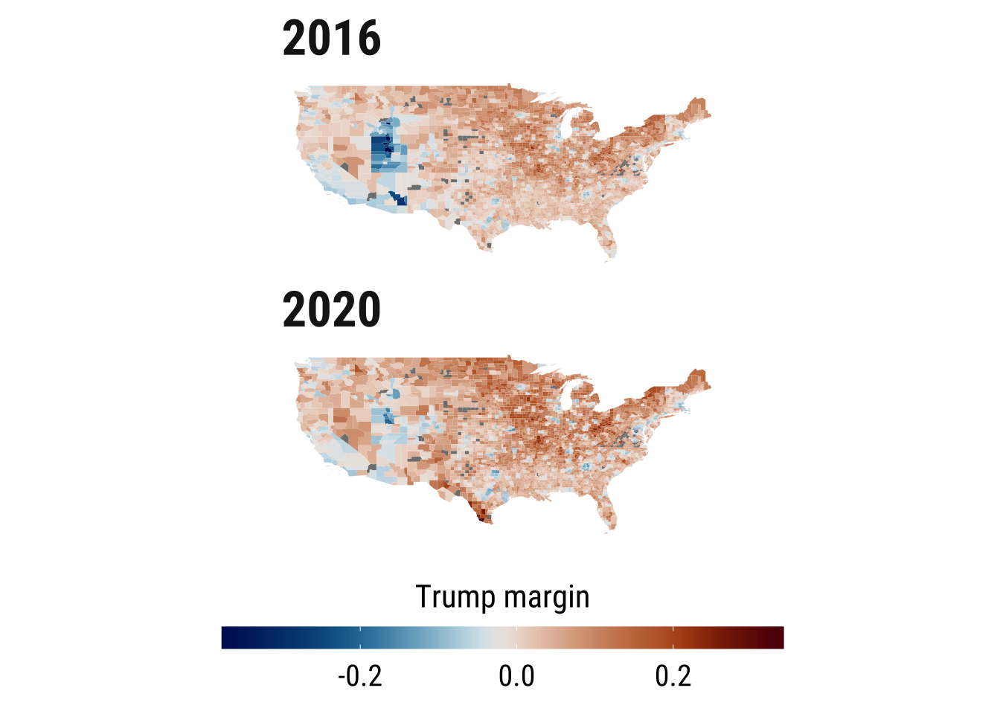
tiff(filename = "./output/Figure 1.tif", units="in", width=8, height=8, res=300, bg = "white")
margin_map
dev.off()quartz_off_screen
2 Figure 2 Histograms of US Presidential Elections 2016 and 2020 (county level)
Warning: The dot-dot notation (`..density..`) was deprecated in ggplot2 3.4.0.
ℹ Please use `after_stat(density)` instead.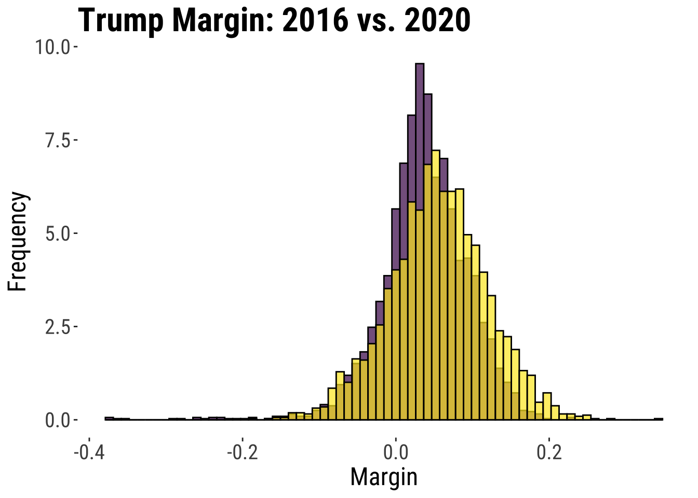
tiff(filename = "./output/Figure 2.tif", units="in", width=10, height=8, res=300, bg = "white")
p
dev.off()quartz_off_screen
2 Nonetheless, it’s important to acknowledge that social capital is not a one-dimensional concept. The tendency to view social capital as a single construct stems from practical limitations, particularly the scarcity of detailed data available at the county level. Recently, scholars have introduced a method for measuring distinct dimensions of social capital, including civic engagement, social cohesion, and economic connectedness.
Figure 3 Civic Engagement Dimension
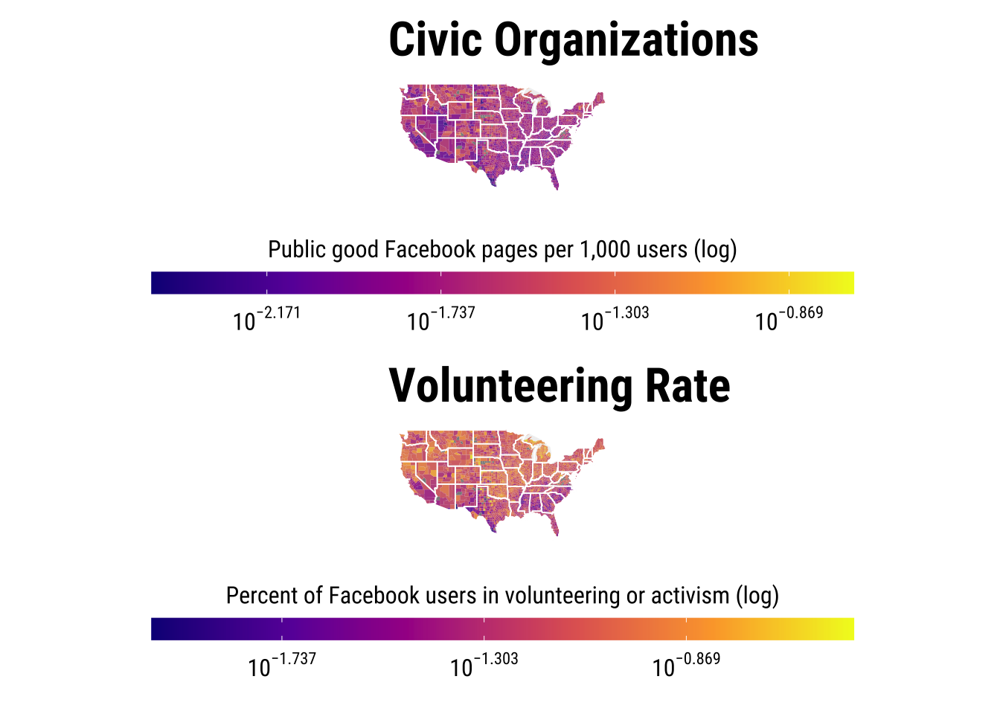
tiff(filename = "./output/Figure 3.tif", units="in", width=8, height=8, res=300, bg = "white")
map_civorg / map_vol
dev.off()quartz_off_screen
2 Figure 4 Social Cohesion Dimension
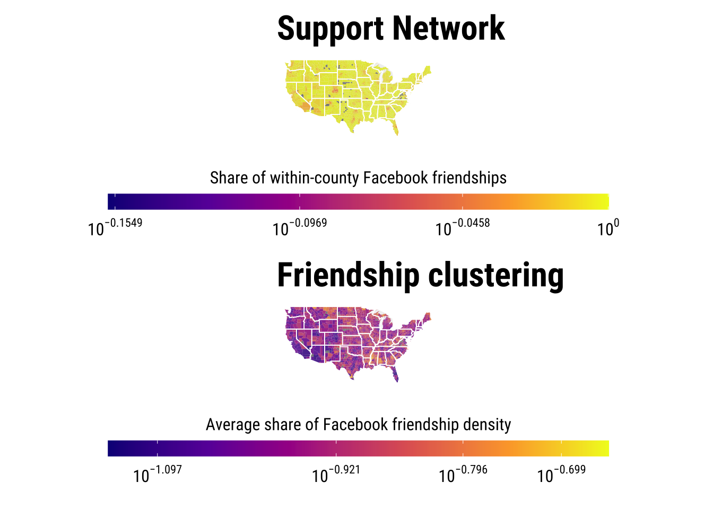
tiff(filename = "./output/Figure 4.tif", units="in", width=8, height=8, res=300, bg = "white")
map_sup / map_clu
dev.off()quartz_off_screen
2 Figure 5 Economic Connectedness Dimension
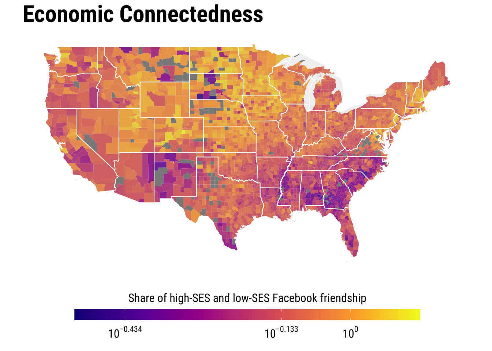
tiff(filename = "./output/Figure 5.tif", units="in", width=8, height=6, res=300, bg = "white")
last_plot()
dev.off()quartz_off_screen
2 Replicating Classic Models with META Data
Figure 6 Correlation Matrix
data_trump3 <- select(data_trump2, MAR_T_new, MAR_T_20_new, INC_PC_16, GINI_16,
civic_organizations_county, volunteering_rate_county, clustering_county,
support_ratio_county, ec_county, POP_DEN_16, UNE_16, EDU1_16, R_BLACK_16,
SEX_RATIO, AGE_DEP_YOUNG, MARRIED)
cormat <- cor(data_trump3, use="complete.obs", method="pearson")
# significance test
sig1 <- corrplot::cor.mtest(data_trump3, conf.level = .95)
colnames(cormat) <- c("trump margin 16",
"trump margin 20",
"income per capita",
"inequality",
"civic organizations",
"volunteering",
"clustering",
"support ratio",
"economic connectedness",
"density",
"unemployment",
"education",
"black population",
"sex ratio",
"age dependency",
"married")
rownames(cormat) <- c("trump margin 16",
"trump margin 20",
"income per capita",
"inequality",
"civic organizations",
"volunteering",
"clustering",
"support ratio",
"economic connectedness",
"density",
"unemployment",
"education",
"black population",
"sex ratio",
"age dependency",
"married")
# creta a correlogram
corrplot::corrplot(cormat, type="lower",
method = "circle",
order = "original",
tl.cex = 0.7,
p.mat = sig1$p, sig.level = .05,
col = viridis::viridis(100, option = "plasma"),
diag = FALSE)Warning in corrplot::corrplot(cormat, type = "lower", method = "circle", :
p.mat and corr may be not paired, their rownames and colnames are not totally
same!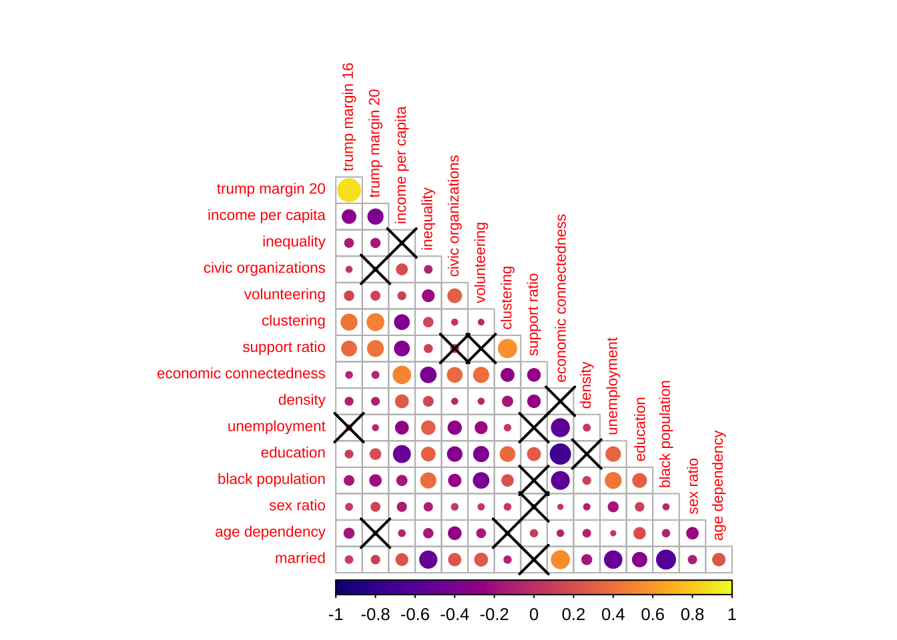
png(filename = "./output/correlagram.png", units="in", width=8, height=6, res=300, bg = "white")
corrplot::corrplot(cormat, type="lower",
method = "circle",
order = "original",
tl.cex = 0.7,
p.mat = sig1$p, sig.level = .05,
col = viridis::viridis(100, option = "plasma"),
diag = FALSE)Warning in corrplot::corrplot(cormat, type = "lower", method = "circle", :
p.mat and corr may be not paired, their rownames and colnames are not totally
same!dev.off()quartz_off_screen
2 For R&R - Traditional correlation matriz
# Compute correlation and significance
corr_test <- corr.test(data_trump3, use = "pairwise", method = "pearson", adjust = "none")
# Extract results
cormat <- corr_test$r
p_values <- corr_test$p
# Function to assign stars based on p-value
stars <- ifelse(p_values < 0.001, "***",
ifelse(p_values < 0.01, "**",
ifelse(p_values < 0.05, "*", "")))
# Combine correlation coefficients and stars
cormat_stars <- paste0(round(cormat, 3), stars)
# Convert to a matrix for readability
cormat_stars <- matrix(cormat_stars,
nrow = nrow(cormat),
dimnames = list(rownames(cormat), colnames(cormat)))
cormat_stars MAR_T_new MAR_T_20_new INC_PC_16 GINI_16
MAR_T_new "1***" "0.895***" "-0.31***" "-0.12***"
MAR_T_20_new "0.895***" "1***" "-0.385***" "-0.137***"
INC_PC_16 "-0.31***" "-0.385***" "1***" "-0.024"
GINI_16 "-0.12***" "-0.137***" "-0.024" "1***"
civic_organizations_county "0.051**" "0.027" "0.172***" "-0.089***"
volunteering_rate_county "0.139***" "0.126***" "0.108***" "-0.227***"
clustering_county "0.422***" "0.471***" "-0.368***" "0.157***"
support_ratio_county "0.35***" "0.404***" "-0.347***" "0.097***"
ec_county "-0.072***" "-0.078***" "0.52***" "-0.409***"
POP_DEN_16 "-0.102***" "-0.099***" "0.276***" "0.153***"
UNE_16 "-0.035" "-0.055**" "-0.266***" "0.298***"
EDU1_16 "0.098***" "0.188***" "-0.492***" "0.319***"
R_BLACK_16 "-0.148***" "-0.212***" "-0.182***" "0.387***"
SEX_RATIO "0.069***" "0.123***" "-0.137***" "-0.101***"
AGE_DEP_YOUNG "-0.157***" "-0.026" "-0.067***" "-0.132***"
MARRIED "0.087***" "0.116***" "0.247***" "-0.493***"
civic_organizations_county volunteering_rate_county
MAR_T_new "0.051**" "0.139***"
MAR_T_20_new "0.027" "0.126***"
INC_PC_16 "0.172***" "0.108***"
GINI_16 "-0.089***" "-0.227***"
civic_organizations_county "1***" "0.285***"
volunteering_rate_county "0.285***" "1***"
clustering_county "0.036*" "-0.063***"
support_ratio_county "-0.02" "0.017"
ec_county "0.368***" "0.387***"
POP_DEN_16 "-0.056**" "-0.056**"
UNE_16 "-0.257***" "-0.223***"
EDU1_16 "-0.312***" "-0.383***"
R_BLACK_16 "-0.242***" "-0.414***"
SEX_RATIO "0.072***" "0.051**"
AGE_DEP_YOUNG "-0.239***" "-0.119***"
MARRIED "0.245***" "0.282***"
clustering_county support_ratio_county ec_county
MAR_T_new "0.422***" "0.35***" "-0.072***"
MAR_T_20_new "0.471***" "0.404***" "-0.078***"
INC_PC_16 "-0.368***" "-0.347***" "0.52***"
GINI_16 "0.157***" "0.097***" "-0.409***"
civic_organizations_county "0.036*" "-0.02" "0.368***"
volunteering_rate_county "-0.063***" "0.017" "0.387***"
clustering_county "1***" "0.543***" "-0.282***"
support_ratio_county "0.543***" "1***" "-0.27***"
ec_county "-0.282***" "-0.27***" "1***"
POP_DEN_16 "-0.171***" "-0.249***" "0.011"
UNE_16 "0.075***" "-0.004" "-0.551***"
EDU1_16 "0.365***" "0.258***" "-0.706***"
R_BLACK_16 "0.25***" "0.025" "-0.54***"
SEX_RATIO "0.068***" "0.026" "0.042*"
AGE_DEP_YOUNG "0.027" "0.077***" "-0.073***"
MARRIED "-0.109***" "-0.023" "0.553***"
POP_DEN_16 UNE_16 EDU1_16 R_BLACK_16
MAR_T_new "-0.102***" "-0.035" "0.098***" "-0.148***"
MAR_T_20_new "-0.099***" "-0.055**" "0.188***" "-0.212***"
INC_PC_16 "0.276***" "-0.266***" "-0.492***" "-0.182***"
GINI_16 "0.153***" "0.298***" "0.319***" "0.387***"
civic_organizations_county "-0.056**" "-0.257***" "-0.312***" "-0.242***"
volunteering_rate_county "-0.056**" "-0.223***" "-0.383***" "-0.414***"
clustering_county "-0.171***" "0.075***" "0.365***" "0.25***"
support_ratio_county "-0.249***" "-0.004" "0.258***" "0.025"
ec_county "0.011" "-0.551***" "-0.706***" "-0.54***"
POP_DEN_16 "1***" "0.072***" "-0.009" "0.096***"
UNE_16 "0.072***" "1***" "0.339***" "0.399***"
EDU1_16 "-0.009" "0.339***" "1***" "0.329***"
R_BLACK_16 "0.096***" "0.399***" "0.329***" "1***"
SEX_RATIO "-0.065***" "-0.16***" "0.131***" "-0.05**"
AGE_DEP_YOUNG "-0.092***" "0.078***" "0.203***" "-0.093***"
MARRIED "-0.159***" "-0.512***" "-0.356***" "-0.613***"
SEX_RATIO AGE_DEP_YOUNG MARRIED
MAR_T_new "0.069***" "-0.157***" "0.087***"
MAR_T_20_new "0.123***" "-0.026" "0.116***"
INC_PC_16 "-0.137***" "-0.067***" "0.247***"
GINI_16 "-0.101***" "-0.132***" "-0.493***"
civic_organizations_county "0.072***" "-0.239***" "0.245***"
volunteering_rate_county "0.051**" "-0.119***" "0.282***"
clustering_county "0.068***" "0.027" "-0.109***"
support_ratio_county "0.026" "0.077***" "-0.023"
ec_county "0.042*" "-0.073***" "0.553***"
POP_DEN_16 "-0.065***" "-0.092***" "-0.159***"
UNE_16 "-0.16***" "0.078***" "-0.512***"
EDU1_16 "0.131***" "0.203***" "-0.356***"
R_BLACK_16 "-0.05**" "-0.093***" "-0.613***"
SEX_RATIO "1***" "-0.23***" "-0.106***"
AGE_DEP_YOUNG "-0.23***" "1***" "0.235***"
MARRIED "-0.106***" "0.235***" "1***" Table 1 Basic model for Trump Margin 2016, with META data
# Civic Engagement
modelnew16_1 <- data_trump2 %>% rename(
social_community = civic_organizations_county
) %>%
lm(MAR_T_new ~ INC_PC_16 + GINI_16 + EMP_AVE_CGR80_19 + social_community + POP_DEN_16 + UNE_16 + EDU1_16 + R_BLACK_16 + SEX_RATIO + AGE_DEP_YOUNG + MARRIED + factor(S_ID), data = .)
summary(modelnew16_1)
Call:
lm(formula = MAR_T_new ~ INC_PC_16 + GINI_16 + EMP_AVE_CGR80_19 +
social_community + POP_DEN_16 + UNE_16 + EDU1_16 + R_BLACK_16 +
SEX_RATIO + AGE_DEP_YOUNG + MARRIED + factor(S_ID), data = .)
Residuals:
Min 1Q Median 3Q Max
-0.33190 -0.01978 0.00045 0.01985 0.16487
Coefficients:
Estimate Std. Error t value Pr(>|t|)
(Intercept) 0.03331353161 0.01980910097 1.682 0.092727 .
INC_PC_16 -0.00000164757 0.00000008468 -19.456 < 0.0000000000000002 ***
GINI_16 -0.02592144349 0.02439326639 -1.063 0.288029
EMP_AVE_CGR80_19 -0.85561723762 0.13476229083 -6.349 0.0000000002498828 ***
social_community 0.42094637349 0.08006020783 5.258 0.0000001561182054 ***
POP_DEN_16 -0.00000105886 0.00000042560 -2.488 0.012904 *
UNE_16 0.00135812854 0.00057917317 2.345 0.019096 *
EDU1_16 0.00200718752 0.00016154672 12.425 < 0.0000000000000002 ***
R_BLACK_16 -0.00030041028 0.00008034855 -3.739 0.000188 ***
SEX_RATIO 0.00004260124 0.00006180316 0.689 0.490685
AGE_DEP_YOUNG -0.00109663214 0.00014398669 -7.616 0.0000000000000349 ***
MARRIED 0.00141596445 0.00016161079 8.762 < 0.0000000000000002 ***
factor(S_ID)AR -0.00927116153 0.00599992086 -1.545 0.122402
factor(S_ID)AZ -0.11119931123 0.01063357858 -10.457 < 0.0000000000000002 ***
factor(S_ID)CA -0.03862962476 0.00684569646 -5.643 0.0000000183033960 ***
factor(S_ID)CO -0.00325953036 0.00677067867 -0.481 0.630255
factor(S_ID)CT 0.04020734692 0.01347040250 2.985 0.002860 **
factor(S_ID)DC 0.04366926509 0.03585775020 1.218 0.223379
factor(S_ID)DE 0.01604185358 0.02080503373 0.771 0.440735
factor(S_ID)FL -0.00173145112 0.00624561816 -0.277 0.781626
factor(S_ID)GA -0.01174358327 0.00514066832 -2.284 0.022416 *
factor(S_ID)HI 0.02888467919 0.02094323545 1.379 0.167941
factor(S_ID)IA 0.08251906982 0.00610198584 13.523 < 0.0000000000000002 ***
factor(S_ID)ID -0.06455586560 0.00735625468 -8.776 < 0.0000000000000002 ***
factor(S_ID)IL 0.03708797735 0.00590792789 6.278 0.0000000003940835 ***
factor(S_ID)IN 0.04378675258 0.00606452969 7.220 0.0000000000006575 ***
factor(S_ID)KS -0.00831855621 0.00612499000 -1.358 0.174525
factor(S_ID)KY 0.01405461575 0.00564032668 2.492 0.012764 *
factor(S_ID)LA 0.00408295048 0.00621077083 0.657 0.510976
factor(S_ID)MA 0.00620325620 0.01081668504 0.573 0.566357
factor(S_ID)MD 0.01298640600 0.00856655632 1.516 0.129641
factor(S_ID)ME 0.03295959925 0.01009974808 3.263 0.001113 **
factor(S_ID)MI 0.03502598962 0.00619044511 5.658 0.0000000167734284 ***
factor(S_ID)MN 0.05998473111 0.00626204308 9.579 < 0.0000000000000002 ***
factor(S_ID)MO 0.04797384172 0.00576746210 8.318 < 0.0000000000000002 ***
factor(S_ID)MS 0.00429603974 0.00588355614 0.730 0.465340
factor(S_ID)MT 0.01343298961 0.00705757192 1.903 0.057093 .
factor(S_ID)NC -0.01056350120 0.00561953822 -1.880 0.060236 .
factor(S_ID)ND 0.06724057815 0.00712246536 9.441 < 0.0000000000000002 ***
factor(S_ID)NE 0.03076160123 0.00639812155 4.808 0.0000016014373939 ***
factor(S_ID)NH 0.01701504632 0.01223874149 1.390 0.164554
factor(S_ID)NJ 0.03598651710 0.00912738922 3.943 0.0000824405839839 ***
factor(S_ID)NM -0.02889703830 0.00814663589 -3.547 0.000396 ***
factor(S_ID)NV 0.00144896481 0.01012498309 0.143 0.886215
factor(S_ID)NY 0.09070781047 0.00671379457 13.511 < 0.0000000000000002 ***
factor(S_ID)OH 0.06871892540 0.00606782860 11.325 < 0.0000000000000002 ***
factor(S_ID)OK -0.00077205558 0.00624804338 -0.124 0.901666
factor(S_ID)OR -0.02645178965 0.00765104239 -3.457 0.000553 ***
factor(S_ID)PA 0.03773732355 0.00647012202 5.833 0.0000000060497036 ***
factor(S_ID)RI 0.03015510167 0.01654577316 1.823 0.068476 .
factor(S_ID)SC -0.00368925829 0.00681434593 -0.541 0.588276
factor(S_ID)SD 0.05650434313 0.00676487557 8.353 < 0.0000000000000002 ***
factor(S_ID)TN 0.01908647316 0.00580906493 3.286 0.001029 **
factor(S_ID)TX -0.02535295836 0.00522752684 -4.850 0.0000012991989597 ***
factor(S_ID)UT -0.18558250301 0.00866509349 -21.417 < 0.0000000000000002 ***
factor(S_ID)VA 0.00887853288 0.00594802549 1.493 0.135626
factor(S_ID)VT 0.00165868560 0.01067749485 0.155 0.876561
factor(S_ID)WA -0.02319020316 0.00748952863 -3.096 0.001978 **
factor(S_ID)WI 0.04431879415 0.00647856976 6.841 0.0000000000095318 ***
factor(S_ID)WV 0.03800526244 0.00669000378 5.681 0.0000000147020766 ***
factor(S_ID)WY -0.00142548336 0.00901502107 -0.158 0.874371
---
Signif. codes: 0 '***' 0.001 '**' 0.01 '*' 0.05 '.' 0.1 ' ' 1
Residual standard error: 0.03519 on 2955 degrees of freedom
(1 observation deleted due to missingness)
Multiple R-squared: 0.6275, Adjusted R-squared: 0.62
F-statistic: 82.98 on 60 and 2955 DF, p-value: < 0.00000000000000022modelnew16_2 <- data_trump2 %>% rename(
social_community = volunteering_rate_county
) %>%
lm(MAR_T_new ~ INC_PC_16 + GINI_16 + EMP_AVE_CGR80_19 + social_community + POP_DEN_16 + UNE_16 + EDU1_16 + R_BLACK_16 + SEX_RATIO + AGE_DEP_YOUNG + MARRIED + factor(S_ID), data = .)
summary(modelnew16_2)
Call:
lm(formula = MAR_T_new ~ INC_PC_16 + GINI_16 + EMP_AVE_CGR80_19 +
social_community + POP_DEN_16 + UNE_16 + EDU1_16 + R_BLACK_16 +
SEX_RATIO + AGE_DEP_YOUNG + MARRIED + factor(S_ID), data = .)
Residuals:
Min 1Q Median 3Q Max
-0.34354 -0.01924 0.00034 0.02048 0.16383
Coefficients:
Estimate Std. Error t value Pr(>|t|)
(Intercept) 0.02769674538 0.01989225158 1.392 0.163925
INC_PC_16 -0.00000163701 0.00000008483 -19.297 < 0.0000000000000002 ***
GINI_16 -0.01815668025 0.02432500608 -0.746 0.455473
EMP_AVE_CGR80_19 -0.81550341943 0.13473274690 -6.053 0.00000000160343636 ***
social_community 0.11690442094 0.02405344545 4.860 0.00000123390921812 ***
POP_DEN_16 -0.00000115477 0.00000042521 -2.716 0.006651 **
UNE_16 0.00128692872 0.00057969941 2.220 0.026495 *
EDU1_16 0.00212039233 0.00016430711 12.905 < 0.0000000000000002 ***
R_BLACK_16 -0.00023819197 0.00008131748 -2.929 0.003425 **
SEX_RATIO 0.00003125208 0.00006187619 0.505 0.613544
AGE_DEP_YOUNG -0.00122073964 0.00013956535 -8.747 < 0.0000000000000002 ***
MARRIED 0.00152046467 0.00015959318 9.527 < 0.0000000000000002 ***
factor(S_ID)AR -0.01164386547 0.00603360290 -1.930 0.053723 .
factor(S_ID)AZ -0.11019479731 0.01063660634 -10.360 < 0.0000000000000002 ***
factor(S_ID)CA -0.03892710417 0.00685735726 -5.677 0.00000001506445683 ***
factor(S_ID)CO 0.00039312055 0.00671437315 0.059 0.953315
factor(S_ID)CT 0.03969072736 0.01348060104 2.944 0.003262 **
factor(S_ID)DC 0.04869439831 0.03583801617 1.359 0.174334
factor(S_ID)DE 0.01628927271 0.02081882922 0.782 0.434025
factor(S_ID)FL -0.00216797318 0.00624988254 -0.347 0.728704
factor(S_ID)GA -0.01201371427 0.00514622152 -2.334 0.019638 *
factor(S_ID)HI 0.02738538579 0.02096531813 1.306 0.191578
factor(S_ID)IA 0.08201649891 0.00611759953 13.407 < 0.0000000000000002 ***
factor(S_ID)ID -0.06569160242 0.00738971573 -8.890 < 0.0000000000000002 ***
factor(S_ID)IL 0.03458849962 0.00595126096 5.812 0.00000000683356496 ***
factor(S_ID)IN 0.04068241253 0.00613393423 6.632 0.00000000003913694 ***
factor(S_ID)KS -0.00860943572 0.00615177724 -1.400 0.161767
factor(S_ID)KY 0.01269816956 0.00564964398 2.248 0.024675 *
factor(S_ID)LA 0.00061850101 0.00624526143 0.099 0.921117
factor(S_ID)MA 0.00645802919 0.01082325542 0.597 0.550766
factor(S_ID)MD 0.01290221115 0.00857442958 1.505 0.132500
factor(S_ID)ME 0.03335044116 0.01010467942 3.300 0.000977 ***
factor(S_ID)MI 0.02965550363 0.00636994883 4.656 0.00000337390722286 ***
factor(S_ID)MN 0.06145434018 0.00625148311 9.830 < 0.0000000000000002 ***
factor(S_ID)MO 0.04599073745 0.00582292117 7.898 0.00000000000000395 ***
factor(S_ID)MS 0.00248417113 0.00589622235 0.421 0.673555
factor(S_ID)MT 0.01579122030 0.00701837754 2.250 0.024523 *
factor(S_ID)NC -0.00951085620 0.00561653400 -1.693 0.090491 .
factor(S_ID)ND 0.06788814463 0.00712140242 9.533 < 0.0000000000000002 ***
factor(S_ID)NE 0.03117435361 0.00639939513 4.871 0.00000116614996823 ***
factor(S_ID)NH 0.01842290397 0.01224053223 1.505 0.132412
factor(S_ID)NJ 0.03490629164 0.00913557749 3.821 0.000136 ***
factor(S_ID)NM -0.02544284044 0.00811432028 -3.136 0.001732 **
factor(S_ID)NV -0.00020441250 0.01014675442 -0.020 0.983929
factor(S_ID)NY 0.09094738435 0.00671733607 13.539 < 0.0000000000000002 ***
factor(S_ID)OH 0.06634073155 0.00610458264 10.867 < 0.0000000000000002 ***
factor(S_ID)OK -0.00520451022 0.00636363826 -0.818 0.413508
factor(S_ID)OR -0.02636912429 0.00765992364 -3.442 0.000584 ***
factor(S_ID)PA 0.03737324633 0.00647717366 5.770 0.00000000874905235 ***
factor(S_ID)RI 0.02976436029 0.01655680306 1.798 0.072325 .
factor(S_ID)SC -0.00326562021 0.00681860209 -0.479 0.632025
factor(S_ID)SD 0.05811817579 0.00674616167 8.615 < 0.0000000000000002 ***
factor(S_ID)TN 0.01697251517 0.00582307608 2.915 0.003587 **
factor(S_ID)TX -0.02563116289 0.00523827287 -4.893 0.00000104603008602 ***
factor(S_ID)UT -0.18312982634 0.00864423932 -21.185 < 0.0000000000000002 ***
factor(S_ID)VA 0.00860485444 0.00596100234 1.444 0.148979
factor(S_ID)VT 0.00406647590 0.01066281788 0.381 0.702956
factor(S_ID)WA -0.02308221657 0.00749687371 -3.079 0.002097 **
factor(S_ID)WI 0.04367460866 0.00649416516 6.725 0.00000000002096796 ***
factor(S_ID)WV 0.03393392196 0.00673596742 5.038 0.00000049943640121 ***
factor(S_ID)WY -0.00007052636 0.00900187944 -0.008 0.993749
---
Signif. codes: 0 '***' 0.001 '**' 0.01 '*' 0.05 '.' 0.1 ' ' 1
Residual standard error: 0.03521 on 2955 degrees of freedom
(1 observation deleted due to missingness)
Multiple R-squared: 0.627, Adjusted R-squared: 0.6195
F-statistic: 82.8 on 60 and 2955 DF, p-value: < 0.00000000000000022# Social Cohesion
modelnew16_3 <- data_trump2 %>% rename(
social_community = clustering_county
) %>%
lm(MAR_T_new ~ INC_PC_16 + GINI_16 + EMP_AVE_CGR80_19 + social_community + POP_DEN_16 + UNE_16 + EDU1_16 + R_BLACK_16 + SEX_RATIO + AGE_DEP_YOUNG + MARRIED + factor(S_ID), data = .)
summary(modelnew16_3)
Call:
lm(formula = MAR_T_new ~ INC_PC_16 + GINI_16 + EMP_AVE_CGR80_19 +
social_community + POP_DEN_16 + UNE_16 + EDU1_16 + R_BLACK_16 +
SEX_RATIO + AGE_DEP_YOUNG + MARRIED + factor(S_ID), data = .)
Residuals:
Min 1Q Median 3Q Max
-0.32523 -0.01869 0.00100 0.01973 0.15408
Coefficients:
Estimate Std. Error t value Pr(>|t|)
(Intercept) -0.004770858708 0.018833214126 -0.253 0.800037
INC_PC_16 -0.000001379695 0.000000081278 -16.975 < 0.0000000000000002
GINI_16 -0.076103543779 0.023180204162 -3.283 0.001039
EMP_AVE_CGR80_19 -0.817093048074 0.127254345480 -6.421 0.000000000157245309
social_community 0.802171294260 0.040965740557 19.582 < 0.0000000000000002
POP_DEN_16 0.000000000636 0.000000406166 0.002 0.998751
UNE_16 0.001739388840 0.000547802697 3.175 0.001513
EDU1_16 0.000937519419 0.000161507169 5.805 0.000000007128020273
R_BLACK_16 -0.000600154568 0.000077502627 -7.744 0.000000000000013171
SEX_RATIO 0.000009358355 0.000058438592 0.160 0.872782
AGE_DEP_YOUNG -0.001100051038 0.000131202242 -8.384 < 0.0000000000000002
MARRIED 0.001097700691 0.000152392076 7.203 0.000000000000743392
factor(S_ID)AR -0.009197009672 0.005670301534 -1.622 0.104918
factor(S_ID)AZ -0.097058749915 0.010065839448 -9.642 < 0.0000000000000002
factor(S_ID)CA -0.025468997384 0.006480452546 -3.930 0.000086847550180047
factor(S_ID)CO 0.007054926957 0.006342930756 1.112 0.266121
factor(S_ID)CT 0.038383548759 0.012732691635 3.015 0.002595
factor(S_ID)DC 0.067794817740 0.033830330739 2.004 0.045165
factor(S_ID)DE 0.033926749507 0.019683910406 1.724 0.084889
factor(S_ID)FL 0.012576243316 0.005949684868 2.114 0.034619
factor(S_ID)GA -0.004671483367 0.004868451087 -0.960 0.337364
factor(S_ID)HI 0.029445872681 0.019793449490 1.488 0.136948
factor(S_ID)IA 0.070638617257 0.005798269304 12.183 < 0.0000000000000002
factor(S_ID)ID -0.057245364721 0.006933120932 -8.257 0.000000000000000223
factor(S_ID)IL 0.026318010564 0.005613630702 4.688 0.000002880599387466
factor(S_ID)IN 0.041271454841 0.005730029414 7.203 0.000000000000745941
factor(S_ID)KS -0.011497675940 0.005734833196 -2.005 0.045066
factor(S_ID)KY 0.011841043143 0.005332302022 2.221 0.026452
factor(S_ID)LA 0.002747719759 0.005870114150 0.468 0.639757
factor(S_ID)MA 0.002275372230 0.010222104773 0.223 0.823867
factor(S_ID)MD 0.019008059857 0.008092770271 2.349 0.018901
factor(S_ID)ME 0.025783714645 0.009546262135 2.701 0.006954
factor(S_ID)MI 0.030590028917 0.005848624745 5.230 0.000000181052355099
factor(S_ID)MN 0.049598930584 0.005938129516 8.353 < 0.0000000000000002
factor(S_ID)MO 0.046972123170 0.005437584857 8.638 < 0.0000000000000002
factor(S_ID)MS -0.001551778892 0.005568408658 -0.279 0.780513
factor(S_ID)MT 0.008479678147 0.006628256309 1.279 0.200884
factor(S_ID)NC -0.002158374856 0.005315906512 -0.406 0.684756
factor(S_ID)ND 0.056524785236 0.006750274335 8.374 < 0.0000000000000002
factor(S_ID)NE 0.027220539885 0.006023246492 4.519 0.000006449652603542
factor(S_ID)NH 0.015117532341 0.011562766985 1.307 0.191168
factor(S_ID)NJ 0.035691210569 0.008627287774 4.137 0.000036167098198389
factor(S_ID)NM -0.020519992444 0.007666182068 -2.677 0.007476
factor(S_ID)NV 0.005775676880 0.009568823533 0.604 0.546160
factor(S_ID)NY 0.088465267631 0.006338794548 13.956 < 0.0000000000000002
factor(S_ID)OH 0.068546819822 0.005733924857 11.955 < 0.0000000000000002
factor(S_ID)OK 0.005504129102 0.005904693487 0.932 0.351329
factor(S_ID)OR -0.018137476615 0.007205620852 -2.517 0.011884
factor(S_ID)PA 0.033541432013 0.006119238037 5.481 0.000000045774199319
factor(S_ID)RI 0.029736704699 0.015639130703 1.901 0.057343
factor(S_ID)SC 0.000835131754 0.006444167281 0.130 0.896896
factor(S_ID)SD 0.047312145117 0.006393092108 7.401 0.000000000000175905
factor(S_ID)TN 0.020860850811 0.005491441540 3.799 0.000148
factor(S_ID)TX -0.013583176919 0.004952945524 -2.742 0.006135
factor(S_ID)UT -0.182433927721 0.008160364289 -22.356 < 0.0000000000000002
factor(S_ID)VA 0.012562077365 0.005602388616 2.242 0.025018
factor(S_ID)VT -0.001802841088 0.010074406721 -0.179 0.857987
factor(S_ID)WA -0.016355254728 0.007057971869 -2.317 0.020557
factor(S_ID)WI 0.037261377210 0.006130988586 6.078 0.000000001376774936
factor(S_ID)WV 0.028667959826 0.006339376231 4.522 0.000006360764342396
factor(S_ID)WY -0.001389620628 0.008476200321 -0.164 0.869787
(Intercept)
INC_PC_16 ***
GINI_16 **
EMP_AVE_CGR80_19 ***
social_community ***
POP_DEN_16
UNE_16 **
EDU1_16 ***
R_BLACK_16 ***
SEX_RATIO
AGE_DEP_YOUNG ***
MARRIED ***
factor(S_ID)AR
factor(S_ID)AZ ***
factor(S_ID)CA ***
factor(S_ID)CO
factor(S_ID)CT **
factor(S_ID)DC *
factor(S_ID)DE .
factor(S_ID)FL *
factor(S_ID)GA
factor(S_ID)HI
factor(S_ID)IA ***
factor(S_ID)ID ***
factor(S_ID)IL ***
factor(S_ID)IN ***
factor(S_ID)KS *
factor(S_ID)KY *
factor(S_ID)LA
factor(S_ID)MA
factor(S_ID)MD *
factor(S_ID)ME **
factor(S_ID)MI ***
factor(S_ID)MN ***
factor(S_ID)MO ***
factor(S_ID)MS
factor(S_ID)MT
factor(S_ID)NC
factor(S_ID)ND ***
factor(S_ID)NE ***
factor(S_ID)NH
factor(S_ID)NJ ***
factor(S_ID)NM **
factor(S_ID)NV
factor(S_ID)NY ***
factor(S_ID)OH ***
factor(S_ID)OK
factor(S_ID)OR *
factor(S_ID)PA ***
factor(S_ID)RI .
factor(S_ID)SC
factor(S_ID)SD ***
factor(S_ID)TN ***
factor(S_ID)TX **
factor(S_ID)UT ***
factor(S_ID)VA *
factor(S_ID)VT
factor(S_ID)WA *
factor(S_ID)WI ***
factor(S_ID)WV ***
factor(S_ID)WY
---
Signif. codes: 0 '***' 0.001 '**' 0.01 '*' 0.05 '.' 0.1 ' ' 1
Residual standard error: 0.03326 on 2955 degrees of freedom
(1 observation deleted due to missingness)
Multiple R-squared: 0.6672, Adjusted R-squared: 0.6605
F-statistic: 98.76 on 60 and 2955 DF, p-value: < 0.00000000000000022modelnew16_4 <- data_trump2 %>% rename(
social_community = support_ratio_county
) %>%
lm(MAR_T_new ~ INC_PC_16 + GINI_16 + EMP_AVE_CGR80_19 + social_community + POP_DEN_16 + UNE_16 + EDU1_16 + R_BLACK_16 + SEX_RATIO + AGE_DEP_YOUNG + MARRIED + factor(S_ID), data = .)
summary(modelnew16_4)
Call:
lm(formula = MAR_T_new ~ INC_PC_16 + GINI_16 + EMP_AVE_CGR80_19 +
social_community + POP_DEN_16 + UNE_16 + EDU1_16 + R_BLACK_16 +
SEX_RATIO + AGE_DEP_YOUNG + MARRIED + factor(S_ID), data = .)
Residuals:
Min 1Q Median 3Q Max
-0.303964 -0.018566 0.000009 0.018761 0.248357
Coefficients:
Estimate Std. Error t value Pr(>|t|)
(Intercept) -0.64960055332 0.05281191533 -12.300 < 0.0000000000000002 ***
INC_PC_16 -0.00000146659 0.00000008353 -17.558 < 0.0000000000000002 ***
GINI_16 -0.06477153458 0.02391731468 -2.708 0.006805 **
EMP_AVE_CGR80_19 -0.45027314174 0.13372941262 -3.367 0.000769 ***
social_community 0.70918034796 0.05084551189 13.948 < 0.0000000000000002 ***
POP_DEN_16 0.00000006373 0.00000042312 0.151 0.880278
UNE_16 0.00192645469 0.00056513779 3.409 0.000661 ***
EDU1_16 0.00154886384 0.00016002457 9.679 < 0.0000000000000002 ***
R_BLACK_16 -0.00030420323 0.00007819024 -3.891 0.000102 ***
SEX_RATIO 0.00008457208 0.00006022391 1.404 0.160336
AGE_DEP_YOUNG -0.00123756972 0.00013473374 -9.185 < 0.0000000000000002 ***
MARRIED 0.00143702662 0.00015525289 9.256 < 0.0000000000000002 ***
factor(S_ID)AR -0.00904962923 0.00583786196 -1.550 0.121210
factor(S_ID)AZ -0.10294659838 0.01035330448 -9.943 < 0.0000000000000002 ***
factor(S_ID)CA -0.02745236601 0.00667776968 -4.111 0.000040466261811 ***
factor(S_ID)CO 0.00668035918 0.00653404695 1.022 0.306679
factor(S_ID)CT 0.03974100624 0.01310858443 3.032 0.002453 **
factor(S_ID)DC 0.06322204977 0.03482843656 1.815 0.069588 .
factor(S_ID)DE 0.01514457470 0.02024610397 0.748 0.454505
factor(S_ID)FL 0.00298297676 0.00608800847 0.490 0.624187
factor(S_ID)GA -0.00463058028 0.00502226710 -0.922 0.356599
factor(S_ID)HI 0.02772258279 0.02037933244 1.360 0.173830
factor(S_ID)IA 0.07873307030 0.00593893182 13.257 < 0.0000000000000002 ***
factor(S_ID)ID -0.05947739559 0.00713599386 -8.335 < 0.0000000000000002 ***
factor(S_ID)IL 0.03411505795 0.00575349652 5.929 0.000000003391627 ***
factor(S_ID)IN 0.04308872771 0.00589768473 7.306 0.000000000000352 ***
factor(S_ID)KS -0.00871982166 0.00590132861 -1.478 0.139621
factor(S_ID)KY 0.01534078085 0.00548974196 2.794 0.005232 **
factor(S_ID)LA 0.00239748973 0.00604405361 0.397 0.691640
factor(S_ID)MA 0.00634910316 0.01052038889 0.604 0.546219
factor(S_ID)MD 0.01468156770 0.00832911155 1.763 0.078058 .
factor(S_ID)ME 0.03303013549 0.00981621812 3.365 0.000776 ***
factor(S_ID)MI 0.03492429149 0.00601371705 5.807 0.000000007018551 ***
factor(S_ID)MN 0.06084936813 0.00607690796 10.013 < 0.0000000000000002 ***
factor(S_ID)MO 0.05160621828 0.00559620967 9.222 < 0.0000000000000002 ***
factor(S_ID)MS 0.00322203728 0.00572568825 0.563 0.573659
factor(S_ID)MT 0.01436168156 0.00681023082 2.109 0.035042 *
factor(S_ID)NC -0.00599917895 0.00546539060 -1.098 0.272439
factor(S_ID)ND 0.06399897013 0.00692706370 9.239 < 0.0000000000000002 ***
factor(S_ID)NE 0.02900997281 0.00620179544 4.678 0.000003031794855 ***
factor(S_ID)NH 0.02026457228 0.01190260106 1.703 0.088761 .
factor(S_ID)NJ 0.03597988374 0.00888223593 4.051 0.000052363296603 ***
factor(S_ID)NM -0.02374193659 0.00788996749 -3.009 0.002642 **
factor(S_ID)NV 0.01654584916 0.00990006261 1.671 0.094771 .
factor(S_ID)NY 0.08819847579 0.00653044682 13.506 < 0.0000000000000002 ***
factor(S_ID)OH 0.06764710871 0.00590463597 11.457 < 0.0000000000000002 ***
factor(S_ID)OK 0.00029872197 0.00607405233 0.049 0.960779
factor(S_ID)OR -0.01986879908 0.00741747717 -2.679 0.007433 **
factor(S_ID)PA 0.03462789846 0.00630084222 5.496 0.000000042214547 ***
factor(S_ID)RI 0.02909546234 0.01610136412 1.807 0.070861 .
factor(S_ID)SC -0.00255193816 0.00663122731 -0.385 0.700386
factor(S_ID)SD 0.05487973269 0.00655809826 8.368 < 0.0000000000000002 ***
factor(S_ID)TN 0.02123292462 0.00565552062 3.754 0.000177 ***
factor(S_ID)TX -0.02095359643 0.00507633169 -4.128 0.000037653694535 ***
factor(S_ID)UT -0.18426408967 0.00840346024 -21.927 < 0.0000000000000002 ***
factor(S_ID)VA 0.01649986019 0.00577874619 2.855 0.004330 **
factor(S_ID)VT 0.00339536380 0.01036599440 0.328 0.743276
factor(S_ID)WA -0.01618290535 0.00726913663 -2.226 0.026073 *
factor(S_ID)WI 0.04299571241 0.00629877411 6.826 0.000000000010550 ***
factor(S_ID)WV 0.03609817069 0.00651073446 5.544 0.000000032095777 ***
factor(S_ID)WY -0.00481247933 0.00874370136 -0.550 0.582091
---
Signif. codes: 0 '***' 0.001 '**' 0.01 '*' 0.05 '.' 0.1 ' ' 1
Residual standard error: 0.03424 on 2955 degrees of freedom
(1 observation deleted due to missingness)
Multiple R-squared: 0.6473, Adjusted R-squared: 0.6401
F-statistic: 90.38 on 60 and 2955 DF, p-value: < 0.00000000000000022# Economic Connectedness
modelnew16_5 <- data_trump2 %>% rename(
social_community = ec_county
) %>%
lm(MAR_T_new ~ INC_PC_16 + GINI_16 + EMP_AVE_CGR80_19 + social_community + POP_DEN_16 + UNE_16 + EDU1_16 + R_BLACK_16 + SEX_RATIO + AGE_DEP_YOUNG + MARRIED + factor(S_ID), data = .)
summary(modelnew16_5)
Call:
lm(formula = MAR_T_new ~ INC_PC_16 + GINI_16 + EMP_AVE_CGR80_19 +
social_community + POP_DEN_16 + UNE_16 + EDU1_16 + R_BLACK_16 +
SEX_RATIO + AGE_DEP_YOUNG + MARRIED + factor(S_ID), data = .)
Residuals:
Min 1Q Median 3Q Max
-0.295248 -0.019146 0.000111 0.020822 0.151276
Coefficients:
Estimate Std. Error t value Pr(>|t|)
(Intercept) 0.12471884896 0.02139333308 5.830 0.00000000616349843 ***
INC_PC_16 -0.00000144637 0.00000008576 -16.865 < 0.0000000000000002 ***
GINI_16 -0.06432516700 0.02483227096 -2.590 0.009635 **
EMP_AVE_CGR80_19 -0.73923126011 0.13345947793 -5.539 0.00000003315660479 ***
social_community -0.09551123278 0.00818902776 -11.663 < 0.0000000000000002 ***
POP_DEN_16 -0.00000094337 0.00000041530 -2.272 0.023187 *
UNE_16 -0.00005508763 0.00061928045 -0.089 0.929124
EDU1_16 0.00111883281 0.00018584534 6.020 0.00000000196150408 ***
R_BLACK_16 -0.00044381984 0.00008194100 -5.416 0.00000006583136707 ***
SEX_RATIO 0.00009204707 0.00006331997 1.454 0.146143
AGE_DEP_YOUNG -0.00172199121 0.00014186637 -12.138 < 0.0000000000000002 ***
MARRIED 0.00198719774 0.00016487041 12.053 < 0.0000000000000002 ***
factor(S_ID)AR -0.00417911333 0.00588282974 -0.710 0.477519
factor(S_ID)AZ -0.10404453929 0.01040213671 -10.002 < 0.0000000000000002 ***
factor(S_ID)CA -0.02793290086 0.00676208574 -4.131 0.00003717435641155 ***
factor(S_ID)CO 0.01381038766 0.00676063551 2.043 0.041166 *
factor(S_ID)CT 0.05422825696 0.01319514623 4.110 0.00004071754444911 ***
factor(S_ID)DC 0.08622146939 0.03498339887 2.465 0.013773 *
factor(S_ID)DE 0.02269243728 0.02029428000 1.118 0.263588
factor(S_ID)FL -0.00413747777 0.00611853022 -0.676 0.498955
factor(S_ID)GA -0.01113952494 0.00509383743 -2.187 0.028832 *
factor(S_ID)HI 0.05254108227 0.02050727210 2.562 0.010455 *
factor(S_ID)IA 0.10013503049 0.00610083149 16.413 < 0.0000000000000002 ***
factor(S_ID)ID -0.05331560712 0.00725895270 -7.345 0.00000000000026668 ***
factor(S_ID)IL 0.04551749269 0.00582403181 7.815 0.00000000000000761 ***
factor(S_ID)IN 0.05115066954 0.00596366125 8.577 < 0.0000000000000002 ***
factor(S_ID)KS 0.00986410827 0.00603377549 1.635 0.102197
factor(S_ID)KY 0.02991562525 0.00569963553 5.249 0.00000016428078515 ***
factor(S_ID)LA 0.01540289823 0.00617890448 2.493 0.012729 *
factor(S_ID)MA 0.01890291250 0.01059593183 1.784 0.074532 .
factor(S_ID)MD 0.03256422966 0.00848337496 3.839 0.000126 ***
factor(S_ID)ME 0.03830247442 0.00985893635 3.885 0.000105 ***
factor(S_ID)MI 0.04035336637 0.00607849576 6.639 0.00000000003765422 ***
factor(S_ID)MN 0.08342841106 0.00635788057 13.122 < 0.0000000000000002 ***
factor(S_ID)MO 0.06221654822 0.00573292747 10.852 < 0.0000000000000002 ***
factor(S_ID)MS 0.01542247403 0.00585861436 2.632 0.008522 **
factor(S_ID)MT 0.03087676569 0.00716518490 4.309 0.00001692602339085 ***
factor(S_ID)NC -0.01074089359 0.00550896234 -1.950 0.051307 .
factor(S_ID)ND 0.09284555835 0.00729402414 12.729 < 0.0000000000000002 ***
factor(S_ID)NE 0.04915377447 0.00639357089 7.688 0.00000000000002034 ***
factor(S_ID)NH 0.04067917432 0.01208077846 3.367 0.000769 ***
factor(S_ID)NJ 0.04785656659 0.00896840499 5.336 0.00000010230002282 ***
factor(S_ID)NM -0.03040739072 0.00817849876 -3.718 0.000205 ***
factor(S_ID)NV 0.00829628369 0.01014864432 0.817 0.413723
factor(S_ID)NY 0.10001231133 0.00659642191 15.162 < 0.0000000000000002 ***
factor(S_ID)OH 0.07454398858 0.00596411399 12.499 < 0.0000000000000002 ***
factor(S_ID)OK 0.00868104061 0.00615270981 1.411 0.158373
factor(S_ID)OR -0.02145048275 0.00753066322 -2.848 0.004425 **
factor(S_ID)PA 0.04593589968 0.00636802186 7.214 0.00000000000069336 ***
factor(S_ID)RI 0.04943143753 0.01622621881 3.046 0.002337 **
factor(S_ID)SC -0.00524077098 0.00667053524 -0.786 0.432131
factor(S_ID)SD 0.07890825579 0.00688899615 11.454 < 0.0000000000000002 ***
factor(S_ID)TN 0.01898836432 0.00568761705 3.339 0.000853 ***
factor(S_ID)TX -0.01250097836 0.00522879121 -2.391 0.016876 *
factor(S_ID)UT -0.16437111951 0.00885089216 -18.571 < 0.0000000000000002 ***
factor(S_ID)VA 0.02033325025 0.00586608991 3.466 0.000535 ***
factor(S_ID)VT 0.01588752163 0.01044241532 1.521 0.128259
factor(S_ID)WA -0.01024206177 0.00735191657 -1.393 0.163692
factor(S_ID)WI 0.05950605611 0.00643415550 9.248 < 0.0000000000000002 ***
factor(S_ID)WV 0.04500508166 0.00658254349 6.837 0.00000000000982589 ***
factor(S_ID)WY 0.01643070823 0.00882659038 1.862 0.062775 .
---
Signif. codes: 0 '***' 0.001 '**' 0.01 '*' 0.05 '.' 0.1 ' ' 1
Residual standard error: 0.0343 on 2889 degrees of freedom
(67 observations deleted due to missingness)
Multiple R-squared: 0.6516, Adjusted R-squared: 0.6444
F-statistic: 90.05 on 60 and 2889 DF, p-value: < 0.00000000000000022plot_models(modelnew16_1, modelnew16_2, modelnew16_3, modelnew16_4, modelnew16_5,
title = "2016",
legend.title = "",
spacing = .7,
std.est = "std2",
line.size = 1,
vline.color = "grey85",
rm.terms = "factor(S_ID) [AL,AZ,AR,CA,CO,CT,DE,DC,FL,GA,HI,ID,IL,IN,IA,KS,KY,LA,ME,MD,MA,MI,MN,MS,MO,MT,NE,NV,NH,NJ,NM,NY,NC,ND,OH,OK,OR,PA,RI,SC,SD,TN,TX,UT,VT,VA,WA,WV,WI,WY]",
axis.labels = c(
"Share Married (2016)", "Age dependency, young (2016)", "Sex ratio, males (2016)", "Share of black population (2016)", "Education (2016)", "Unemployment rate (2016)", "Density (2016)", "Social Capital Community", "Employment change (1980-2019)", "Inequality (Gini 2016)", "Income per capita (2016)"
)
) +
scale_color_npg(labels = c("Economic connectedness", "Support network", "Frienship clustering", "Volunteering rate", "Civic organization")) + # Change colour palettes
scale_fill_npg(labels = c("Economic connectedness", "Support network", "Frienship clustering", "Volunteering rate", "Civic organization")) +
#scale_fill_discrete(name = "Dose", labels = c("A", "B")) +
# scale_color_discrete(labels = c("Civic organization", "Volunteering rate", "Frienship clustering", "Support network", "Economic connectedness")) +
theme_tufte2() +
theme(
text = element_text(family = "robotocondensed", size = 18),
plot.title = element_text(size = 25),
# legend
legend.title=element_text(size=15),
legend.text=element_text(size=14),
legend.position = "right"
)Scale for colour is already present.
Adding another scale for colour, which will replace the existing scale.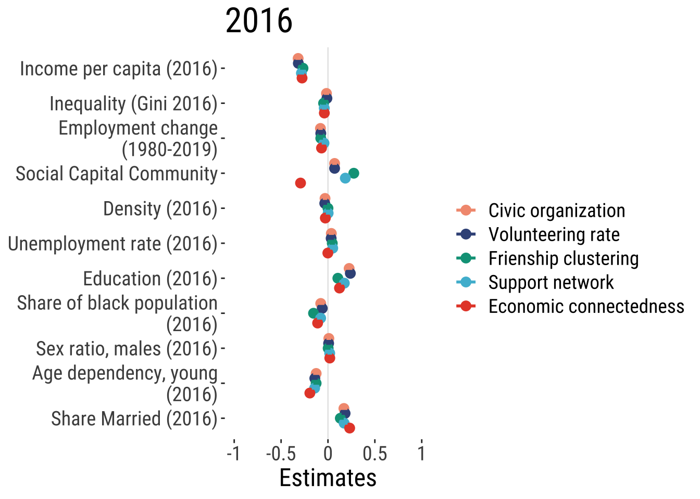
social_coh <- last_plot()tiff(filename = "./output/model-coef_social-capital_2016.tif", units="in", width=8, height=8, res=300, bg = "white")
last_plot()
dev.off()quartz_off_screen
2 Table 2 Basic model for Trump Margin 2020, with META data
# Civic Engagement
modelnew20_1 <- data_trump2 %>% rename(
social_community = civic_organizations_county
) %>%
lm(MAR_T_20_new ~ INC_PC_16 + GINI_16 + EMP_AVE_CGR80_19 + social_community + POP_DEN_16 + UNE_16 + EDU1_16 + R_BLACK_16 + SEX_RATIO + AGE_DEP_YOUNG + MARRIED + factor(S_ID), data = .)
summary(modelnew20_1)
Call:
lm(formula = MAR_T_20_new ~ INC_PC_16 + GINI_16 + EMP_AVE_CGR80_19 +
social_community + POP_DEN_16 + UNE_16 + EDU1_16 + R_BLACK_16 +
SEX_RATIO + AGE_DEP_YOUNG + MARRIED + factor(S_ID), data = .)
Residuals:
Min 1Q Median 3Q Max
-0.19851 -0.02522 0.00039 0.02594 0.21187
Coefficients:
Estimate Std. Error t value Pr(>|t|)
(Intercept) 0.0051649002 0.0239263567 0.216 0.829107
INC_PC_16 -0.0000021575 0.0000001023 -21.094 < 0.0000000000000002 ***
GINI_16 -0.0113405453 0.0294633257 -0.385 0.700336
EMP_AVE_CGR80_19 -0.8034926793 0.1627721848 -4.936 0.00000084035409629 ***
social_community 0.3819710173 0.0967004557 3.950 0.00007996308942801 ***
POP_DEN_16 0.0000003277 0.0000005141 0.638 0.523834
UNE_16 0.0009591249 0.0006995524 1.371 0.170462
EDU1_16 0.0036922214 0.0001951237 18.922 < 0.0000000000000002 ***
R_BLACK_16 -0.0004473742 0.0000970487 -4.610 0.00000420173725528 ***
SEX_RATIO 0.0001116436 0.0000746487 1.496 0.134868
AGE_DEP_YOUNG -0.0010411321 0.0001739138 -5.986 0.00000000240260409 ***
MARRIED 0.0017025081 0.0001952011 8.722 < 0.0000000000000002 ***
factor(S_ID)AR 0.0182916129 0.0072469845 2.524 0.011654 *
factor(S_ID)AZ -0.0356895837 0.0128437325 -2.779 0.005491 **
factor(S_ID)CA -0.0232498975 0.0082685517 -2.812 0.004958 **
factor(S_ID)CO 0.0042703462 0.0081779417 0.522 0.601585
factor(S_ID)CT 0.0414849815 0.0162701809 2.550 0.010830 *
factor(S_ID)DC 0.0824212828 0.0433106643 1.903 0.057134 .
factor(S_ID)DE -0.0040595269 0.0251292908 -0.162 0.871675
factor(S_ID)FL 0.0085667641 0.0075437491 1.136 0.256212
factor(S_ID)GA -0.0198404434 0.0062091391 -3.195 0.001411 **
factor(S_ID)HI 0.0838166306 0.0252962173 3.313 0.000933 ***
factor(S_ID)IA 0.1210077636 0.0073702633 16.418 < 0.0000000000000002 ***
factor(S_ID)ID -0.0069369346 0.0088852277 -0.781 0.435026
factor(S_ID)IL 0.0653320721 0.0071358710 9.155 < 0.0000000000000002 ***
factor(S_ID)IN 0.0577407110 0.0073250220 7.883 0.00000000000000447 ***
factor(S_ID)KS 0.0123181558 0.0073980488 1.665 0.096008 .
factor(S_ID)KY 0.0095668164 0.0068126498 1.404 0.160343
factor(S_ID)LA 0.0089814030 0.0075016589 1.197 0.231303
factor(S_ID)MA 0.0137246166 0.0130648970 1.050 0.293576
factor(S_ID)MD 0.0060501113 0.0103470866 0.585 0.558783
factor(S_ID)ME 0.0450118193 0.0121989471 3.690 0.000228 ***
factor(S_ID)MI 0.0495223693 0.0074771085 6.623 0.00000000004160231 ***
factor(S_ID)MN 0.0901665594 0.0075635879 11.921 < 0.0000000000000002 ***
factor(S_ID)MO 0.0606548134 0.0069662099 8.707 < 0.0000000000000002 ***
factor(S_ID)MS -0.0034849756 0.0071064337 -0.490 0.623889
factor(S_ID)MT 0.0337000639 0.0085244648 3.953 0.00007887637449610 ***
factor(S_ID)NC -0.0028029460 0.0067875405 -0.413 0.679670
factor(S_ID)ND 0.1091966168 0.0086028461 12.693 < 0.0000000000000002 ***
factor(S_ID)NE 0.0537114427 0.0077279498 6.950 0.00000000000446751 ***
factor(S_ID)NH 0.0255779551 0.0147825232 1.730 0.083684 .
factor(S_ID)NJ 0.0418054316 0.0110244867 3.792 0.000152 ***
factor(S_ID)NM 0.0156701784 0.0098398871 1.593 0.111376
factor(S_ID)NV 0.0308236125 0.0122294271 2.520 0.011773 *
factor(S_ID)NY 0.0964196591 0.0081092344 11.890 < 0.0000000000000002 ***
factor(S_ID)OH 0.0980073953 0.0073290066 13.373 < 0.0000000000000002 ***
factor(S_ID)OK 0.0176122684 0.0075466784 2.334 0.019674 *
factor(S_ID)OR -0.0044578688 0.0092412861 -0.482 0.629567
factor(S_ID)PA 0.0449074794 0.0078149154 5.746 0.00000001004664420 ***
factor(S_ID)RI 0.0322531003 0.0199847571 1.614 0.106659
factor(S_ID)SC 0.0041044004 0.0082306851 0.499 0.618049
factor(S_ID)SD 0.0740816457 0.0081709325 9.066 < 0.0000000000000002 ***
factor(S_ID)TN 0.0279117452 0.0070164598 3.978 0.00007115454756320 ***
factor(S_ID)TX -0.0142808265 0.0063140509 -2.262 0.023785 *
factor(S_ID)UT -0.0752124452 0.0104661044 -7.186 0.00000000000083929 ***
factor(S_ID)VA 0.0178075338 0.0071843028 2.479 0.013243 *
factor(S_ID)VT 0.0226166788 0.0128967766 1.754 0.079591 .
factor(S_ID)WA -0.0150749644 0.0090462023 -1.666 0.095732 .
factor(S_ID)WI 0.0730465676 0.0078251189 9.335 < 0.0000000000000002 ***
factor(S_ID)WV 0.0390182273 0.0080804988 4.829 0.00000144425416772 ***
factor(S_ID)WY 0.0362072379 0.0108887632 3.325 0.000894 ***
---
Signif. codes: 0 '***' 0.001 '**' 0.01 '*' 0.05 '.' 0.1 ' ' 1
Residual standard error: 0.0425 on 2955 degrees of freedom
(1 observation deleted due to missingness)
Multiple R-squared: 0.5749, Adjusted R-squared: 0.5663
F-statistic: 66.61 on 60 and 2955 DF, p-value: < 0.00000000000000022modelnew20_2 <- data_trump2 %>% rename(
social_community = volunteering_rate_county
) %>%
lm(MAR_T_20_new ~ INC_PC_16 + GINI_16 + EMP_AVE_CGR80_19 + social_community + POP_DEN_16 + UNE_16 + EDU1_16 + R_BLACK_16 + SEX_RATIO + AGE_DEP_YOUNG + MARRIED + factor(S_ID), data = .)
summary(modelnew20_2)
Call:
lm(formula = MAR_T_20_new ~ INC_PC_16 + GINI_16 + EMP_AVE_CGR80_19 +
social_community + POP_DEN_16 + UNE_16 + EDU1_16 + R_BLACK_16 +
SEX_RATIO + AGE_DEP_YOUNG + MARRIED + factor(S_ID), data = .)
Residuals:
Min 1Q Median 3Q Max
-0.198729 -0.025056 0.000403 0.025812 0.210730
Coefficients:
Estimate Std. Error t value Pr(>|t|)
(Intercept) -0.0006028229 0.0240099157 -0.025 0.979971
INC_PC_16 -0.0000021462 0.0000001024 -20.960 < 0.0000000000000002 ***
GINI_16 -0.0045779762 0.0293602433 -0.156 0.876103
EMP_AVE_CGR80_19 -0.7664071692 0.1626222090 -4.713 0.00000255626319 ***
social_community 0.1152800313 0.0290324700 3.971 0.00007336179181 ***
POP_DEN_16 0.0000002435 0.0000005132 0.475 0.635158
UNE_16 0.0008896778 0.0006996963 1.272 0.203644
EDU1_16 0.0038064403 0.0001983184 19.194 < 0.0000000000000002 ***
R_BLACK_16 -0.0003862597 0.0000981501 -3.935 0.00008497248147 ***
SEX_RATIO 0.0001005829 0.0000746845 1.347 0.178157
AGE_DEP_YOUNG -0.0011470225 0.0001684552 -6.809 0.00000000001185 ***
MARRIED 0.0017942429 0.0001926287 9.315 < 0.0000000000000002 ***
factor(S_ID)AR 0.0159063186 0.0072825490 2.184 0.029028 *
factor(S_ID)AZ -0.0348379133 0.0128383668 -2.714 0.006695 **
factor(S_ID)CA -0.0237278658 0.0082768192 -2.867 0.004176 **
factor(S_ID)CO 0.0074811385 0.0081042376 0.923 0.356023
factor(S_ID)CT 0.0409441119 0.0162710638 2.516 0.011909 *
factor(S_ID)DC 0.0864335556 0.0432564279 1.998 0.045790 *
factor(S_ID)DE -0.0038802642 0.0251282934 -0.154 0.877291
factor(S_ID)FL 0.0081527964 0.0075435982 1.081 0.279893
factor(S_ID)GA -0.0201602273 0.0062114811 -3.246 0.001185 **
factor(S_ID)HI 0.0822020992 0.0253051053 3.248 0.001173 **
factor(S_ID)IA 0.1203316292 0.0073839328 16.296 < 0.0000000000000002 ***
factor(S_ID)ID -0.0083060309 0.0089193750 -0.931 0.351808
factor(S_ID)IL 0.0627940801 0.0071831624 8.742 < 0.0000000000000002 ***
factor(S_ID)IN 0.0545668008 0.0074036488 7.370 0.00000000000022 ***
factor(S_ID)KS 0.0116390963 0.0074251852 1.568 0.117101
factor(S_ID)KY 0.0082400389 0.0068191112 1.208 0.227000
factor(S_ID)LA 0.0056004625 0.0075380205 0.743 0.457564
factor(S_ID)MA 0.0138165608 0.0130636519 1.058 0.290309
factor(S_ID)MD 0.0058178033 0.0103493227 0.562 0.574061
factor(S_ID)ME 0.0451715427 0.0121963318 3.704 0.000216 ***
factor(S_ID)MI 0.0440612463 0.0076885180 5.731 0.00000001100436 ***
factor(S_ID)MN 0.0914159207 0.0075455301 12.115 < 0.0000000000000002 ***
factor(S_ID)MO 0.0585131197 0.0070282565 8.325 < 0.0000000000000002 ***
factor(S_ID)MS -0.0052527454 0.0071167309 -0.738 0.460522
factor(S_ID)MT 0.0356269852 0.0084711704 4.206 0.00002680415706 ***
factor(S_ID)NC -0.0018867530 0.0067791475 -0.278 0.780788
factor(S_ID)ND 0.1096299264 0.0085955213 12.754 < 0.0000000000000002 ***
factor(S_ID)NE 0.0538319930 0.0077240596 6.969 0.00000000000391 ***
factor(S_ID)NH 0.0267847428 0.0147743027 1.813 0.069944 .
factor(S_ID)NJ 0.0407509813 0.0110266273 3.696 0.000223 ***
factor(S_ID)NM 0.0187459476 0.0097939715 1.914 0.055713 .
factor(S_ID)NV 0.0290935274 0.0122471163 2.376 0.017587 *
factor(S_ID)NY 0.0964923574 0.0081078138 11.901 < 0.0000000000000002 ***
factor(S_ID)OH 0.0956018221 0.0073682214 12.975 < 0.0000000000000002 ***
factor(S_ID)OK 0.0131240217 0.0076809012 1.709 0.087620 .
factor(S_ID)OR -0.0046650932 0.0092455155 -0.505 0.613892
factor(S_ID)PA 0.0444844136 0.0078179382 5.690 0.00000001394437 ***
factor(S_ID)RI 0.0318962438 0.0199840347 1.596 0.110576
factor(S_ID)SC 0.0044933679 0.0082300418 0.546 0.585127
factor(S_ID)SD 0.0753792638 0.0081426063 9.257 < 0.0000000000000002 ***
factor(S_ID)TN 0.0258591694 0.0070284435 3.679 0.000238 ***
factor(S_ID)TX -0.0147137202 0.0063225869 -2.327 0.020024 *
factor(S_ID)UT -0.0731008328 0.0104335830 -7.006 0.00000000000302 ***
factor(S_ID)VA 0.0173301876 0.0071949202 2.409 0.016072 *
factor(S_ID)VT 0.0246787685 0.0128700040 1.918 0.055265 .
factor(S_ID)WA -0.0152215325 0.0090487145 -1.682 0.092640 .
factor(S_ID)WI 0.0722594397 0.0078384469 9.219 < 0.0000000000000002 ***
factor(S_ID)WV 0.0350368292 0.0081303019 4.309 0.00001690331009 ***
factor(S_ID)WY 0.0371447320 0.0108652540 3.419 0.000638 ***
---
Signif. codes: 0 '***' 0.001 '**' 0.01 '*' 0.05 '.' 0.1 ' ' 1
Residual standard error: 0.0425 on 2955 degrees of freedom
(1 observation deleted due to missingness)
Multiple R-squared: 0.5749, Adjusted R-squared: 0.5663
F-statistic: 66.61 on 60 and 2955 DF, p-value: < 0.00000000000000022# Social Cohesion
modelnew20_3 <- data_trump2 %>% rename(
social_community = clustering_county
) %>%
lm(MAR_T_20_new ~ INC_PC_16 + GINI_16 + EMP_AVE_CGR80_19 + social_community + POP_DEN_16 + UNE_16 + EDU1_16 + R_BLACK_16 + SEX_RATIO + AGE_DEP_YOUNG + MARRIED + factor(S_ID), data = .)
summary(modelnew20_3)
Call:
lm(formula = MAR_T_20_new ~ INC_PC_16 + GINI_16 + EMP_AVE_CGR80_19 +
social_community + POP_DEN_16 + UNE_16 + EDU1_16 + R_BLACK_16 +
SEX_RATIO + AGE_DEP_YOUNG + MARRIED + factor(S_ID), data = .)
Residuals:
Min 1Q Median 3Q Max
-0.168301 -0.024172 0.000617 0.024017 0.233919
Coefficients:
Estimate Std. Error t value Pr(>|t|)
(Intercept) -0.04917508887 0.02221082013 -2.214 0.026904 *
INC_PC_16 -0.00000177949 0.00000009585 -18.564 < 0.0000000000000002 ***
GINI_16 -0.08657560889 0.02733741261 -3.167 0.001556 **
EMP_AVE_CGR80_19 -0.76509708118 0.15007652756 -5.098 0.00000036480932600 ***
social_community 1.11498816709 0.04831266130 23.079 < 0.0000000000000002 ***
POP_DEN_16 0.00000186412 0.00000047901 3.892 0.000102 ***
UNE_16 0.00149374349 0.00064604730 2.312 0.020839 *
EDU1_16 0.00222128615 0.00019047236 11.662 < 0.0000000000000002 ***
R_BLACK_16 -0.00086547457 0.00009140218 -9.469 < 0.0000000000000002 ***
SEX_RATIO 0.00006623905 0.00006891915 0.961 0.336574
AGE_DEP_YOUNG -0.00094475222 0.00015473245 -6.106 0.00000000115713151 ***
MARRIED 0.00119076071 0.00017972254 6.626 0.00000000004095461 ***
factor(S_ID)AR 0.01811531513 0.00668723069 2.709 0.006789 **
factor(S_ID)AZ -0.01688637123 0.01187107777 -1.422 0.154992
factor(S_ID)CA -0.00608921159 0.00764267665 -0.797 0.425667
factor(S_ID)CO 0.01620882175 0.00748049129 2.167 0.030329 *
factor(S_ID)CT 0.03875725231 0.01501621135 2.581 0.009898 **
factor(S_ID)DC 0.11017225238 0.03989756534 2.761 0.005791 **
factor(S_ID)DE 0.02040296078 0.02321408288 0.879 0.379525
factor(S_ID)FL 0.02855503425 0.00701671948 4.070 0.00004833361190555 ***
factor(S_ID)GA -0.01033797352 0.00574157394 -1.801 0.071876 .
factor(S_ID)HI 0.08376229055 0.02334326703 3.588 0.000338 ***
factor(S_ID)IA 0.10338727466 0.00683814859 15.119 < 0.0000000000000002 ***
factor(S_ID)ID 0.00169667169 0.00817652797 0.208 0.835630
factor(S_ID)IL 0.04991308864 0.00662039634 7.539 0.00000000000006248 ***
factor(S_ID)IN 0.05355343937 0.00675767035 7.925 0.00000000000000321 ***
factor(S_ID)KS 0.00549421426 0.00676333566 0.812 0.416655
factor(S_ID)KY 0.00655638586 0.00628861331 1.043 0.297228
factor(S_ID)LA 0.00734237137 0.00692287831 1.061 0.288961
factor(S_ID)MA 0.00728825433 0.01205536819 0.605 0.545514
factor(S_ID)MD 0.01350458954 0.00954415235 1.415 0.157186
factor(S_ID)ME 0.03365370155 0.01125831787 2.989 0.002820 **
factor(S_ID)MI 0.04234318375 0.00689753493 6.139 0.00000000094205395 ***
factor(S_ID)MN 0.07450535234 0.00700309176 10.639 < 0.0000000000000002 ***
factor(S_ID)MO 0.05812103267 0.00641277789 9.063 < 0.0000000000000002 ***
factor(S_ID)MS -0.01149719132 0.00656706403 -1.751 0.080095 .
factor(S_ID)MT 0.02437130854 0.00781698799 3.118 0.001840 **
factor(S_ID)NC 0.00813283858 0.00626927738 1.297 0.194645
factor(S_ID)ND 0.09304342759 0.00796088910 11.688 < 0.0000000000000002 ***
factor(S_ID)NE 0.04703289919 0.00710347387 6.621 0.00000000004218485 ***
factor(S_ID)NH 0.02182748516 0.01363646885 1.601 0.109557
factor(S_ID)NJ 0.04146097912 0.01017453185 4.075 0.00004723052822035 ***
factor(S_ID)NM 0.02528776476 0.00904105852 2.797 0.005191 **
factor(S_ID)NV 0.03622633907 0.01128492550 3.210 0.001341 **
factor(S_ID)NY 0.09229974826 0.00747561328 12.347 < 0.0000000000000002 ***
factor(S_ID)OH 0.09739765564 0.00676226441 14.403 < 0.0000000000000002 ***
factor(S_ID)OK 0.02561615617 0.00696365921 3.679 0.000239 ***
factor(S_ID)OR 0.00532817041 0.00849789885 0.627 0.530709
factor(S_ID)PA 0.03868261096 0.00721668083 5.360 0.00000008954583542 ***
factor(S_ID)RI 0.03184603191 0.01844390006 1.727 0.084336 .
factor(S_ID)SC 0.01021663119 0.00759988388 1.344 0.178950
factor(S_ID)SD 0.05950332664 0.00753964873 7.892 0.00000000000000415 ***
factor(S_ID)TN 0.03057433943 0.00647629340 4.721 0.00000245660349320 ***
factor(S_ID)TX 0.00110648104 0.00584122187 0.189 0.849772
factor(S_ID)UT -0.07271845461 0.00962386889 -7.556 0.00000000000005507 ***
factor(S_ID)VA 0.02165532452 0.00660713806 3.278 0.001059 **
factor(S_ID)VT 0.01589061955 0.01188118152 1.337 0.181175
factor(S_ID)WA -0.00712635638 0.00832377005 -0.856 0.391987
factor(S_ID)WI 0.06230561873 0.00723053876 8.617 < 0.0000000000000002 ***
factor(S_ID)WV 0.02624435448 0.00747629928 3.510 0.000454 ***
factor(S_ID)WY 0.03381267214 0.00999634791 3.383 0.000728 ***
---
Signif. codes: 0 '***' 0.001 '**' 0.01 '*' 0.05 '.' 0.1 ' ' 1
Residual standard error: 0.03922 on 2955 degrees of freedom
(1 observation deleted due to missingness)
Multiple R-squared: 0.6379, Adjusted R-squared: 0.6306
F-statistic: 86.77 on 60 and 2955 DF, p-value: < 0.00000000000000022modelnew20_4 <- data_trump2 %>% rename(
social_community = support_ratio_county
) %>%
lm(MAR_T_20_new ~ INC_PC_16 + GINI_16 + EMP_AVE_CGR80_19 + social_community + POP_DEN_16 + UNE_16 + EDU1_16 + R_BLACK_16 + SEX_RATIO + AGE_DEP_YOUNG + MARRIED + factor(S_ID), data = .)
summary(modelnew20_4)
Call:
lm(formula = MAR_T_20_new ~ INC_PC_16 + GINI_16 + EMP_AVE_CGR80_19 +
social_community + POP_DEN_16 + UNE_16 + EDU1_16 + R_BLACK_16 +
SEX_RATIO + AGE_DEP_YOUNG + MARRIED + factor(S_ID), data = .)
Residuals:
Min 1Q Median 3Q Max
-0.196113 -0.024986 -0.000471 0.024345 0.312367
Coefficients:
Estimate Std. Error t value Pr(>|t|)
(Intercept) -0.8777581633 0.0633499827 -13.856 < 0.0000000000000002 ***
INC_PC_16 -0.0000019193 0.0000001002 -19.155 < 0.0000000000000002 ***
GINI_16 -0.0658672675 0.0286897656 -2.296 0.021754 *
EMP_AVE_CGR80_19 -0.2921478532 0.1604137234 -1.821 0.068675 .
social_community 0.9157222716 0.0609912040 15.014 < 0.0000000000000002 ***
POP_DEN_16 0.0000018280 0.0000005076 3.602 0.000322 ***
UNE_16 0.0016966939 0.0006779051 2.503 0.012373 *
EDU1_16 0.0031130335 0.0001919558 16.217 < 0.0000000000000002 ***
R_BLACK_16 -0.0004534387 0.0000937923 -4.834 0.00000140304358053 ***
SEX_RATIO 0.0001664758 0.0000722410 2.304 0.021266 *
AGE_DEP_YOUNG -0.0011426743 0.0001616185 -7.070 0.00000000000192277 ***
MARRIED 0.0016745243 0.0001862320 8.992 < 0.0000000000000002 ***
factor(S_ID)AR 0.0183554520 0.0070027465 2.621 0.008808 **
factor(S_ID)AZ -0.0257107565 0.0124191985 -2.070 0.038516 *
factor(S_ID)CA -0.0097178571 0.0080102490 -1.213 0.225159
factor(S_ID)CO 0.0151975369 0.0078378479 1.939 0.052597 .
factor(S_ID)CT 0.0407295327 0.0157242659 2.590 0.009638 **
factor(S_ID)DC 0.1030690139 0.0417780882 2.467 0.013679 *
factor(S_ID)DE -0.0055337908 0.0242860030 -0.228 0.819771
factor(S_ID)FL 0.0147346471 0.0073028071 2.018 0.043716 *
factor(S_ID)GA -0.0109163340 0.0060244082 -1.812 0.070085 .
factor(S_ID)HI 0.0816524069 0.0244458159 3.340 0.000848 ***
factor(S_ID)IA 0.1152385203 0.0071239838 16.176 < 0.0000000000000002 ***
factor(S_ID)ID -0.0015945805 0.0085599071 -0.186 0.852234
factor(S_ID)IL 0.0611360721 0.0069015468 8.858 < 0.0000000000000002 ***
factor(S_ID)IN 0.0562896796 0.0070745063 7.957 0.00000000000000249 ***
factor(S_ID)KS 0.0098869827 0.0070788772 1.397 0.162612
factor(S_ID)KY 0.0112803427 0.0065851628 1.713 0.086819 .
factor(S_ID)LA 0.0069775853 0.0072500815 0.962 0.335920
factor(S_ID)MA 0.0131360171 0.0126196229 1.041 0.297998
factor(S_ID)MD 0.0075108516 0.0099910990 0.752 0.452259
factor(S_ID)ME 0.0440021171 0.0117749422 3.737 0.000190 ***
factor(S_ID)MI 0.0485850049 0.0072136916 6.735 0.00000000001960859 ***
factor(S_ID)MN 0.0903083646 0.0072894916 12.389 < 0.0000000000000002 ***
factor(S_ID)MO 0.0644371730 0.0067128750 9.599 < 0.0000000000000002 ***
factor(S_ID)MS -0.0047794756 0.0068681897 -0.696 0.486555
factor(S_ID)MT 0.0329553603 0.0081691414 4.034 0.00005619374049413 ***
factor(S_ID)NC 0.0024964932 0.0065559523 0.381 0.703381
factor(S_ID)ND 0.1040097814 0.0083092871 12.517 < 0.0000000000000002 ***
factor(S_ID)NE 0.0500524408 0.0074392991 6.728 0.00000000002055989 ***
factor(S_ID)NH 0.0288885786 0.0142776411 2.023 0.043128 *
factor(S_ID)NJ 0.0418493738 0.0106545936 3.928 0.00008767836569216 ***
factor(S_ID)NM 0.0207149852 0.0094643283 2.189 0.028694 *
factor(S_ID)NV 0.0498311268 0.0118755169 4.196 0.00002795231155332 ***
factor(S_ID)NY 0.0923818137 0.0078335294 11.793 < 0.0000000000000002 ***
factor(S_ID)OH 0.0963287052 0.0070828445 13.600 < 0.0000000000000002 ***
factor(S_ID)OK 0.0184223789 0.0072860662 2.528 0.011509 *
factor(S_ID)OR 0.0026340332 0.0088975574 0.296 0.767220
factor(S_ID)PA 0.0405800758 0.0075581096 5.369 0.00000008527337091 ***
factor(S_ID)RI 0.0310236417 0.0193142235 1.606 0.108324
factor(S_ID)SC 0.0054325610 0.0079544196 0.683 0.494685
factor(S_ID)SD 0.0705509351 0.0078666984 8.968 < 0.0000000000000002 ***
factor(S_ID)TN 0.0308394507 0.0067840208 4.546 0.00000568996097833 ***
factor(S_ID)TX -0.0093735361 0.0060892608 -1.539 0.123825
factor(S_ID)UT -0.0750073577 0.0100802832 -7.441 0.00000000000013030 ***
factor(S_ID)VA 0.0266365714 0.0069318348 3.843 0.000124 ***
factor(S_ID)VT 0.0233361908 0.0124344206 1.877 0.060652 .
factor(S_ID)WA -0.0072611185 0.0087196171 -0.833 0.405062
factor(S_ID)WI 0.0705972982 0.0075556289 9.344 < 0.0000000000000002 ***
factor(S_ID)WV 0.0367184791 0.0078098837 4.702 0.00000270036749491 ***
factor(S_ID)WY 0.0298894855 0.0104884159 2.850 0.004405 **
---
Signif. codes: 0 '***' 0.001 '**' 0.01 '*' 0.05 '.' 0.1 ' ' 1
Residual standard error: 0.04107 on 2955 degrees of freedom
(1 observation deleted due to missingness)
Multiple R-squared: 0.603, Adjusted R-squared: 0.5949
F-statistic: 74.79 on 60 and 2955 DF, p-value: < 0.00000000000000022# Economic Connectedness
modelnew20_5 <- data_trump2 %>% rename(
social_community = ec_county
) %>%
lm(MAR_T_20_new ~ INC_PC_16 + GINI_16 + EMP_AVE_CGR80_19 + social_community + POP_DEN_16 + UNE_16 + EDU1_16 + R_BLACK_16 + SEX_RATIO + AGE_DEP_YOUNG + MARRIED + factor(S_ID), data = .)
summary(modelnew20_5)
Call:
lm(formula = MAR_T_20_new ~ INC_PC_16 + GINI_16 + EMP_AVE_CGR80_19 +
social_community + POP_DEN_16 + UNE_16 + EDU1_16 + R_BLACK_16 +
SEX_RATIO + AGE_DEP_YOUNG + MARRIED + factor(S_ID), data = .)
Residuals:
Min 1Q Median 3Q Max
-0.199171 -0.024898 0.000495 0.025454 0.205384
Coefficients:
Estimate Std. Error t value Pr(>|t|)
(Intercept) 0.0617513390 0.0263065542 2.347 0.018973 *
INC_PC_16 -0.0000020422 0.0000001055 -19.366 < 0.0000000000000002 ***
GINI_16 -0.0279222264 0.0305352831 -0.914 0.360570
EMP_AVE_CGR80_19 -0.7357436292 0.1641099580 -4.483 0.000007638262449 ***
social_community -0.0614284731 0.0100697307 -6.100 0.000000001199767 ***
POP_DEN_16 0.0000003817 0.0000005107 0.747 0.454875
UNE_16 0.0002944878 0.0007615052 0.387 0.698993
EDU1_16 0.0031714962 0.0002285268 13.878 < 0.0000000000000002 ***
R_BLACK_16 -0.0005770083 0.0001007597 -5.727 0.000000011301992 ***
SEX_RATIO 0.0001621152 0.0000778621 2.082 0.037423 *
AGE_DEP_YOUNG -0.0015293898 0.0001744476 -8.767 < 0.0000000000000002 ***
MARRIED 0.0020914460 0.0002027348 10.316 < 0.0000000000000002 ***
factor(S_ID)AR 0.0216149922 0.0072338882 2.988 0.002832 **
factor(S_ID)AZ -0.0314711440 0.0127911052 -2.460 0.013937 *
factor(S_ID)CA -0.0167296204 0.0083150753 -2.012 0.044317 *
factor(S_ID)CO 0.0155155857 0.0083132920 1.866 0.062092 .
factor(S_ID)CT 0.0506242050 0.0162255610 3.120 0.001826 **
factor(S_ID)DC 0.1134571843 0.0430177325 2.637 0.008398 **
factor(S_ID)DE 0.0010243043 0.0249550912 0.041 0.967262
factor(S_ID)FL 0.0065613072 0.0075237200 0.872 0.383236
factor(S_ID)GA -0.0194850711 0.0062636949 -3.111 0.001884 **
factor(S_ID)HI 0.0995893515 0.0252169993 3.949 0.000080254637852 ***
factor(S_ID)IA 0.1335058032 0.0075019565 17.796 < 0.0000000000000002 ***
factor(S_ID)ID 0.0028384261 0.0089260534 0.318 0.750513
factor(S_ID)IL 0.0709411607 0.0071615866 9.906 < 0.0000000000000002 ***
factor(S_ID)IN 0.0629578165 0.0073332836 8.585 < 0.0000000000000002 ***
factor(S_ID)KS 0.0258382229 0.0074195003 3.482 0.000504 ***
factor(S_ID)KY 0.0189880674 0.0070086214 2.709 0.006783 **
factor(S_ID)LA 0.0163226043 0.0075979599 2.148 0.031774 *
factor(S_ID)MA 0.0225582276 0.0130294075 1.731 0.083499 .
factor(S_ID)MD 0.0198887498 0.0104316781 1.907 0.056675 .
factor(S_ID)ME 0.0491484617 0.0121231527 4.054 0.000051657017742 ***
factor(S_ID)MI 0.0536552188 0.0074744911 7.178 0.000000000000893 ***
factor(S_ID)MN 0.1064713395 0.0078180398 13.619 < 0.0000000000000002 ***
factor(S_ID)MO 0.0704675545 0.0070495592 9.996 < 0.0000000000000002 ***
factor(S_ID)MS 0.0036500783 0.0072041115 0.507 0.612428
factor(S_ID)MT 0.0466730005 0.0088107507 5.297 0.000000126375592 ***
factor(S_ID)NC -0.0023429189 0.0067741579 -0.346 0.729472
factor(S_ID)ND 0.1275874635 0.0089691794 14.225 < 0.0000000000000002 ***
factor(S_ID)NE 0.0667105439 0.0078619268 8.485 < 0.0000000000000002 ***
factor(S_ID)NH 0.0415921263 0.0148552660 2.800 0.005147 **
factor(S_ID)NJ 0.0495753218 0.0110281007 4.495 0.000007218431674 ***
factor(S_ID)NM 0.0127030598 0.0100567836 1.263 0.206643
factor(S_ID)NV 0.0351710318 0.0124793954 2.818 0.004860 **
factor(S_ID)NY 0.1027725704 0.0081113649 12.670 < 0.0000000000000002 ***
factor(S_ID)OH 0.1019995753 0.0073338403 13.908 < 0.0000000000000002 ***
factor(S_ID)OK 0.0239756071 0.0075657493 3.169 0.001546 **
factor(S_ID)OR -0.0013280398 0.0092601653 -0.143 0.885973
factor(S_ID)PA 0.0502816952 0.0078305102 6.421 0.000000000157461 ***
factor(S_ID)RI 0.0445243016 0.0199527537 2.231 0.025725 *
factor(S_ID)SC 0.0034555414 0.0082024992 0.421 0.673583
factor(S_ID)SD 0.0929898823 0.0084711321 10.977 < 0.0000000000000002 ***
factor(S_ID)TN 0.0271957197 0.0069938427 3.889 0.000103 ***
factor(S_ID)TX -0.0057262204 0.0064296423 -0.891 0.373220
factor(S_ID)UT -0.0583632553 0.0108835997 -5.362 0.000000088558736 ***
factor(S_ID)VA 0.0262825366 0.0072133039 3.644 0.000274 ***
factor(S_ID)VT 0.0329451562 0.0128406342 2.566 0.010347 *
factor(S_ID)WA -0.0060607329 0.0090403674 -0.670 0.502651
factor(S_ID)WI 0.0836369014 0.0079118322 10.571 < 0.0000000000000002 ***
factor(S_ID)WV 0.0426968039 0.0080942991 5.275 0.000000142626539 ***
factor(S_ID)WY 0.0494999523 0.0108537168 4.561 0.000005311943998 ***
---
Signif. codes: 0 '***' 0.001 '**' 0.01 '*' 0.05 '.' 0.1 ' ' 1
Residual standard error: 0.04218 on 2889 degrees of freedom
(67 observations deleted due to missingness)
Multiple R-squared: 0.5875, Adjusted R-squared: 0.5789
F-statistic: 68.57 on 60 and 2889 DF, p-value: < 0.00000000000000022plot_models(modelnew20_1, modelnew20_2, modelnew20_3, modelnew20_4, modelnew20_5,
title = "2020",
legend.title = "",
spacing = .7,
std.est = "std2",
line.size = 1,
vline.color = "grey85",
rm.terms = "factor(S_ID) [AL,AZ,AR,CA,CO,CT,DE,DC,FL,GA,HI,ID,IL,IN,IA,KS,KY,LA,ME,MD,MA,MI,MN,MS,MO,MT,NE,NV,NH,NJ,NM,NY,NC,ND,OH,OK,OR,PA,RI,SC,SD,TN,TX,UT,VT,VA,WA,WV,WI,WY]",
axis.labels = c(
"Share Married (2016)", "Age dependency, young (2016)", "Sex ratio, males (2016)", "Share of black population (2016)", "Education (2016)", "Unemployment rate (2016)", "Density (2016)", "Social Capital Community", "Employment change (1980-2016)", "Inequality (Gini 2016)", "Income per capita (2016)"
)
) +
scale_color_npg(labels = c("Economic connectedness", "Support network", "Frienship clustering", "Volunteering rate", "Civic organization")) + # Change colour palettes
scale_fill_npg(labels = c("Economic connectedness", "Support network", "Frienship clustering", "Volunteering rate", "Civic organization")) +
#scale_fill_discrete(name = "Dose", labels = c("A", "B")) +
# scale_color_discrete(labels = c("Civic organization", "Volunteering rate", "Frienship clustering", "Support network", "Economic connectedness")) +
theme_tufte2() +
theme(
text = element_text(family = "robotocondensed", size = 18),
plot.title = element_text(size = 25),
# legend
legend.title=element_text(size=15),
legend.text=element_text(size=14),
legend.position = "right"
)Scale for colour is already present.
Adding another scale for colour, which will replace the existing scale.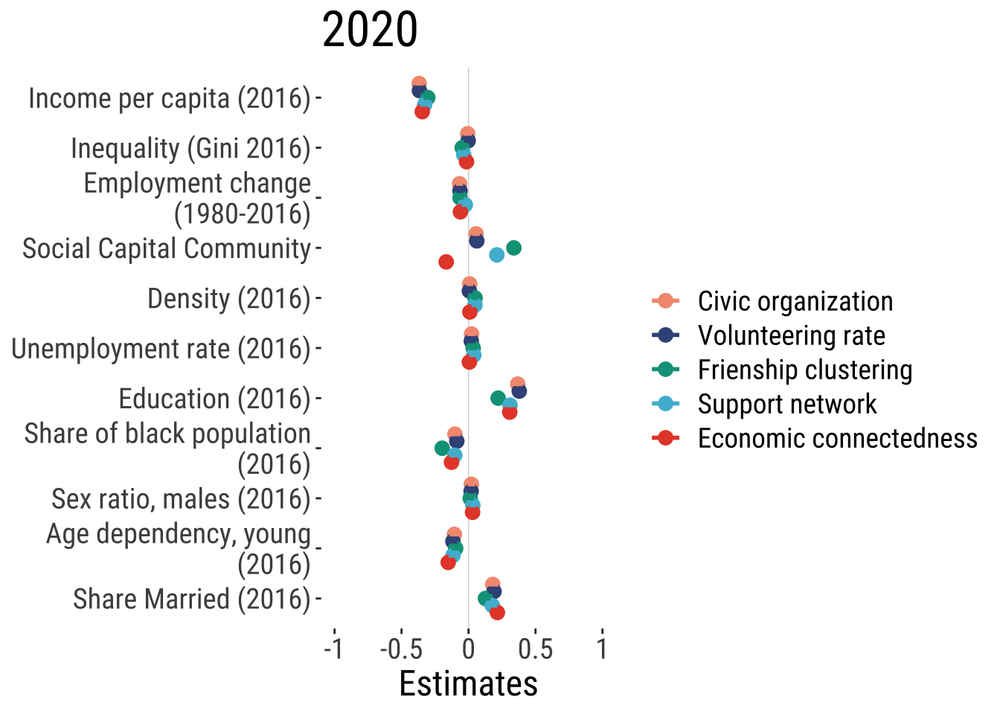
social_coh <- last_plot()tiff(filename = "./output/model-coef_social-capital_2020.tif", units="in", width=8, height=8, res=300, bg = "white")
last_plot()
dev.off()quartz_off_screen
2 Third Part: Intractions Models with META Data
Table 3 Interactions between social capital and economic change, 2016 elections.
# For 2016
data_trump2 <- data_trump2 %>%
mutate(across(c(INC_PC_16, GINI_16, EMP_AVE_CGR80_19, POP_DEN_16, UNE_16, EDU1_16,
R_BLACK_16, SEX_RATIO, AGE_DEP_YOUNG, MARRIED,
EMP_AVE_CGR80_19, EAR_AVE_JOB_CGR80_19, POP_CGR80_19, WA_SA_MEA_CGR80_19,
civic_organizations_county, volunteering_rate_county, clustering_county,
support_ratio_county, ec_county),
~ . - mean(., na.rm = TRUE),
.names = "{.col}_c"))
# civic_organizations
modelint16_1 <- lm(MAR_T_new ~ INC_PC_16_c + GINI_16_c + EMP_AVE_CGR80_19_c +
civic_organizations_county_c + POP_DEN_16_c + UNE_16_c + EDU1_16_c +
R_BLACK_16_c + SEX_RATIO_c + AGE_DEP_YOUNG_c + MARRIED_c +
EMP_AVE_CGR80_19_c*civic_organizations_county_c +
EAR_AVE_JOB_CGR80_19_c*civic_organizations_county_c +
POP_CGR80_19_c*civic_organizations_county_c +
WA_SA_MEA_CGR80_19_c*civic_organizations_county_c +
factor(S_ID),
data = data_trump2)
summary(modelint16_1)
Call:
lm(formula = MAR_T_new ~ INC_PC_16_c + GINI_16_c + EMP_AVE_CGR80_19_c +
civic_organizations_county_c + POP_DEN_16_c + UNE_16_c +
EDU1_16_c + R_BLACK_16_c + SEX_RATIO_c + AGE_DEP_YOUNG_c +
MARRIED_c + EMP_AVE_CGR80_19_c * civic_organizations_county_c +
EAR_AVE_JOB_CGR80_19_c * civic_organizations_county_c + POP_CGR80_19_c *
civic_organizations_county_c + WA_SA_MEA_CGR80_19_c * civic_organizations_county_c +
factor(S_ID), data = data_trump2)
Residuals:
Min 1Q Median 3Q Max
-0.31840 -0.01847 0.00021 0.01873 0.16750
Coefficients:
Estimate
(Intercept) 0.03316493022
INC_PC_16_c -0.00000143236
GINI_16_c -0.10390533046
EMP_AVE_CGR80_19_c -0.68851124365
civic_organizations_county_c 0.03743533775
POP_DEN_16_c -0.00000077265
UNE_16_c 0.00234577070
EDU1_16_c 0.00106347199
R_BLACK_16_c -0.00063899809
SEX_RATIO_c 0.00012019700
AGE_DEP_YOUNG_c -0.00090633741
MARRIED_c 0.00127857244
EAR_AVE_JOB_CGR80_19_c 0.24145121299
POP_CGR80_19_c -1.43401914331
WA_SA_MEA_CGR80_19_c -0.11947149399
factor(S_ID)AR -0.01585118616
factor(S_ID)AZ -0.09829812286
factor(S_ID)CA -0.03667058941
factor(S_ID)CO -0.00621447390
factor(S_ID)CT 0.02069235013
factor(S_ID)DC 0.04537966972
factor(S_ID)DE 0.02530479256
factor(S_ID)FL 0.01996337947
factor(S_ID)GA 0.00143204638
factor(S_ID)HI 0.02605646957
factor(S_ID)IA 0.05377593962
factor(S_ID)ID -0.07107199314
factor(S_ID)IL 0.01337921755
factor(S_ID)IN 0.02702182940
factor(S_ID)KS -0.03330144532
factor(S_ID)KY 0.00765840922
factor(S_ID)LA 0.00034265252
factor(S_ID)MA -0.00979037699
factor(S_ID)MD 0.01173002198
factor(S_ID)ME 0.01797615528
factor(S_ID)MI 0.01972378572
factor(S_ID)MN 0.03950591429
factor(S_ID)MO 0.03697136521
factor(S_ID)MS 0.00566135260
factor(S_ID)MT -0.00393364402
factor(S_ID)NC -0.00320749065
factor(S_ID)ND 0.03592100311
factor(S_ID)NE 0.00171764189
factor(S_ID)NH 0.00536763361
factor(S_ID)NJ 0.02004065399
factor(S_ID)NM -0.03301750527
factor(S_ID)NV 0.00885273310
factor(S_ID)NY 0.07152790212
factor(S_ID)OH 0.05115495959
factor(S_ID)OK -0.01523264941
factor(S_ID)OR -0.03317509301
factor(S_ID)PA 0.01879971183
factor(S_ID)RI 0.00939003079
factor(S_ID)SC 0.00492864892
factor(S_ID)SD 0.03030589922
factor(S_ID)TN 0.01973973655
factor(S_ID)TX -0.02535306538
factor(S_ID)UT -0.18742285155
factor(S_ID)VA 0.01069546549
factor(S_ID)VT -0.01184270833
factor(S_ID)WA -0.02382305427
factor(S_ID)WI 0.02734160321
factor(S_ID)WV 0.01911908514
factor(S_ID)WY -0.02038421390
EMP_AVE_CGR80_19_c:civic_organizations_county_c 10.03881445881
civic_organizations_county_c:EAR_AVE_JOB_CGR80_19_c -12.77885820163
civic_organizations_county_c:POP_CGR80_19_c 18.36792569193
civic_organizations_county_c:WA_SA_MEA_CGR80_19_c 1.50825026294
Std. Error t value
(Intercept) 0.00433680814 7.647
INC_PC_16_c 0.00000008266 -17.328
GINI_16_c 0.02321011471 -4.477
EMP_AVE_CGR80_19_c 0.13242045741 -5.199
civic_organizations_county_c 0.08265736445 0.453
POP_DEN_16_c 0.00000040059 -1.929
UNE_16_c 0.00054576260 4.298
EDU1_16_c 0.00015871495 6.701
R_BLACK_16_c 0.00007757656 -8.237
SEX_RATIO_c 0.00005876494 2.045
AGE_DEP_YOUNG_c 0.00013875132 -6.532
MARRIED_c 0.00015171337 8.428
EAR_AVE_JOB_CGR80_19_c 0.13737958044 1.758
POP_CGR80_19_c 0.07420920737 -19.324
WA_SA_MEA_CGR80_19_c 0.21955205252 -0.544
factor(S_ID)AR 0.00561269420 -2.824
factor(S_ID)AZ 0.00995084700 -9.878
factor(S_ID)CA 0.00640026086 -5.730
factor(S_ID)CO 0.00635884131 -0.977
factor(S_ID)CT 0.01261880569 1.640
factor(S_ID)DC 0.03357201195 1.352
factor(S_ID)DE 0.01943586133 1.302
factor(S_ID)FL 0.00592614382 3.369
factor(S_ID)GA 0.00486585812 0.294
factor(S_ID)HI 0.01955715307 1.332
factor(S_ID)IA 0.00589118031 9.128
factor(S_ID)ID 0.00690705374 -10.290
factor(S_ID)IL 0.00565366915 2.366
factor(S_ID)IN 0.00574105911 4.707
factor(S_ID)KS 0.00592382474 -5.622
factor(S_ID)KY 0.00529229458 1.447
factor(S_ID)LA 0.00581959223 0.059
factor(S_ID)MA 0.01014925189 -0.965
factor(S_ID)MD 0.00800586722 1.465
factor(S_ID)ME 0.00946101810 1.900
factor(S_ID)MI 0.00585202868 3.370
factor(S_ID)MN 0.00593222024 6.660
factor(S_ID)MO 0.00544137559 6.794
factor(S_ID)MS 0.00550020463 1.029
factor(S_ID)MT 0.00668931041 -0.588
factor(S_ID)NC 0.00527683142 -0.608
factor(S_ID)ND 0.00725438481 4.952
factor(S_ID)NE 0.00620369631 0.277
factor(S_ID)NH 0.01146092077 0.468
factor(S_ID)NJ 0.00855984021 2.341
factor(S_ID)NM 0.00762406322 -4.331
factor(S_ID)NV 0.00946568145 0.935
factor(S_ID)NY 0.00634177963 11.279
factor(S_ID)OH 0.00575966881 8.882
factor(S_ID)OK 0.00587986612 -2.591
factor(S_ID)OR 0.00717887246 -4.621
factor(S_ID)PA 0.00612207183 3.071
factor(S_ID)RI 0.01548753136 0.606
factor(S_ID)SC 0.00639464098 0.771
factor(S_ID)SD 0.00646748265 4.686
factor(S_ID)TN 0.00544926794 3.622
factor(S_ID)TX 0.00488743770 -5.187
factor(S_ID)UT 0.00818001141 -22.912
factor(S_ID)VA 0.00557190444 1.920
factor(S_ID)VT 0.01000528663 -1.184
factor(S_ID)WA 0.00702181911 -3.393
factor(S_ID)WI 0.00610545943 4.478
factor(S_ID)WV 0.00633739028 3.017
factor(S_ID)WY 0.00851479810 -2.394
EMP_AVE_CGR80_19_c:civic_organizations_county_c 11.34126443025 0.885
civic_organizations_county_c:EAR_AVE_JOB_CGR80_19_c 9.32845271452 -1.370
civic_organizations_county_c:POP_CGR80_19_c 6.64376466596 2.765
civic_organizations_county_c:WA_SA_MEA_CGR80_19_c 15.81084771256 0.095
Pr(>|t|)
(Intercept) 0.000000000000027594 ***
INC_PC_16_c < 0.0000000000000002 ***
GINI_16_c 0.000007867276355049 ***
EMP_AVE_CGR80_19_c 0.000000213562393355 ***
civic_organizations_county_c 0.650656
POP_DEN_16_c 0.053855 .
UNE_16_c 0.000017781023062366 ***
EDU1_16_c 0.000000000024784269 ***
R_BLACK_16_c 0.000000000000000262 ***
SEX_RATIO_c 0.040905 *
AGE_DEP_YOUNG_c 0.000000000076113573 ***
MARRIED_c < 0.0000000000000002 ***
EAR_AVE_JOB_CGR80_19_c 0.078928 .
POP_CGR80_19_c < 0.0000000000000002 ***
WA_SA_MEA_CGR80_19_c 0.586372
factor(S_ID)AR 0.004772 **
factor(S_ID)AZ < 0.0000000000000002 ***
factor(S_ID)CA 0.000000011087026095 ***
factor(S_ID)CO 0.328503
factor(S_ID)CT 0.101153
factor(S_ID)DC 0.176571
factor(S_ID)DE 0.193030
factor(S_ID)FL 0.000765 ***
factor(S_ID)GA 0.768546
factor(S_ID)HI 0.182857
factor(S_ID)IA < 0.0000000000000002 ***
factor(S_ID)ID < 0.0000000000000002 ***
factor(S_ID)IL 0.018023 *
factor(S_ID)IN 0.000002632887953260 ***
factor(S_ID)KS 0.000000020687322485 ***
factor(S_ID)KY 0.147979
factor(S_ID)LA 0.953052
factor(S_ID)MA 0.334804
factor(S_ID)MD 0.142979
factor(S_ID)ME 0.057528 .
factor(S_ID)MI 0.000760 ***
factor(S_ID)MN 0.000000000032641192 ***
factor(S_ID)MO 0.000000000013099977 ***
factor(S_ID)MS 0.303424
factor(S_ID)MT 0.556544
factor(S_ID)NC 0.543338
factor(S_ID)ND 0.000000777410733184 ***
factor(S_ID)NE 0.781896
factor(S_ID)NH 0.639574
factor(S_ID)NJ 0.019286 *
factor(S_ID)NM 0.000015359854629220 ***
factor(S_ID)NV 0.349739
factor(S_ID)NY < 0.0000000000000002 ***
factor(S_ID)OH < 0.0000000000000002 ***
factor(S_ID)OK 0.009627 **
factor(S_ID)OR 0.000003978892655081 ***
factor(S_ID)PA 0.002154 **
factor(S_ID)RI 0.544365
factor(S_ID)SC 0.440919
factor(S_ID)SD 0.000002913888962075 ***
factor(S_ID)TN 0.000297 ***
factor(S_ID)TX 0.000000227701047747 ***
factor(S_ID)UT < 0.0000000000000002 ***
factor(S_ID)VA 0.055013 .
factor(S_ID)VT 0.236649
factor(S_ID)WA 0.000701 ***
factor(S_ID)WI 0.000007812735021314 ***
factor(S_ID)WV 0.002576 **
factor(S_ID)WY 0.016729 *
EMP_AVE_CGR80_19_c:civic_organizations_county_c 0.376143
civic_organizations_county_c:EAR_AVE_JOB_CGR80_19_c 0.170829
civic_organizations_county_c:POP_CGR80_19_c 0.005733 **
civic_organizations_county_c:WA_SA_MEA_CGR80_19_c 0.924009
---
Signif. codes: 0 '***' 0.001 '**' 0.01 '*' 0.05 '.' 0.1 ' ' 1
Residual standard error: 0.03285 on 2947 degrees of freedom
(2 observations deleted due to missingness)
Multiple R-squared: 0.6763, Adjusted R-squared: 0.6689
F-statistic: 91.88 on 67 and 2947 DF, p-value: < 0.00000000000000022#vif(modelint16_1)
# volunteering_rate
modelint16_2 <- lm(MAR_T_new ~ INC_PC_16_c + GINI_16_c + EMP_AVE_CGR80_19_c +
volunteering_rate_county_c + POP_DEN_16_c + UNE_16_c + EDU1_16_c +
R_BLACK_16_c + SEX_RATIO_c + AGE_DEP_YOUNG_c + MARRIED_c +
EMP_AVE_CGR80_19_c*volunteering_rate_county_c +
EAR_AVE_JOB_CGR80_19_c*volunteering_rate_county_c +
POP_CGR80_19_c*volunteering_rate_county_c +
WA_SA_MEA_CGR80_19_c*volunteering_rate_county_c +
factor(S_ID),
data = data_trump2)
summary(modelint16_2)
Call:
lm(formula = MAR_T_new ~ INC_PC_16_c + GINI_16_c + EMP_AVE_CGR80_19_c +
volunteering_rate_county_c + POP_DEN_16_c + UNE_16_c + EDU1_16_c +
R_BLACK_16_c + SEX_RATIO_c + AGE_DEP_YOUNG_c + MARRIED_c +
EMP_AVE_CGR80_19_c * volunteering_rate_county_c + EAR_AVE_JOB_CGR80_19_c *
volunteering_rate_county_c + POP_CGR80_19_c * volunteering_rate_county_c +
WA_SA_MEA_CGR80_19_c * volunteering_rate_county_c + factor(S_ID),
data = data_trump2)
Residuals:
Min 1Q Median 3Q Max
-0.32414 -0.01834 0.00053 0.01883 0.16662
Coefficients:
Estimate Std. Error
(Intercept) 0.03448689646 0.00435324169
INC_PC_16_c -0.00000140050 0.00000008228
GINI_16_c -0.09762253227 0.02302468995
EMP_AVE_CGR80_19_c -0.73924270158 0.13283684109
volunteering_rate_county_c 0.07816272759 0.02445441104
POP_DEN_16_c -0.00000092359 0.00000039863
UNE_16_c 0.00227771568 0.00054531339
EDU1_16_c 0.00121924480 0.00016128302
R_BLACK_16_c -0.00061221735 0.00007926197
SEX_RATIO_c 0.00010878972 0.00005879549
AGE_DEP_YOUNG_c -0.00094123249 0.00013272549
MARRIED_c 0.00125878510 0.00014974327
EAR_AVE_JOB_CGR80_19_c 0.15633667300 0.12676813539
POP_CGR80_19_c -1.45587401749 0.07172363995
WA_SA_MEA_CGR80_19_c -0.01737975711 0.21057640495
factor(S_ID)AR -0.01776432684 0.00565154153
factor(S_ID)AZ -0.09875894423 0.00993683223
factor(S_ID)CA -0.03871767455 0.00639956802
factor(S_ID)CO -0.00452150979 0.00627140017
factor(S_ID)CT 0.01974913112 0.01260573878
factor(S_ID)DC 0.03922047965 0.03343701199
factor(S_ID)DE 0.02549410663 0.01942379909
factor(S_ID)FL 0.01848699438 0.00593454383
factor(S_ID)GA 0.00120225064 0.00487053707
factor(S_ID)HI 0.02431524556 0.01956956720
factor(S_ID)IA 0.05242854227 0.00589662942
factor(S_ID)ID -0.07302242525 0.00697896154
factor(S_ID)IL 0.01126068535 0.00567260219
factor(S_ID)IN 0.02461160908 0.00579770623
factor(S_ID)KS -0.03729427265 0.00596643855
factor(S_ID)KY 0.00674612524 0.00529938009
factor(S_ID)LA -0.00227360298 0.00585899784
factor(S_ID)MA -0.01050389092 0.01014306403
factor(S_ID)MD 0.01044204062 0.00799855971
factor(S_ID)ME 0.01698205314 0.00946174478
factor(S_ID)MI 0.01613280560 0.00611015923
factor(S_ID)MN 0.03883122181 0.00593284592
factor(S_ID)MO 0.03403753915 0.00549223815
factor(S_ID)MS 0.00492450188 0.00549872847
factor(S_ID)MT -0.00516595407 0.00665582762
factor(S_ID)NC -0.00249572341 0.00527254843
factor(S_ID)ND 0.03308448230 0.00723614758
factor(S_ID)NE -0.00063843300 0.00621218924
factor(S_ID)NH 0.00516434082 0.01144544000
factor(S_ID)NJ 0.01941381536 0.00854832286
factor(S_ID)NM -0.03275310049 0.00757847924
factor(S_ID)NV 0.00604474123 0.00949820963
factor(S_ID)NY 0.07033119468 0.00634074640
factor(S_ID)OH 0.04937669754 0.00578518488
factor(S_ID)OK -0.01852468295 0.00598561270
factor(S_ID)OR -0.03535459478 0.00719042642
factor(S_ID)PA 0.01812865790 0.00611442215
factor(S_ID)RI 0.00845046324 0.01547244688
factor(S_ID)SC 0.00607003159 0.00641168757
factor(S_ID)SD 0.02954190960 0.00646423379
factor(S_ID)TN 0.01830993590 0.00545342327
factor(S_ID)TX -0.02729406752 0.00489369799
factor(S_ID)UT -0.18671849744 0.00812837250
factor(S_ID)VA 0.00841396447 0.00557189208
factor(S_ID)VT -0.01232206883 0.00997966526
factor(S_ID)WA -0.02564274519 0.00702321349
factor(S_ID)WI 0.02618622416 0.00611640323
factor(S_ID)WV 0.01680775129 0.00635772338
factor(S_ID)WY -0.02135325491 0.00849757060
EMP_AVE_CGR80_19_c:volunteering_rate_county_c -9.69549967613 3.83259609993
volunteering_rate_county_c:EAR_AVE_JOB_CGR80_19_c 0.20932334611 2.84160697417
volunteering_rate_county_c:POP_CGR80_19_c 0.97436583329 1.92069933510
volunteering_rate_county_c:WA_SA_MEA_CGR80_19_c -2.01740107961 5.41798727471
t value Pr(>|t|)
(Intercept) 7.922 0.00000000000000328
INC_PC_16_c -17.022 < 0.0000000000000002
GINI_16_c -4.240 0.00002304889475915
EMP_AVE_CGR80_19_c -5.565 0.00000002856134413
volunteering_rate_county_c 3.196 0.001407
POP_DEN_16_c -2.317 0.020578
UNE_16_c 4.177 0.00003040957813700
EDU1_16_c 7.560 0.00000000000005363
R_BLACK_16_c -7.724 0.00000000000001534
SEX_RATIO_c 1.850 0.064369
AGE_DEP_YOUNG_c -7.092 0.00000000000165312
MARRIED_c 8.406 < 0.0000000000000002
EAR_AVE_JOB_CGR80_19_c 1.233 0.217581
POP_CGR80_19_c -20.298 < 0.0000000000000002
WA_SA_MEA_CGR80_19_c -0.083 0.934228
factor(S_ID)AR -3.143 0.001687
factor(S_ID)AZ -9.939 < 0.0000000000000002
factor(S_ID)CA -6.050 0.00000000163076130
factor(S_ID)CO -0.721 0.470983
factor(S_ID)CT 1.567 0.117297
factor(S_ID)DC 1.173 0.240904
factor(S_ID)DE 1.313 0.189447
factor(S_ID)FL 3.115 0.001856
factor(S_ID)GA 0.247 0.805048
factor(S_ID)HI 1.243 0.214150
factor(S_ID)IA 8.891 < 0.0000000000000002
factor(S_ID)ID -10.463 < 0.0000000000000002
factor(S_ID)IL 1.985 0.047226
factor(S_ID)IN 4.245 0.00002252866636499
factor(S_ID)KS -6.251 0.00000000046769438
factor(S_ID)KY 1.273 0.203117
factor(S_ID)LA -0.388 0.698005
factor(S_ID)MA -1.036 0.300486
factor(S_ID)MD 1.305 0.191828
factor(S_ID)ME 1.795 0.072786
factor(S_ID)MI 2.640 0.008326
factor(S_ID)MN 6.545 0.00000000006985278
factor(S_ID)MO 6.197 0.00000000065407614
factor(S_ID)MS 0.896 0.370555
factor(S_ID)MT -0.776 0.437720
factor(S_ID)NC -0.473 0.636004
factor(S_ID)ND 4.572 0.00000502721401770
factor(S_ID)NE -0.103 0.918152
factor(S_ID)NH 0.451 0.651869
factor(S_ID)NJ 2.271 0.023215
factor(S_ID)NM -4.322 0.00001598443516144
factor(S_ID)NV 0.636 0.524560
factor(S_ID)NY 11.092 < 0.0000000000000002
factor(S_ID)OH 8.535 < 0.0000000000000002
factor(S_ID)OK -3.095 0.001987
factor(S_ID)OR -4.917 0.00000092743018691
factor(S_ID)PA 2.965 0.003052
factor(S_ID)RI 0.546 0.584996
factor(S_ID)SC 0.947 0.343862
factor(S_ID)SD 4.570 0.00000507645516570
factor(S_ID)TN 3.358 0.000796
factor(S_ID)TX -5.577 0.00000002662649366
factor(S_ID)UT -22.971 < 0.0000000000000002
factor(S_ID)VA 1.510 0.131132
factor(S_ID)VT -1.235 0.217034
factor(S_ID)WA -3.651 0.000266
factor(S_ID)WI 4.281 0.00001917269487966
factor(S_ID)WV 2.644 0.008245
factor(S_ID)WY -2.513 0.012028
EMP_AVE_CGR80_19_c:volunteering_rate_county_c -2.530 0.011466
volunteering_rate_county_c:EAR_AVE_JOB_CGR80_19_c 0.074 0.941283
volunteering_rate_county_c:POP_CGR80_19_c 0.507 0.611984
volunteering_rate_county_c:WA_SA_MEA_CGR80_19_c -0.372 0.709657
(Intercept) ***
INC_PC_16_c ***
GINI_16_c ***
EMP_AVE_CGR80_19_c ***
volunteering_rate_county_c **
POP_DEN_16_c *
UNE_16_c ***
EDU1_16_c ***
R_BLACK_16_c ***
SEX_RATIO_c .
AGE_DEP_YOUNG_c ***
MARRIED_c ***
EAR_AVE_JOB_CGR80_19_c
POP_CGR80_19_c ***
WA_SA_MEA_CGR80_19_c
factor(S_ID)AR **
factor(S_ID)AZ ***
factor(S_ID)CA ***
factor(S_ID)CO
factor(S_ID)CT
factor(S_ID)DC
factor(S_ID)DE
factor(S_ID)FL **
factor(S_ID)GA
factor(S_ID)HI
factor(S_ID)IA ***
factor(S_ID)ID ***
factor(S_ID)IL *
factor(S_ID)IN ***
factor(S_ID)KS ***
factor(S_ID)KY
factor(S_ID)LA
factor(S_ID)MA
factor(S_ID)MD
factor(S_ID)ME .
factor(S_ID)MI **
factor(S_ID)MN ***
factor(S_ID)MO ***
factor(S_ID)MS
factor(S_ID)MT
factor(S_ID)NC
factor(S_ID)ND ***
factor(S_ID)NE
factor(S_ID)NH
factor(S_ID)NJ *
factor(S_ID)NM ***
factor(S_ID)NV
factor(S_ID)NY ***
factor(S_ID)OH ***
factor(S_ID)OK **
factor(S_ID)OR ***
factor(S_ID)PA **
factor(S_ID)RI
factor(S_ID)SC
factor(S_ID)SD ***
factor(S_ID)TN ***
factor(S_ID)TX ***
factor(S_ID)UT ***
factor(S_ID)VA
factor(S_ID)VT
factor(S_ID)WA ***
factor(S_ID)WI ***
factor(S_ID)WV **
factor(S_ID)WY *
EMP_AVE_CGR80_19_c:volunteering_rate_county_c *
volunteering_rate_county_c:EAR_AVE_JOB_CGR80_19_c
volunteering_rate_county_c:POP_CGR80_19_c
volunteering_rate_county_c:WA_SA_MEA_CGR80_19_c
---
Signif. codes: 0 '***' 0.001 '**' 0.01 '*' 0.05 '.' 0.1 ' ' 1
Residual standard error: 0.03282 on 2947 degrees of freedom
(2 observations deleted due to missingness)
Multiple R-squared: 0.6769, Adjusted R-squared: 0.6695
F-statistic: 92.13 on 67 and 2947 DF, p-value: < 0.00000000000000022#vif(modelint16_2)
#clustering_county
modelint16_3 <- lm(MAR_T_new ~ INC_PC_16_c + GINI_16_c + EMP_AVE_CGR80_19_c +
clustering_county_c + POP_DEN_16_c + UNE_16_c + EDU1_16_c +
R_BLACK_16_c + SEX_RATIO_c + AGE_DEP_YOUNG_c + MARRIED_c +
EMP_AVE_CGR80_19_c*clustering_county_c +
EAR_AVE_JOB_CGR80_19_c*clustering_county_c +
POP_CGR80_19_c*clustering_county_c +
WA_SA_MEA_CGR80_19_c*clustering_county_c +
factor(S_ID),
data = data_trump2)
summary(modelint16_3)
Call:
lm(formula = MAR_T_new ~ INC_PC_16_c + GINI_16_c + EMP_AVE_CGR80_19_c +
clustering_county_c + POP_DEN_16_c + UNE_16_c + EDU1_16_c +
R_BLACK_16_c + SEX_RATIO_c + AGE_DEP_YOUNG_c + MARRIED_c +
EMP_AVE_CGR80_19_c * clustering_county_c + EAR_AVE_JOB_CGR80_19_c *
clustering_county_c + POP_CGR80_19_c * clustering_county_c +
WA_SA_MEA_CGR80_19_c * clustering_county_c + factor(S_ID),
data = data_trump2)
Residuals:
Min 1Q Median 3Q Max
-0.31657 -0.01797 0.00020 0.01836 0.16238
Coefficients:
Estimate Std. Error
(Intercept) 0.03157008651 0.00424918695
INC_PC_16_c -0.00000126869 0.00000008319
GINI_16_c -0.11758543882 0.02263166530
EMP_AVE_CGR80_19_c -0.65364258853 0.13154074034
clustering_county_c 0.56007579671 0.04887943652
POP_DEN_16_c -0.00000024359 0.00000039894
UNE_16_c 0.00232838027 0.00053511388
EDU1_16_c 0.00069761768 0.00015943928
R_BLACK_16_c -0.00068523023 0.00007957393
SEX_RATIO_c 0.00006839037 0.00005809588
AGE_DEP_YOUNG_c -0.00094756417 0.00012847229
MARRIED_c 0.00106875192 0.00014784949
EAR_AVE_JOB_CGR80_19_c 0.08093824080 0.13067630800
POP_CGR80_19_c -0.94483082129 0.09149348547
WA_SA_MEA_CGR80_19_c -0.08417868055 0.20932710071
factor(S_ID)AR -0.01354502872 0.00551215076
factor(S_ID)AZ -0.09368146447 0.00980788735
factor(S_ID)CA -0.02964010883 0.00631864930
factor(S_ID)CO 0.00210301580 0.00620712888
factor(S_ID)CT 0.02362133208 0.01236848385
factor(S_ID)DC 0.05145086304 0.03282989039
factor(S_ID)DE 0.03362770079 0.01905529219
factor(S_ID)FL 0.02193119709 0.00585026488
factor(S_ID)GA 0.00111722042 0.00477377680
factor(S_ID)HI 0.02619194100 0.01916068783
factor(S_ID)IA 0.05345463383 0.00578535569
factor(S_ID)ID -0.06450812865 0.00677161001
factor(S_ID)IL 0.01321265889 0.00554467950
factor(S_ID)IN 0.02971152872 0.00562287103
factor(S_ID)KS -0.03043206277 0.00578381291
factor(S_ID)KY 0.00808291238 0.00519342498
factor(S_ID)LA -0.00045785855 0.00572213481
factor(S_ID)MA -0.00959433889 0.00995117407
factor(S_ID)MD 0.01412599616 0.00786041316
factor(S_ID)ME 0.01671809762 0.00926666734
factor(S_ID)MI 0.02016519956 0.00573294489
factor(S_ID)MN 0.03790006661 0.00582202476
factor(S_ID)MO 0.03897051694 0.00531842038
factor(S_ID)MS 0.00200122403 0.00539790885
factor(S_ID)MT -0.00285837487 0.00651037395
factor(S_ID)NC -0.00116834084 0.00517485085
factor(S_ID)ND 0.03414797537 0.00717469373
factor(S_ID)NE 0.00651065588 0.00609054612
factor(S_ID)NH 0.00698518296 0.01122613648
factor(S_ID)NJ 0.02283819718 0.00839950687
factor(S_ID)NM -0.02688220876 0.00746983536
factor(S_ID)NV 0.01021415862 0.00929765648
factor(S_ID)NY 0.07456046244 0.00621873372
factor(S_ID)OH 0.05570670105 0.00564937424
factor(S_ID)OK -0.00771429465 0.00580996543
factor(S_ID)OR -0.02704872922 0.00703168556
factor(S_ID)PA 0.02083095465 0.00600327945
factor(S_ID)RI 0.01388991605 0.01518174022
factor(S_ID)SC 0.00441278279 0.00627521503
factor(S_ID)SD 0.03082875643 0.00634308156
factor(S_ID)TN 0.02076042980 0.00533326368
factor(S_ID)TX -0.01830355466 0.00483474676
factor(S_ID)UT -0.18544835164 0.00797332520
factor(S_ID)VA 0.01097006961 0.00543651083
factor(S_ID)VT -0.01183440246 0.00978402364
factor(S_ID)WA -0.02008401728 0.00685777190
factor(S_ID)WI 0.02672060126 0.00598656554
factor(S_ID)WV 0.01983051628 0.00622970104
factor(S_ID)WY -0.01658392740 0.00832863899
EMP_AVE_CGR80_19_c:clustering_county_c 10.13593155990 5.85942561234
clustering_county_c:EAR_AVE_JOB_CGR80_19_c 14.79976831016 6.90603384870
clustering_county_c:POP_CGR80_19_c 8.14354203490 3.17603839022
clustering_county_c:WA_SA_MEA_CGR80_19_c -14.40423457504 9.95755566890
t value Pr(>|t|)
(Intercept) 7.430 0.000000000000142 ***
INC_PC_16_c -15.251 < 0.0000000000000002 ***
GINI_16_c -5.196 0.000000217950476 ***
EMP_AVE_CGR80_19_c -4.969 0.000000710964425 ***
clustering_county_c 11.458 < 0.0000000000000002 ***
POP_DEN_16_c -0.611 0.541524
UNE_16_c 4.351 0.000014000467768 ***
EDU1_16_c 4.375 0.000012539358007 ***
R_BLACK_16_c -8.611 < 0.0000000000000002 ***
SEX_RATIO_c 1.177 0.239211
AGE_DEP_YOUNG_c -7.376 0.000000000000212 ***
MARRIED_c 7.229 0.000000000000619 ***
EAR_AVE_JOB_CGR80_19_c 0.619 0.535714
POP_CGR80_19_c -10.327 < 0.0000000000000002 ***
WA_SA_MEA_CGR80_19_c -0.402 0.687611
factor(S_ID)AR -2.457 0.014056 *
factor(S_ID)AZ -9.552 < 0.0000000000000002 ***
factor(S_ID)CA -4.691 0.000002844014738 ***
factor(S_ID)CO 0.339 0.734780
factor(S_ID)CT 1.910 0.056256 .
factor(S_ID)DC 1.567 0.117176
factor(S_ID)DE 1.765 0.077710 .
factor(S_ID)FL 3.749 0.000181 ***
factor(S_ID)GA 0.234 0.814976
factor(S_ID)HI 1.367 0.171741
factor(S_ID)IA 9.240 < 0.0000000000000002 ***
factor(S_ID)ID -9.526 < 0.0000000000000002 ***
factor(S_ID)IL 2.383 0.017238 *
factor(S_ID)IN 5.284 0.000000135571155 ***
factor(S_ID)KS -5.262 0.000000153049615 ***
factor(S_ID)KY 1.556 0.119727
factor(S_ID)LA -0.080 0.936230
factor(S_ID)MA -0.964 0.335054
factor(S_ID)MD 1.797 0.072421 .
factor(S_ID)ME 1.804 0.071316 .
factor(S_ID)MI 3.517 0.000442 ***
factor(S_ID)MN 6.510 0.000000000088143 ***
factor(S_ID)MO 7.327 0.000000000000301 ***
factor(S_ID)MS 0.371 0.710857
factor(S_ID)MT -0.439 0.660658
factor(S_ID)NC -0.226 0.821394
factor(S_ID)ND 4.760 0.000002034249371 ***
factor(S_ID)NE 1.069 0.285167
factor(S_ID)NH 0.622 0.533842
factor(S_ID)NJ 2.719 0.006586 **
factor(S_ID)NM -3.599 0.000325 ***
factor(S_ID)NV 1.099 0.272044
factor(S_ID)NY 11.990 < 0.0000000000000002 ***
factor(S_ID)OH 9.861 < 0.0000000000000002 ***
factor(S_ID)OK -1.328 0.184357
factor(S_ID)OR -3.847 0.000122 ***
factor(S_ID)PA 3.470 0.000528 ***
factor(S_ID)RI 0.915 0.360314
factor(S_ID)SC 0.703 0.481982
factor(S_ID)SD 4.860 0.000001233935486 ***
factor(S_ID)TN 3.893 0.000101 ***
factor(S_ID)TX -3.786 0.000156 ***
factor(S_ID)UT -23.259 < 0.0000000000000002 ***
factor(S_ID)VA 2.018 0.043697 *
factor(S_ID)VT -1.210 0.226543
factor(S_ID)WA -2.929 0.003430 **
factor(S_ID)WI 4.463 0.000008368468940 ***
factor(S_ID)WV 3.183 0.001472 **
factor(S_ID)WY -1.991 0.046552 *
EMP_AVE_CGR80_19_c:clustering_county_c 1.730 0.083762 .
clustering_county_c:EAR_AVE_JOB_CGR80_19_c 2.143 0.032193 *
clustering_county_c:POP_CGR80_19_c 2.564 0.010395 *
clustering_county_c:WA_SA_MEA_CGR80_19_c -1.447 0.148126
---
Signif. codes: 0 '***' 0.001 '**' 0.01 '*' 0.05 '.' 0.1 ' ' 1
Residual standard error: 0.03218 on 2947 degrees of freedom
(2 observations deleted due to missingness)
Multiple R-squared: 0.6893, Adjusted R-squared: 0.6822
F-statistic: 97.57 on 67 and 2947 DF, p-value: < 0.00000000000000022#vif(modelint16_3)
#support_ratio_county
modelint16_4 <- lm(MAR_T_new ~ INC_PC_16_c + GINI_16_c + EMP_AVE_CGR80_19_c +
support_ratio_county_c + POP_DEN_16_c + UNE_16_c + EDU1_16_c +
R_BLACK_16_c + SEX_RATIO_c + AGE_DEP_YOUNG_c + MARRIED_c +
EMP_AVE_CGR80_19_c*support_ratio_county_c +
EAR_AVE_JOB_CGR80_19_c*support_ratio_county_c +
POP_CGR80_19_c*support_ratio_county_c +
WA_SA_MEA_CGR80_19_c*support_ratio_county_c +
factor(S_ID),
data = data_trump2)
summary(modelint16_4)
Call:
lm(formula = MAR_T_new ~ INC_PC_16_c + GINI_16_c + EMP_AVE_CGR80_19_c +
support_ratio_county_c + POP_DEN_16_c + UNE_16_c + EDU1_16_c +
R_BLACK_16_c + SEX_RATIO_c + AGE_DEP_YOUNG_c + MARRIED_c +
EMP_AVE_CGR80_19_c * support_ratio_county_c + EAR_AVE_JOB_CGR80_19_c *
support_ratio_county_c + POP_CGR80_19_c * support_ratio_county_c +
WA_SA_MEA_CGR80_19_c * support_ratio_county_c + factor(S_ID),
data = data_trump2)
Residuals:
Min 1Q Median 3Q Max
-0.290663 -0.018131 -0.000139 0.018366 0.163640
Coefficients:
Estimate Std. Error
(Intercept) 0.02816245181 0.00427779905
INC_PC_16_c -0.00000138629 0.00000008348
GINI_16_c -0.11574065219 0.02277182213
EMP_AVE_CGR80_19_c -0.76718818025 0.13657268771
support_ratio_county_c 0.74240991247 0.07332904052
POP_DEN_16_c -0.00000041247 0.00000041005
UNE_16_c 0.00247037776 0.00053795757
EDU1_16_c 0.00095133720 0.00015583818
R_BLACK_16_c -0.00058005710 0.00007810067
SEX_RATIO_c 0.00011087472 0.00005826409
AGE_DEP_YOUNG_c -0.00098820678 0.00012919070
MARRIED_c 0.00121400146 0.00014803202
EAR_AVE_JOB_CGR80_19_c -0.00953091858 0.13695635236
POP_CGR80_19_c -1.17653461395 0.08209089033
WA_SA_MEA_CGR80_19_c 0.28545897770 0.21459727446
factor(S_ID)AR -0.01425175034 0.00552475974
factor(S_ID)AZ -0.09405963498 0.00980502796
factor(S_ID)CA -0.03162875916 0.00631620309
factor(S_ID)CO -0.00028218463 0.00621712574
factor(S_ID)CT 0.02712604704 0.01243698358
factor(S_ID)DC 0.05078825820 0.03290887061
factor(S_ID)DE 0.02468779395 0.01913063190
factor(S_ID)FL 0.01797319804 0.00583462634
factor(S_ID)GA 0.00243850376 0.00478392508
factor(S_ID)HI 0.02799908436 0.01924254492
factor(S_ID)IA 0.05729346145 0.00582247551
factor(S_ID)ID -0.06293800075 0.00679598741
factor(S_ID)IL 0.01681636067 0.00558499193
factor(S_ID)IN 0.03163297872 0.00565652168
factor(S_ID)KS -0.03131077927 0.00581930259
factor(S_ID)KY 0.00978475642 0.00521220686
factor(S_ID)LA 0.00063934845 0.00572339884
factor(S_ID)MA -0.00603441922 0.00999079502
factor(S_ID)MD 0.01300224212 0.00787272311
factor(S_ID)ME 0.02121537544 0.00931419412
factor(S_ID)MI 0.02522228207 0.00577539328
factor(S_ID)MN 0.04570713832 0.00587985904
factor(S_ID)MO 0.04201392739 0.00535757249
factor(S_ID)MS 0.00497218346 0.00540815835
factor(S_ID)MT -0.00095283571 0.00654247983
factor(S_ID)NC -0.00264849195 0.00518141638
factor(S_ID)ND 0.03917057725 0.00717874952
factor(S_ID)NE 0.00613110428 0.00613455536
factor(S_ID)NH 0.01071549070 0.01127978104
factor(S_ID)NJ 0.02586943123 0.00844204811
factor(S_ID)NM -0.02963588635 0.00748071305
factor(S_ID)NV 0.00805199401 0.00954792660
factor(S_ID)NY 0.07504997870 0.00626598724
factor(S_ID)OH 0.05558741844 0.00567566142
factor(S_ID)OK -0.01131437817 0.00580900780
factor(S_ID)OR -0.02555076668 0.00705961027
factor(S_ID)PA 0.02235675364 0.00603764544
factor(S_ID)RI 0.01578728558 0.01525791973
factor(S_ID)SC 0.00299571867 0.00629581999
factor(S_ID)SD 0.03483201078 0.00638730595
factor(S_ID)TN 0.02159789282 0.00535795126
factor(S_ID)TX -0.02254322023 0.00481556920
factor(S_ID)UT -0.18362286291 0.00799609277
factor(S_ID)VA 0.01372717825 0.00546915258
factor(S_ID)VT -0.00678670632 0.00984344468
factor(S_ID)WA -0.01737945203 0.00689042337
factor(S_ID)WI 0.03162594408 0.00602497135
factor(S_ID)WV 0.02173871390 0.00625140350
factor(S_ID)WY -0.01874286792 0.00834649113
EMP_AVE_CGR80_19_c:support_ratio_county_c -17.83779229646 2.92716348923
support_ratio_county_c:EAR_AVE_JOB_CGR80_19_c 37.17445583232 13.74265220476
support_ratio_county_c:POP_CGR80_19_c -1.36171513230 2.77804450361
support_ratio_county_c:WA_SA_MEA_CGR80_19_c -75.06474065325 14.66108622387
t value Pr(>|t|)
(Intercept) 6.583 0.000000000054232505 ***
INC_PC_16_c -16.606 < 0.0000000000000002 ***
GINI_16_c -5.083 0.000000395501852240 ***
EMP_AVE_CGR80_19_c -5.617 0.000000021188129898 ***
support_ratio_county_c 10.124 < 0.0000000000000002 ***
POP_DEN_16_c -1.006 0.314548
UNE_16_c 4.592 0.000004571027820579 ***
EDU1_16_c 6.105 0.000000001165176878 ***
R_BLACK_16_c -7.427 0.000000000000144624 ***
SEX_RATIO_c 1.903 0.057142 .
AGE_DEP_YOUNG_c -7.649 0.000000000000027198 ***
MARRIED_c 8.201 0.000000000000000352 ***
EAR_AVE_JOB_CGR80_19_c -0.070 0.944524
POP_CGR80_19_c -14.332 < 0.0000000000000002 ***
WA_SA_MEA_CGR80_19_c 1.330 0.183553
factor(S_ID)AR -2.580 0.009939 **
factor(S_ID)AZ -9.593 < 0.0000000000000002 ***
factor(S_ID)CA -5.008 0.000000583704969938 ***
factor(S_ID)CO -0.045 0.963801
factor(S_ID)CT 2.181 0.029256 *
factor(S_ID)DC 1.543 0.122865
factor(S_ID)DE 1.290 0.196984
factor(S_ID)FL 3.080 0.002086 **
factor(S_ID)GA 0.510 0.610280
factor(S_ID)HI 1.455 0.145759
factor(S_ID)IA 9.840 < 0.0000000000000002 ***
factor(S_ID)ID -9.261 < 0.0000000000000002 ***
factor(S_ID)IL 3.011 0.002626 **
factor(S_ID)IN 5.592 0.000000024459268881 ***
factor(S_ID)KS -5.381 0.000000080099302319 ***
factor(S_ID)KY 1.877 0.060579 .
factor(S_ID)LA 0.112 0.911063
factor(S_ID)MA -0.604 0.545892
factor(S_ID)MD 1.652 0.098732 .
factor(S_ID)ME 2.278 0.022813 *
factor(S_ID)MI 4.367 0.000013018945959231 ***
factor(S_ID)MN 7.774 0.000000000000010468 ***
factor(S_ID)MO 7.842 0.000000000000006149 ***
factor(S_ID)MS 0.919 0.357969
factor(S_ID)MT -0.146 0.884217
factor(S_ID)NC -0.511 0.609283
factor(S_ID)ND 5.456 0.000000052598578929 ***
factor(S_ID)NE 0.999 0.317665
factor(S_ID)NH 0.950 0.342204
factor(S_ID)NJ 3.064 0.002201 **
factor(S_ID)NM -3.962 0.000076201006001056 ***
factor(S_ID)NV 0.843 0.399116
factor(S_ID)NY 11.977 < 0.0000000000000002 ***
factor(S_ID)OH 9.794 < 0.0000000000000002 ***
factor(S_ID)OK -1.948 0.051542 .
factor(S_ID)OR -3.619 0.000300 ***
factor(S_ID)PA 3.703 0.000217 ***
factor(S_ID)RI 1.035 0.300897
factor(S_ID)SC 0.476 0.634233
factor(S_ID)SD 5.453 0.000000053528129582 ***
factor(S_ID)TN 4.031 0.000056946962343413 ***
factor(S_ID)TX -4.681 0.000002979096215663 ***
factor(S_ID)UT -22.964 < 0.0000000000000002 ***
factor(S_ID)VA 2.510 0.012129 *
factor(S_ID)VT -0.689 0.490585
factor(S_ID)WA -2.522 0.011713 *
factor(S_ID)WI 5.249 0.000000163656705904 ***
factor(S_ID)WV 3.477 0.000514 ***
factor(S_ID)WY -2.246 0.024804 *
EMP_AVE_CGR80_19_c:support_ratio_county_c -6.094 0.000000001245290158 ***
support_ratio_county_c:EAR_AVE_JOB_CGR80_19_c 2.705 0.006869 **
support_ratio_county_c:POP_CGR80_19_c -0.490 0.624050
support_ratio_county_c:WA_SA_MEA_CGR80_19_c -5.120 0.000000325183574138 ***
---
Signif. codes: 0 '***' 0.001 '**' 0.01 '*' 0.05 '.' 0.1 ' ' 1
Residual standard error: 0.03232 on 2947 degrees of freedom
(2 observations deleted due to missingness)
Multiple R-squared: 0.6865, Adjusted R-squared: 0.6794
F-statistic: 96.34 on 67 and 2947 DF, p-value: < 0.00000000000000022#vif(modelint16_4)
#ec_county
modelint16_5 <- lm(MAR_T_new ~ INC_PC_16_c + GINI_16_c + EMP_AVE_CGR80_19_c +
ec_county_c + POP_DEN_16_c + UNE_16_c + EDU1_16_c +
R_BLACK_16_c + SEX_RATIO_c + AGE_DEP_YOUNG_c + MARRIED_c +
EMP_AVE_CGR80_19_c*ec_county_c +
EAR_AVE_JOB_CGR80_19_c*ec_county_c +
POP_CGR80_19_c*ec_county_c +
WA_SA_MEA_CGR80_19_c*ec_county_c +
factor(S_ID),
data = data_trump2)
summary(modelint16_5)
Call:
lm(formula = MAR_T_new ~ INC_PC_16_c + GINI_16_c + EMP_AVE_CGR80_19_c +
ec_county_c + POP_DEN_16_c + UNE_16_c + EDU1_16_c + R_BLACK_16_c +
SEX_RATIO_c + AGE_DEP_YOUNG_c + MARRIED_c + EMP_AVE_CGR80_19_c *
ec_county_c + EAR_AVE_JOB_CGR80_19_c * ec_county_c + POP_CGR80_19_c *
ec_county_c + WA_SA_MEA_CGR80_19_c * ec_county_c + factor(S_ID),
data = data_trump2)
Residuals:
Min 1Q Median 3Q Max
-0.267733 -0.018080 -0.000085 0.018571 0.159262
Coefficients:
Estimate Std. Error t value
(Intercept) 0.02325824001 0.00434601692 5.352
INC_PC_16_c -0.00000128238 0.00000008474 -15.134
GINI_16_c -0.13579278038 0.02347662462 -5.784
EMP_AVE_CGR80_19_c -0.66775262312 0.13092514060 -5.100
ec_county_c -0.08634628098 0.00795632049 -10.853
POP_DEN_16_c -0.00000091723 0.00000039099 -2.346
UNE_16_c 0.00153155388 0.00058641505 2.612
EDU1_16_c 0.00036783955 0.00018035086 2.040
R_BLACK_16_c -0.00069423273 0.00008216380 -8.449
SEX_RATIO_c 0.00016461977 0.00006006885 2.741
AGE_DEP_YOUNG_c -0.00142767226 0.00013570941 -10.520
MARRIED_c 0.00168732046 0.00015600019 10.816
EAR_AVE_JOB_CGR80_19_c 0.16726000696 0.15152029168 1.104
POP_CGR80_19_c -1.32487775535 0.07433097562 -17.824
WA_SA_MEA_CGR80_19_c 0.31098171240 0.22949744054 1.355
factor(S_ID)AR -0.01019661824 0.00551125036 -1.850
factor(S_ID)AZ -0.09612372504 0.00974485902 -9.864
factor(S_ID)CA -0.03029300976 0.00632310918 -4.791
factor(S_ID)CO 0.01178282729 0.00636569956 1.851
factor(S_ID)CT 0.03403885322 0.01237103456 2.751
factor(S_ID)DC 0.06346884660 0.03268640726 1.942
factor(S_ID)DE 0.02916962119 0.01896530541 1.538
factor(S_ID)FL 0.01295491597 0.00590866355 2.193
factor(S_ID)GA 0.00115473863 0.00487313917 0.237
factor(S_ID)HI 0.04836169530 0.01915005683 2.525
factor(S_ID)IA 0.07031076017 0.00595146753 11.814
factor(S_ID)ID -0.05825326111 0.00685676708 -8.496
factor(S_ID)IL 0.02363561724 0.00561954998 4.206
factor(S_ID)IN 0.03653304073 0.00568112973 6.431
factor(S_ID)KS -0.01915056510 0.00593321881 -3.228
factor(S_ID)KY 0.02363224552 0.00540292997 4.374
factor(S_ID)LA 0.01073891678 0.00582238394 1.844
factor(S_ID)MA -0.00006562289 0.00995189556 -0.007
factor(S_ID)MD 0.02837496863 0.00794569850 3.571
factor(S_ID)ME 0.02257344772 0.00924376055 2.442
factor(S_ID)MI 0.02647419514 0.00577338294 4.586
factor(S_ID)MN 0.06046089188 0.00609823431 9.914
factor(S_ID)MO 0.04993955656 0.00544392714 9.173
factor(S_ID)MS 0.01559200968 0.00547252768 2.849
factor(S_ID)MT 0.01443637132 0.00683852707 2.111
factor(S_ID)NC -0.00447328158 0.00521832600 -0.857
factor(S_ID)ND 0.05142833263 0.00741254574 6.938
factor(S_ID)NE 0.01520445823 0.00624727593 2.434
factor(S_ID)NH 0.02365784981 0.01133496377 2.087
factor(S_ID)NJ 0.03276057500 0.00843248409 3.885
factor(S_ID)NM -0.03692769672 0.00764554922 -4.830
factor(S_ID)NV 0.01560509623 0.00949263408 1.644
factor(S_ID)NY 0.08096386145 0.00626506486 12.923
factor(S_ID)OH 0.05970995455 0.00568697550 10.499
factor(S_ID)OK -0.00557014544 0.00581561353 -0.958
factor(S_ID)OR -0.02885633153 0.00705949781 -4.088
factor(S_ID)PA 0.02862739780 0.00605928489 4.725
factor(S_ID)RI 0.02862928990 0.01520368435 1.883
factor(S_ID)SC 0.00379218686 0.00632457279 0.600
factor(S_ID)SD 0.04946611774 0.00662831546 7.463
factor(S_ID)TN 0.02089662151 0.00535115547 3.905
factor(S_ID)TX -0.01380187826 0.00490226949 -2.815
factor(S_ID)UT -0.16075846356 0.00849730157 -18.919
factor(S_ID)VA 0.01845447406 0.00549414550 3.359
factor(S_ID)VT -0.00093102271 0.00979222218 -0.095
factor(S_ID)WA -0.01195886361 0.00689382177 -1.735
factor(S_ID)WI 0.04198817611 0.00611119385 6.871
factor(S_ID)WV 0.02922099889 0.00627379296 4.658
factor(S_ID)WY -0.00023251585 0.00846596324 -0.027
EMP_AVE_CGR80_19_c:ec_county_c -2.17288396130 0.70386925049 -3.087
ec_county_c:EAR_AVE_JOB_CGR80_19_c 0.79300649145 0.57399945721 1.382
ec_county_c:POP_CGR80_19_c -0.88675332894 0.35349202734 -2.509
ec_county_c:WA_SA_MEA_CGR80_19_c 2.65660604667 1.08273828431 2.454
Pr(>|t|)
(Intercept) 0.000000094011125 ***
INC_PC_16_c < 0.0000000000000002 ***
GINI_16_c 0.000000008070090 ***
EMP_AVE_CGR80_19_c 0.000000361156114 ***
ec_county_c < 0.0000000000000002 ***
POP_DEN_16_c 0.019049 *
UNE_16_c 0.009055 **
EDU1_16_c 0.041483 *
R_BLACK_16_c < 0.0000000000000002 ***
SEX_RATIO_c 0.006172 **
AGE_DEP_YOUNG_c < 0.0000000000000002 ***
MARRIED_c < 0.0000000000000002 ***
EAR_AVE_JOB_CGR80_19_c 0.269738
POP_CGR80_19_c < 0.0000000000000002 ***
WA_SA_MEA_CGR80_19_c 0.175506
factor(S_ID)AR 0.064395 .
factor(S_ID)AZ < 0.0000000000000002 ***
factor(S_ID)CA 0.000001744871711 ***
factor(S_ID)CO 0.064274 .
factor(S_ID)CT 0.005969 **
factor(S_ID)DC 0.052265 .
factor(S_ID)DE 0.124146
factor(S_ID)FL 0.028421 *
factor(S_ID)GA 0.812705
factor(S_ID)HI 0.011610 *
factor(S_ID)IA < 0.0000000000000002 ***
factor(S_ID)ID < 0.0000000000000002 ***
factor(S_ID)IL 0.000026790020208 ***
factor(S_ID)IN 0.000000000148266 ***
factor(S_ID)KS 0.001262 **
factor(S_ID)KY 0.000012633593957 ***
factor(S_ID)LA 0.065225 .
factor(S_ID)MA 0.994739
factor(S_ID)MD 0.000361 ***
factor(S_ID)ME 0.014665 *
factor(S_ID)MI 0.000004720699495 ***
factor(S_ID)MN < 0.0000000000000002 ***
factor(S_ID)MO < 0.0000000000000002 ***
factor(S_ID)MS 0.004415 **
factor(S_ID)MT 0.034855 *
factor(S_ID)NC 0.391392
factor(S_ID)ND 0.000000000004891 ***
factor(S_ID)NE 0.015003 *
factor(S_ID)NH 0.036962 *
factor(S_ID)NJ 0.000105 ***
factor(S_ID)NM 0.000001436945276 ***
factor(S_ID)NV 0.100303
factor(S_ID)NY < 0.0000000000000002 ***
factor(S_ID)OH < 0.0000000000000002 ***
factor(S_ID)OK 0.338248
factor(S_ID)OR 0.000044778715872 ***
factor(S_ID)PA 0.000002416728297 ***
factor(S_ID)RI 0.059794 .
factor(S_ID)SC 0.548823
factor(S_ID)SD 0.000000000000111 ***
factor(S_ID)TN 0.000096360471116 ***
factor(S_ID)TX 0.004905 **
factor(S_ID)UT < 0.0000000000000002 ***
factor(S_ID)VA 0.000793 ***
factor(S_ID)VT 0.924260
factor(S_ID)WA 0.082897 .
factor(S_ID)WI 0.000000000007798 ***
factor(S_ID)WV 0.000003343631361 ***
factor(S_ID)WY 0.978091
EMP_AVE_CGR80_19_c:ec_county_c 0.002041 **
ec_county_c:EAR_AVE_JOB_CGR80_19_c 0.167218
ec_county_c:POP_CGR80_19_c 0.012177 *
ec_county_c:WA_SA_MEA_CGR80_19_c 0.014202 *
---
Signif. codes: 0 '***' 0.001 '**' 0.01 '*' 0.05 '.' 0.1 ' ' 1
Residual standard error: 0.03199 on 2882 degrees of freedom
(67 observations deleted due to missingness)
Multiple R-squared: 0.6977, Adjusted R-squared: 0.6907
F-statistic: 99.28 on 67 and 2882 DF, p-value: < 0.00000000000000022#vif(modelint16_5)interact_plot(modelint16_1,
pred = POP_CGR80_19_c,
modx = civic_organizations_county_c,
data = data_trump2, # Explicitly specify data
interval = TRUE,
main.title = "Population Growth x Organizations",
x.label = "Population Growth",
y.label = "Predicted Trump's Margin 2016",
legend.main = "Organizations")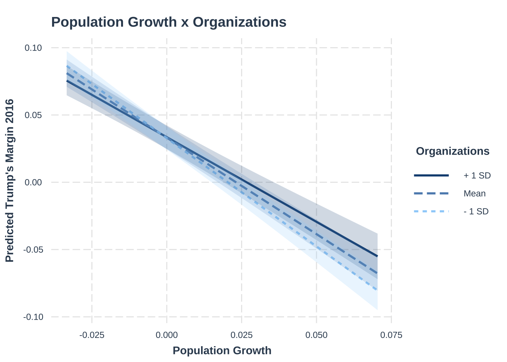
tiff(filename = "./output/Figure 7_1.tif", units="in", width=8, height=5, res=300, bg = "white")
last_plot()
dev.off()quartz_off_screen
2 interact_plot(modelint16_2,
pred = EMP_AVE_CGR80_19_c,
modx = volunteering_rate_county_c,
data = data_trump2, #
interval = TRUE,
main.title = "Employment Growth x Volunteering Rate",
x.label = "Employment Growth",
y.label = "Predicted Trump's Margin 2016",
legend.main = "Volunteering Rate")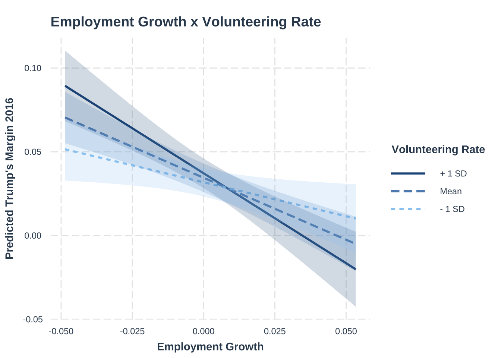
tiff(filename = "./output/Figure 7_2.tif", units="in", width=8, height=5, res=300, bg = "white")
last_plot()
dev.off()quartz_off_screen
2 # Interaction: EAR_AVE_JOB_CGR80_19_c * clustering_county_c
interact_plot(modelint16_3,
pred = EAR_AVE_JOB_CGR80_19_c,
modx = clustering_county_c,
data = data_trump2,
interval = TRUE,
main.title = "Earnings Growth x Clustering",
x.label = "Earnings Growth",
y.label = "Predicted Trump's Margin 2016",
legend.main = "Clustering")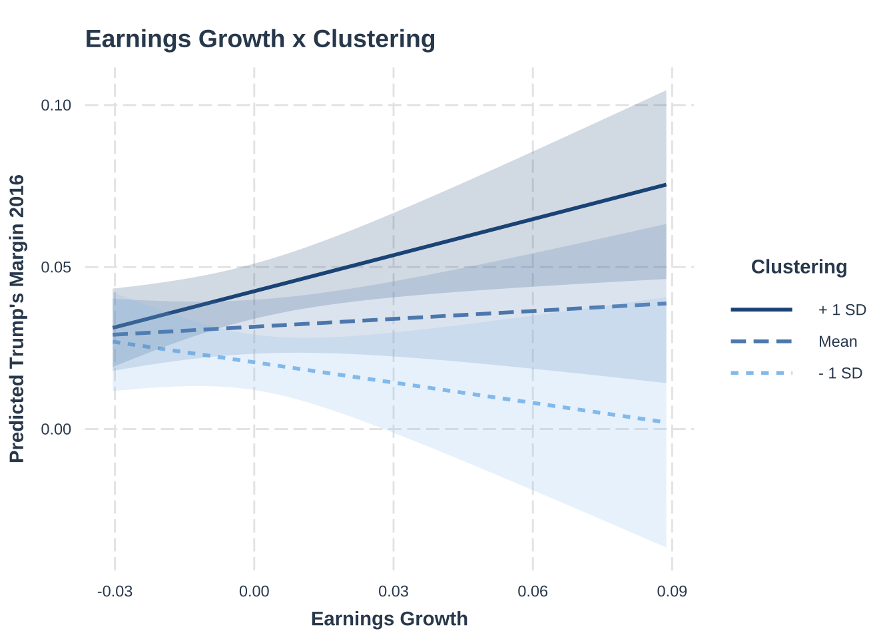
tiff(filename = "./output/Figure 7_3.tif", units="in", width=8, height=5, res=300, bg = "white")
last_plot()
dev.off()quartz_off_screen
2 # Interaction: POP_CGR80_19_c * clustering_county_c
interact_plot(modelint16_3,
pred = POP_CGR80_19_c,
modx = clustering_county_c,
data = data_trump2,
interval = TRUE,
main.title = "Population Growth x Clustering",
x.label = "Population Growth",
y.label = "Predicted Trump's Margin 2016",
legend.main = "Clustering")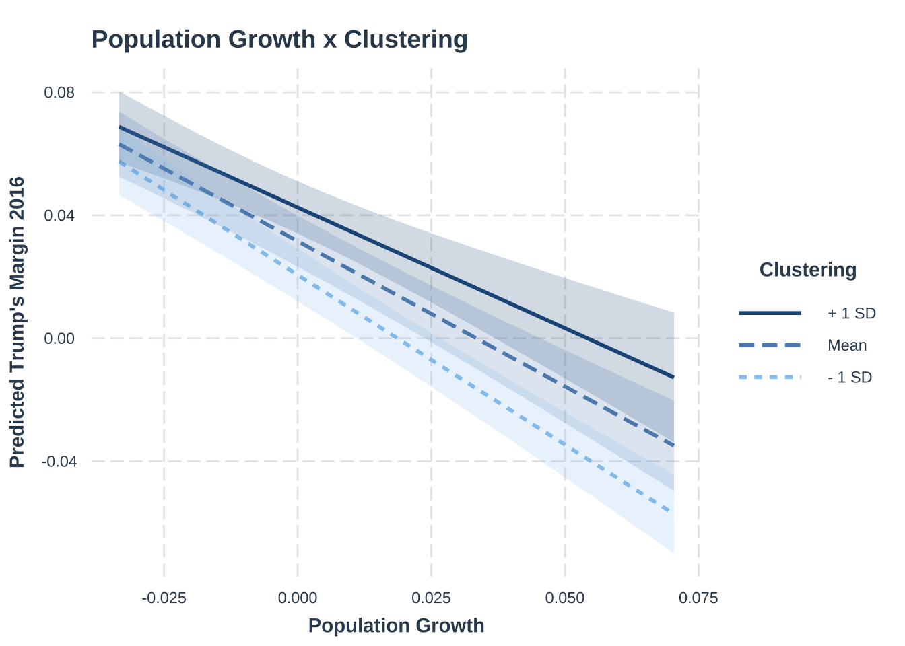
tiff(filename = "./output/Figure 7_4.tif", units="in", width=8, height=5, res=300, bg = "white")
last_plot()
dev.off()quartz_off_screen
2 # Interaction: EMP_AVE_CGR80_19_c * support_ratio_county_c
interact_plot(modelint16_4,
pred = EMP_AVE_CGR80_19_c,
modx = support_ratio_county_c,
data = data_trump2,
interval = TRUE,
main.title = "Employment Growth x Support Networks",
x.label = "Employment Growth",
y.label = "Predicted Trump's Margin 2016",
legend.main = "Support Networks")Warning: 0.0148977172636011 is outside the observed range of
support_ratio_county_c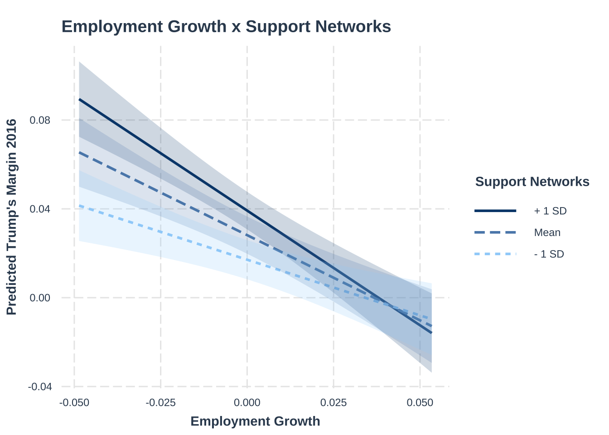
tiff(filename = "./output/Figure 7_5.tif", units="in", width=8, height=5, res=300, bg = "white")
last_plot()
dev.off()quartz_off_screen
2 #Interaction: EAR_AVE_JOB_CGR80_19_c * support_ratio_county_c
interact_plot(modelint16_4,
pred = EAR_AVE_JOB_CGR80_19_c,
modx = support_ratio_county_c,
data = data_trump2,
interval = TRUE,
main.title = "Earnings Growth x Support Networks",
x.label = "Earnings Growth",
y.label = "Predicted Trump's Margin 2016",
legend.main = "Support Networks")Warning: 0.0148977172636011 is outside the observed range of
support_ratio_county_c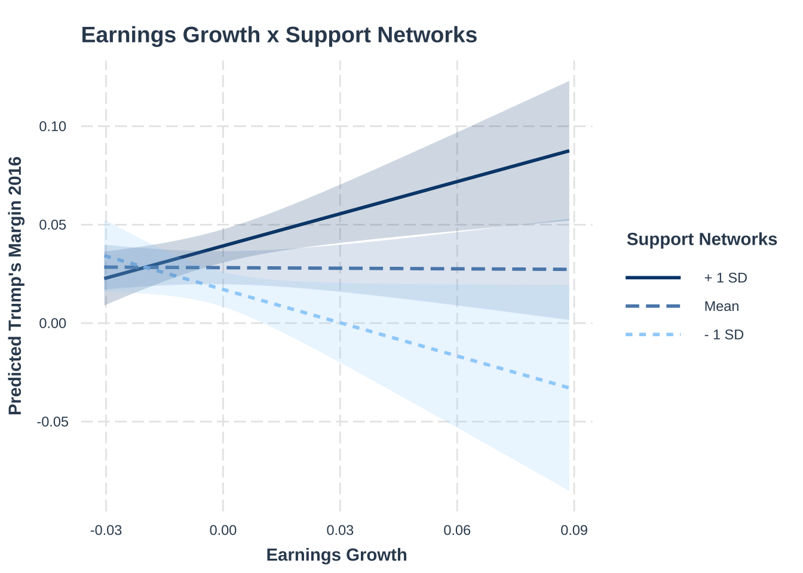
tiff(filename = "./output/Figure 7_6.tif", units="in", width=8, height=5, res=300, bg = "white")
last_plot()
dev.off()quartz_off_screen
2 # Interaction: WA_SA_MEA_CGR80_19_c * support_ratio_county_c
interact_plot(modelint16_4,
pred = WA_SA_MEA_CGR80_19_c,
modx = support_ratio_county_c,
data = data_trump2,
interval = TRUE,
main.title = "Wage Growth x Support Networks",
x.label = "Wage Growth",
y.label = "Predicted Trump's Margin 2016",
legend.main = "Support Networks")Warning: 0.0148977172636011 is outside the observed range of
support_ratio_county_c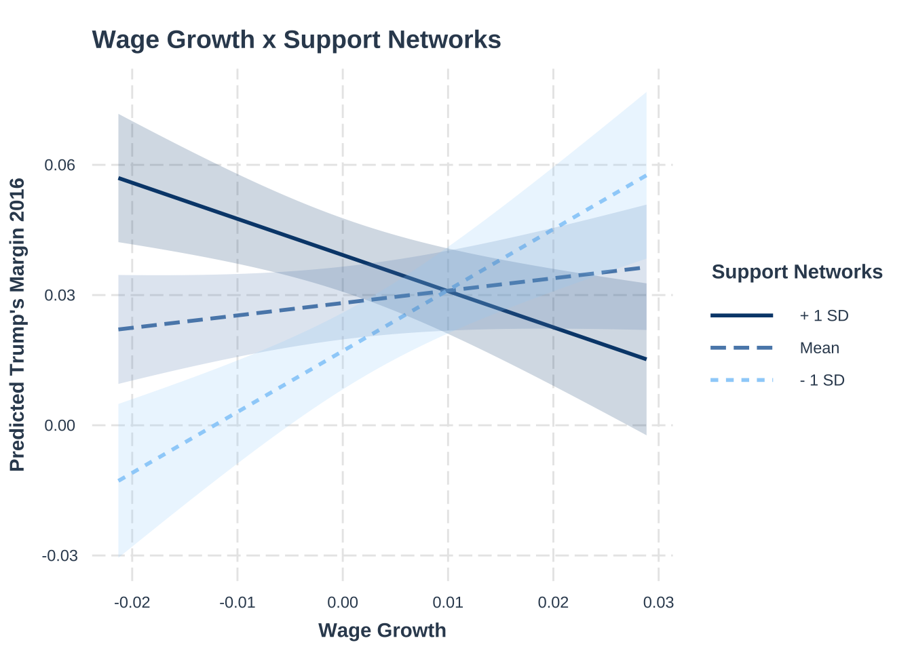
tiff(filename = "./output/Figure 7_7.tif", units="in", width=8, height=5, res=300, bg = "white")
last_plot()
dev.off()quartz_off_screen
2 # Interaction: EMP_AVE_CGR80_19_c * ec_county_c
interact_plot(modelint16_5,
pred = EMP_AVE_CGR80_19_c,
modx = ec_county_c,
data = data_trump2,
interval = TRUE,
main.title = "Employment Growth x Econ. Connect.",
x.label = "Employment Growth",
y.label = "Predicted Trump's Margin 2016",
legend.main = "Econ. Connect.")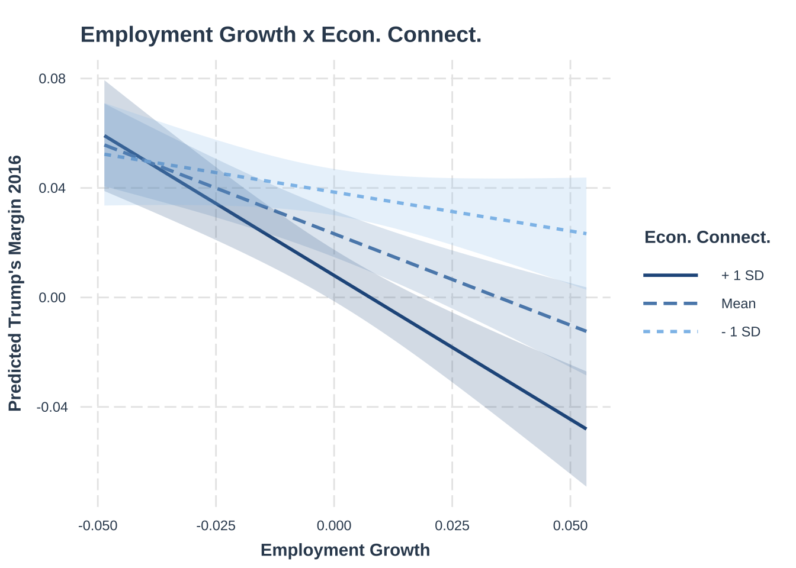
tiff(filename = "./output/Figure 7_8.tif", units="in", width=8, height=5, res=300, bg = "white")
last_plot()
dev.off()quartz_off_screen
2 # Interaction: POP_CGR80_19_c * ec_county_c
interact_plot(modelint16_5,
pred = POP_CGR80_19_c,
modx = ec_county_c,
data = data_trump2,
interval = TRUE,
main.title = "Population Growth x Econ. Connect.",
x.label = "Population Growth",
y.label = "Predicted Trump's Margin 2016",
legend.main = "Econ. Connect.")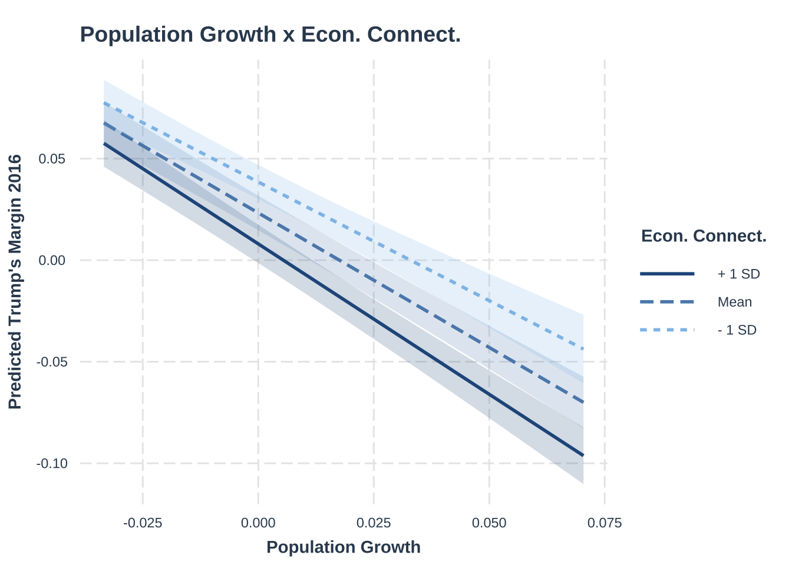
tiff(filename = "./output/Figure 7_9.tif", units="in", width=8, height=5, res=300, bg = "white")
last_plot()
dev.off()quartz_off_screen
2 # Interaction: WA_SA_MEA_CGR80_19_c * ec_county_c
interact_plot(modelint16_5,
pred = WA_SA_MEA_CGR80_19_c,
modx = ec_county_c,
data = data_trump2,
interval = TRUE,
main.title = "Wage Growth x Econ. Connect.",
x.label = "Wage Growth",
y.label = "Predicted Trump's Margin 2016",
legend.main = "Econ. Connect.")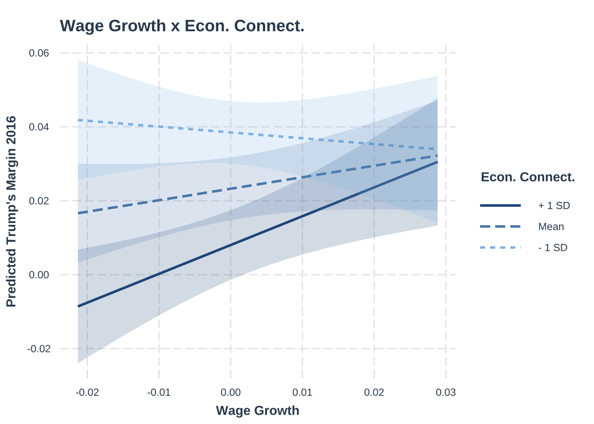
tiff(filename = "./output/Figure 7_10.tif", units="in", width=8, height=5, res=300, bg = "white")
last_plot()
dev.off()quartz_off_screen
2 Table 4 Interactions between social capital and economic change, 2020 elections.
# For 2020 Employment Change
# civic_organizations
modelint20_1 <- lm(MAR_T_20_new ~ INC_PC_16_c + GINI_16_c + EMP_AVE_CGR80_19_c +
civic_organizations_county_c + POP_DEN_16_c + UNE_16_c + EDU1_16_c +
R_BLACK_16_c + SEX_RATIO_c + AGE_DEP_YOUNG_c + MARRIED_c +
EMP_AVE_CGR80_19_c*civic_organizations_county_c +
EAR_AVE_JOB_CGR80_19_c*civic_organizations_county_c +
POP_CGR80_19_c*civic_organizations_county_c +
WA_SA_MEA_CGR80_19_c*civic_organizations_county_c +
factor(S_ID),
data = data_trump2)
summary(modelint20_1)
Call:
lm(formula = MAR_T_20_new ~ INC_PC_16_c + GINI_16_c + EMP_AVE_CGR80_19_c +
civic_organizations_county_c + POP_DEN_16_c + UNE_16_c +
EDU1_16_c + R_BLACK_16_c + SEX_RATIO_c + AGE_DEP_YOUNG_c +
MARRIED_c + EMP_AVE_CGR80_19_c * civic_organizations_county_c +
EAR_AVE_JOB_CGR80_19_c * civic_organizations_county_c + POP_CGR80_19_c *
civic_organizations_county_c + WA_SA_MEA_CGR80_19_c * civic_organizations_county_c +
factor(S_ID), data = data_trump2)
Residuals:
Min 1Q Median 3Q Max
-0.199052 -0.023295 -0.000364 0.022226 0.259129
Coefficients:
Estimate
(Intercept) 0.03819573171
INC_PC_16_c -0.00000188740
GINI_16_c -0.12173214680
EMP_AVE_CGR80_19_c -0.73253706456
civic_organizations_county_c -0.18119695440
POP_DEN_16_c 0.00000051925
UNE_16_c 0.00240750962
EDU1_16_c 0.00234583651
R_BLACK_16_c -0.00098529042
SEX_RATIO_c 0.00018416651
AGE_DEP_YOUNG_c -0.00086363965
MARRIED_c 0.00144746233
EAR_AVE_JOB_CGR80_19_c 0.10755974993
POP_CGR80_19_c -2.16089288042
WA_SA_MEA_CGR80_19_c 0.74508272574
factor(S_ID)AR 0.00889632101
factor(S_ID)AZ -0.01622539888
factor(S_ID)CA -0.02102411357
factor(S_ID)CO 0.00260379758
factor(S_ID)CT 0.01195763530
factor(S_ID)DC 0.07652972985
factor(S_ID)DE 0.01087001036
factor(S_ID)FL 0.03867936781
factor(S_ID)GA -0.00105123584
factor(S_ID)HI 0.08034447764
factor(S_ID)IA 0.08056452652
factor(S_ID)ID -0.01278065615
factor(S_ID)IL 0.03248977458
factor(S_ID)IN 0.03565105897
factor(S_ID)KS -0.02286418464
factor(S_ID)KY 0.00171818457
factor(S_ID)LA 0.00495723279
factor(S_ID)MA -0.01163164945
factor(S_ID)MD 0.00328259510
factor(S_ID)ME 0.02239158720
factor(S_ID)MI 0.03056818242
factor(S_ID)MN 0.06027424355
factor(S_ID)MO 0.04532228367
factor(S_ID)MS -0.00131867885
factor(S_ID)MT 0.01225257331
factor(S_ID)NC 0.00709884388
factor(S_ID)ND 0.06365104038
factor(S_ID)NE 0.01155548147
factor(S_ID)NH 0.00680094983
factor(S_ID)NJ 0.01849529853
factor(S_ID)NM 0.01144955098
factor(S_ID)NV 0.04234863193
factor(S_ID)NY 0.06900262985
factor(S_ID)OH 0.07529676410
factor(S_ID)OK -0.00305530083
factor(S_ID)OR -0.01194649960
factor(S_ID)PA 0.01888972250
factor(S_ID)RI 0.00027011368
factor(S_ID)SC 0.01589869264
factor(S_ID)SD 0.03676677153
factor(S_ID)TN 0.02868459573
factor(S_ID)TX -0.01485499868
factor(S_ID)UT -0.07184372746
factor(S_ID)VA 0.01859730514
factor(S_ID)VT 0.00124253361
factor(S_ID)WA -0.01426709061
factor(S_ID)WI 0.04824288604
factor(S_ID)WV 0.01382403407
factor(S_ID)WY 0.01340438100
EMP_AVE_CGR80_19_c:civic_organizations_county_c -10.56706875611
civic_organizations_county_c:EAR_AVE_JOB_CGR80_19_c -9.99452878956
civic_organizations_county_c:POP_CGR80_19_c 8.81375797890
civic_organizations_county_c:WA_SA_MEA_CGR80_19_c 18.38247598262
Std. Error t value
(Intercept) 0.00506991936 7.534
INC_PC_16_c 0.00000009664 -19.531
GINI_16_c 0.02713364442 -4.486
EMP_AVE_CGR80_19_c 0.15480533596 -4.732
civic_organizations_county_c 0.09663009269 -1.875
POP_DEN_16_c 0.00000046831 1.109
UNE_16_c 0.00063802047 3.773
EDU1_16_c 0.00018554475 12.643
R_BLACK_16_c 0.00009069041 -10.864
SEX_RATIO_c 0.00006869880 2.681
AGE_DEP_YOUNG_c 0.00016220640 -5.324
MARRIED_c 0.00017735960 8.161
EAR_AVE_JOB_CGR80_19_c 0.16060276879 0.670
POP_CGR80_19_c 0.08675382568 -24.908
WA_SA_MEA_CGR80_19_c 0.25666600098 2.903
factor(S_ID)AR 0.00656148625 1.356
factor(S_ID)AZ 0.01163297759 -1.395
factor(S_ID)CA 0.00748218631 -2.810
factor(S_ID)CO 0.00743376503 0.350
factor(S_ID)CT 0.01475193858 0.811
factor(S_ID)DC 0.03924715780 1.950
factor(S_ID)DE 0.02272137630 0.478
factor(S_ID)FL 0.00692792264 5.583
factor(S_ID)GA 0.00568840204 -0.185
factor(S_ID)HI 0.02286317168 3.514
factor(S_ID)IA 0.00688704876 11.698
factor(S_ID)ID 0.00807464945 -1.583
factor(S_ID)IL 0.00660938777 4.916
factor(S_ID)IN 0.00671155048 5.312
factor(S_ID)KS 0.00692521154 -3.302
factor(S_ID)KY 0.00618692501 0.278
factor(S_ID)LA 0.00680335915 0.729
factor(S_ID)MA 0.01186492162 -0.980
factor(S_ID)MD 0.00935921072 0.351
factor(S_ID)ME 0.01106034607 2.024
factor(S_ID)MI 0.00684127878 4.468
factor(S_ID)MN 0.00693502624 8.691
factor(S_ID)MO 0.00636120727 7.125
factor(S_ID)MS 0.00642998100 -0.205
factor(S_ID)MT 0.00782009794 1.567
factor(S_ID)NC 0.00616884790 1.151
factor(S_ID)ND 0.00848069475 7.505
factor(S_ID)NE 0.00725239371 1.593
factor(S_ID)NH 0.01339832021 0.508
factor(S_ID)NJ 0.01000682949 1.848
factor(S_ID)NM 0.00891286506 1.285
factor(S_ID)NV 0.01106579773 3.827
factor(S_ID)NY 0.00741381917 9.307
factor(S_ID)OH 0.00673330603 11.183
factor(S_ID)OK 0.00687382197 -0.444
factor(S_ID)OR 0.00839241749 -1.423
factor(S_ID)PA 0.00715697109 2.639
factor(S_ID)RI 0.01810560500 0.015
factor(S_ID)SC 0.00747561642 2.127
factor(S_ID)SD 0.00756077153 4.863
factor(S_ID)TN 0.00637043378 4.503
factor(S_ID)TX 0.00571362952 -2.600
factor(S_ID)UT 0.00956279293 -7.513
factor(S_ID)VA 0.00651380124 2.855
factor(S_ID)VT 0.01169661991 0.106
factor(S_ID)WA 0.00820881522 -1.738
factor(S_ID)WI 0.00713755048 6.759
factor(S_ID)WV 0.00740868783 1.866
factor(S_ID)WY 0.00995417329 1.347
EMP_AVE_CGR80_19_c:civic_organizations_county_c 13.25843668484 -0.797
civic_organizations_county_c:EAR_AVE_JOB_CGR80_19_c 10.90537130526 -0.916
civic_organizations_county_c:POP_CGR80_19_c 7.76685295668 1.135
civic_organizations_county_c:WA_SA_MEA_CGR80_19_c 18.48357602628 0.995
Pr(>|t|)
(Intercept) 0.000000000000065166 ***
INC_PC_16_c < 0.0000000000000002 ***
GINI_16_c 0.000007521183403676 ***
EMP_AVE_CGR80_19_c 0.000002328069599706 ***
civic_organizations_county_c 0.060869 .
POP_DEN_16_c 0.267619
UNE_16_c 0.000164 ***
EDU1_16_c < 0.0000000000000002 ***
R_BLACK_16_c < 0.0000000000000002 ***
SEX_RATIO_c 0.007386 **
AGE_DEP_YOUNG_c 0.000000108943233511 ***
MARRIED_c 0.000000000000000486 ***
EAR_AVE_JOB_CGR80_19_c 0.503085
POP_CGR80_19_c < 0.0000000000000002 ***
WA_SA_MEA_CGR80_19_c 0.003724 **
factor(S_ID)AR 0.175254
factor(S_ID)AZ 0.163188
factor(S_ID)CA 0.004989 **
factor(S_ID)CO 0.726164
factor(S_ID)CT 0.417672
factor(S_ID)DC 0.051278 .
factor(S_ID)DE 0.632398
factor(S_ID)FL 0.000000025773819541 ***
factor(S_ID)GA 0.853396
factor(S_ID)HI 0.000448 ***
factor(S_ID)IA < 0.0000000000000002 ***
factor(S_ID)ID 0.113572
factor(S_ID)IL 0.000000933069555579 ***
factor(S_ID)IN 0.000000116567697195 ***
factor(S_ID)KS 0.000973 ***
factor(S_ID)KY 0.781253
factor(S_ID)LA 0.466277
factor(S_ID)MA 0.326999
factor(S_ID)MD 0.725813
factor(S_ID)ME 0.043010 *
factor(S_ID)MI 0.000008185300647069 ***
factor(S_ID)MN < 0.0000000000000002 ***
factor(S_ID)MO 0.000000000001304850 ***
factor(S_ID)MS 0.837522
factor(S_ID)MT 0.117267
factor(S_ID)NC 0.249926
factor(S_ID)ND 0.000000000000080640 ***
factor(S_ID)NE 0.111193
factor(S_ID)NH 0.611774
factor(S_ID)NJ 0.064664 .
factor(S_ID)NM 0.199030
factor(S_ID)NV 0.000132 ***
factor(S_ID)NY < 0.0000000000000002 ***
factor(S_ID)OH < 0.0000000000000002 ***
factor(S_ID)OK 0.656726
factor(S_ID)OR 0.154701
factor(S_ID)PA 0.008350 **
factor(S_ID)RI 0.988098
factor(S_ID)SC 0.033525 *
factor(S_ID)SD 0.000001217863044773 ***
factor(S_ID)TN 0.000006967704642953 ***
factor(S_ID)TX 0.009371 **
factor(S_ID)UT 0.000000000000076269 ***
factor(S_ID)VA 0.004333 **
factor(S_ID)VT 0.915407
factor(S_ID)WA 0.082312 .
factor(S_ID)WI 0.000000000016679739 ***
factor(S_ID)WV 0.062152 .
factor(S_ID)WY 0.178210
EMP_AVE_CGR80_19_c:civic_organizations_county_c 0.425511
civic_organizations_county_c:EAR_AVE_JOB_CGR80_19_c 0.359491
civic_organizations_county_c:POP_CGR80_19_c 0.256555
civic_organizations_county_c:WA_SA_MEA_CGR80_19_c 0.320046
---
Signif. codes: 0 '***' 0.001 '**' 0.01 '*' 0.05 '.' 0.1 ' ' 1
Residual standard error: 0.0384 on 2947 degrees of freedom
(2 observations deleted due to missingness)
Multiple R-squared: 0.6537, Adjusted R-squared: 0.6459
F-statistic: 83.05 on 67 and 2947 DF, p-value: < 0.00000000000000022#vif(modelint20_1)
# volunteering_rate
modelint20_2 <- lm(MAR_T_20_new ~ INC_PC_16_c + GINI_16_c + EMP_AVE_CGR80_19_c +
volunteering_rate_county_c + POP_DEN_16_c + UNE_16_c + EDU1_16_c +
R_BLACK_16_c + SEX_RATIO_c + AGE_DEP_YOUNG_c + MARRIED_c +
EMP_AVE_CGR80_19_c*volunteering_rate_county_c +
EAR_AVE_JOB_CGR80_19_c*volunteering_rate_county_c +
POP_CGR80_19_c*volunteering_rate_county_c +
WA_SA_MEA_CGR80_19_c*volunteering_rate_county_c +
factor(S_ID),
data = data_trump2)
summary(modelint20_2)
Call:
lm(formula = MAR_T_20_new ~ INC_PC_16_c + GINI_16_c + EMP_AVE_CGR80_19_c +
volunteering_rate_county_c + POP_DEN_16_c + UNE_16_c + EDU1_16_c +
R_BLACK_16_c + SEX_RATIO_c + AGE_DEP_YOUNG_c + MARRIED_c +
EMP_AVE_CGR80_19_c * volunteering_rate_county_c + EAR_AVE_JOB_CGR80_19_c *
volunteering_rate_county_c + POP_CGR80_19_c * volunteering_rate_county_c +
WA_SA_MEA_CGR80_19_c * volunteering_rate_county_c + factor(S_ID),
data = data_trump2)
Residuals:
Min 1Q Median 3Q Max
-0.198632 -0.023662 -0.000166 0.022077 0.249283
Coefficients:
Estimate
(Intercept) 0.03996773837
INC_PC_16_c -0.00000186309
GINI_16_c -0.11651358663
EMP_AVE_CGR80_19_c -0.83305206466
volunteering_rate_county_c 0.04375265258
POP_DEN_16_c 0.00000041202
UNE_16_c 0.00229801637
EDU1_16_c 0.00249084399
R_BLACK_16_c -0.00096136759
SEX_RATIO_c 0.00017467385
AGE_DEP_YOUNG_c -0.00079851024
MARRIED_c 0.00139040807
EAR_AVE_JOB_CGR80_19_c 0.05224081190
POP_CGR80_19_c -2.12377941234
WA_SA_MEA_CGR80_19_c 0.81315476487
factor(S_ID)AR 0.00722930102
factor(S_ID)AZ -0.01777271956
factor(S_ID)CA -0.02408831113
factor(S_ID)CO 0.00069697166
factor(S_ID)CT 0.01113815288
factor(S_ID)DC 0.07111342249
factor(S_ID)DE 0.00980690260
factor(S_ID)FL 0.03632981746
factor(S_ID)GA -0.00242086321
factor(S_ID)HI 0.07825296621
factor(S_ID)IA 0.07922741298
factor(S_ID)ID -0.01604436112
factor(S_ID)IL 0.03059897226
factor(S_ID)IN 0.03369034991
factor(S_ID)KS -0.02794559029
factor(S_ID)KY 0.00146149929
factor(S_ID)LA 0.00312319016
factor(S_ID)MA -0.01298019950
factor(S_ID)MD 0.00138121280
factor(S_ID)ME 0.02146287084
factor(S_ID)MI 0.02809327394
factor(S_ID)MN 0.05901535321
factor(S_ID)MO 0.04213950992
factor(S_ID)MS -0.00220670336
factor(S_ID)MT 0.00839246466
factor(S_ID)NC 0.00720199691
factor(S_ID)ND 0.06108410938
factor(S_ID)NE 0.00890281502
factor(S_ID)NH 0.00571931741
factor(S_ID)NJ 0.01818021509
factor(S_ID)NM 0.00951508692
factor(S_ID)NV 0.03850423662
factor(S_ID)NY 0.06759413148
factor(S_ID)OH 0.07405040984
factor(S_ID)OK -0.00459083618
factor(S_ID)OR -0.01570098999
factor(S_ID)PA 0.01840578662
factor(S_ID)RI -0.00065832988
factor(S_ID)SC 0.01700650358
factor(S_ID)SD 0.03517625824
factor(S_ID)TN 0.02729948292
factor(S_ID)TX -0.01770066221
factor(S_ID)UT -0.07350550745
factor(S_ID)VA 0.01615097345
factor(S_ID)VT -0.00019591499
factor(S_ID)WA -0.01728829927
factor(S_ID)WI 0.04712824055
factor(S_ID)WV 0.01308204840
factor(S_ID)WY 0.01016202182
EMP_AVE_CGR80_19_c:volunteering_rate_county_c -20.07587050625
volunteering_rate_county_c:EAR_AVE_JOB_CGR80_19_c 1.72710060320
volunteering_rate_county_c:POP_CGR80_19_c -0.61744781330
volunteering_rate_county_c:WA_SA_MEA_CGR80_19_c -6.91193541477
Std. Error t value
(Intercept) 0.00507477017 7.876
INC_PC_16_c 0.00000009591 -19.425
GINI_16_c 0.02684091946 -4.341
EMP_AVE_CGR80_19_c 0.15485389644 -5.380
volunteering_rate_county_c 0.02850760981 1.535
POP_DEN_16_c 0.00000046471 0.887
UNE_16_c 0.00063569641 3.615
EDU1_16_c 0.00018801489 13.248
R_BLACK_16_c 0.00009239926 -10.404
SEX_RATIO_c 0.00006854055 2.548
AGE_DEP_YOUNG_c 0.00015472408 -5.161
MARRIED_c 0.00017456248 7.965
EAR_AVE_JOB_CGR80_19_c 0.14777933252 0.354
POP_CGR80_19_c 0.08361148174 -25.401
WA_SA_MEA_CGR80_19_c 0.24547841200 3.313
factor(S_ID)AR 0.00658825683 1.097
factor(S_ID)AZ 0.01158381347 -1.534
factor(S_ID)CA 0.00746026506 -3.229
factor(S_ID)CO 0.00731085401 0.095
factor(S_ID)CT 0.01469507820 0.758
factor(S_ID)DC 0.03897903284 1.824
factor(S_ID)DE 0.02264319859 0.433
factor(S_ID)FL 0.00691816538 5.251
factor(S_ID)GA 0.00567780472 -0.426
factor(S_ID)HI 0.02281312704 3.430
factor(S_ID)IA 0.00687396685 11.526
factor(S_ID)ID 0.00813569021 -1.972
factor(S_ID)IL 0.00661280821 4.627
factor(S_ID)IN 0.00675864762 4.985
factor(S_ID)KS 0.00695534650 -4.018
factor(S_ID)KY 0.00617772636 0.237
factor(S_ID)LA 0.00683009801 0.457
factor(S_ID)MA 0.01182422718 -1.098
factor(S_ID)MD 0.00932428178 0.148
factor(S_ID)ME 0.01102998260 1.946
factor(S_ID)MI 0.00712288817 3.944
factor(S_ID)MN 0.00691618605 8.533
factor(S_ID)MO 0.00640254970 6.582
factor(S_ID)MS 0.00641011576 -0.344
factor(S_ID)MT 0.00775899843 1.082
factor(S_ID)NC 0.00614644749 1.172
factor(S_ID)ND 0.00843550358 7.241
factor(S_ID)NE 0.00724182916 1.229
factor(S_ID)NH 0.01334246558 0.429
factor(S_ID)NJ 0.00996516548 1.824
factor(S_ID)NM 0.00883457503 1.077
factor(S_ID)NV 0.01107249133 3.477
factor(S_ID)NY 0.00739169404 9.145
factor(S_ID)OH 0.00674405092 10.980
factor(S_ID)OK 0.00697769866 -0.658
factor(S_ID)OR 0.00838220435 -1.873
factor(S_ID)PA 0.00712785766 2.582
factor(S_ID)RI 0.01803692912 -0.036
factor(S_ID)SC 0.00747439336 2.275
factor(S_ID)SD 0.00753564886 4.668
factor(S_ID)TN 0.00635730145 4.294
factor(S_ID)TX 0.00570480445 -3.103
factor(S_ID)UT 0.00947561041 -7.757
factor(S_ID)VA 0.00649540588 2.487
factor(S_ID)VT 0.01163374586 -0.017
factor(S_ID)WA 0.00818727671 -2.112
factor(S_ID)WI 0.00713016708 6.610
factor(S_ID)WV 0.00741148487 1.765
factor(S_ID)WY 0.00990600128 1.026
EMP_AVE_CGR80_19_c:volunteering_rate_county_c 4.46783011918 -4.493
volunteering_rate_county_c:EAR_AVE_JOB_CGR80_19_c 3.31258940287 0.521
volunteering_rate_county_c:POP_CGR80_19_c 2.23904583616 -0.276
volunteering_rate_county_c:WA_SA_MEA_CGR80_19_c 6.31599211086 -1.094
Pr(>|t|)
(Intercept) 0.00000000000000472 ***
INC_PC_16_c < 0.0000000000000002 ***
GINI_16_c 0.00001466829444015 ***
EMP_AVE_CGR80_19_c 0.00000008049835492 ***
volunteering_rate_county_c 0.124947
POP_DEN_16_c 0.375353
UNE_16_c 0.000305 ***
EDU1_16_c < 0.0000000000000002 ***
R_BLACK_16_c < 0.0000000000000002 ***
SEX_RATIO_c 0.010870 *
AGE_DEP_YOUNG_c 0.00000026212287559 ***
MARRIED_c 0.00000000000000234 ***
EAR_AVE_JOB_CGR80_19_c 0.723735
POP_CGR80_19_c < 0.0000000000000002 ***
WA_SA_MEA_CGR80_19_c 0.000936 ***
factor(S_ID)AR 0.272599
factor(S_ID)AZ 0.125070
factor(S_ID)CA 0.001256 **
factor(S_ID)CO 0.924056
factor(S_ID)CT 0.448541
factor(S_ID)DC 0.068193 .
factor(S_ID)DE 0.664970
factor(S_ID)FL 0.00000016171288583 ***
factor(S_ID)GA 0.669867
factor(S_ID)HI 0.000611 ***
factor(S_ID)IA < 0.0000000000000002 ***
factor(S_ID)ID 0.048692 *
factor(S_ID)IL 0.00000386589577540 ***
factor(S_ID)IN 0.00000065620721255 ***
factor(S_ID)KS 0.00006019855325791 ***
factor(S_ID)KY 0.813002
factor(S_ID)LA 0.647512
factor(S_ID)MA 0.272398
factor(S_ID)MD 0.882250
factor(S_ID)ME 0.051766 .
factor(S_ID)MI 0.00008197183468882 ***
factor(S_ID)MN < 0.0000000000000002 ***
factor(S_ID)MO 0.00000000005485498 ***
factor(S_ID)MS 0.730680
factor(S_ID)MT 0.279500
factor(S_ID)NC 0.241399
factor(S_ID)ND 0.00000000000056449 ***
factor(S_ID)NE 0.219035
factor(S_ID)NH 0.668205
factor(S_ID)NJ 0.068196 .
factor(S_ID)NM 0.281556
factor(S_ID)NV 0.000513 ***
factor(S_ID)NY < 0.0000000000000002 ***
factor(S_ID)OH < 0.0000000000000002 ***
factor(S_ID)OK 0.510635
factor(S_ID)OR 0.061149 .
factor(S_ID)PA 0.009864 **
factor(S_ID)RI 0.970887
factor(S_ID)SC 0.022959 *
factor(S_ID)SD 0.00000317763611718 ***
factor(S_ID)TN 0.00001809920964049 ***
factor(S_ID)TX 0.001935 **
factor(S_ID)UT 0.00000000000001186 ***
factor(S_ID)VA 0.012955 *
factor(S_ID)VT 0.986565
factor(S_ID)WA 0.034804 *
factor(S_ID)WI 0.00000000004553853 ***
factor(S_ID)WV 0.077650 .
factor(S_ID)WY 0.305049
EMP_AVE_CGR80_19_c:volunteering_rate_county_c 0.00000727844136660 ***
volunteering_rate_county_c:EAR_AVE_JOB_CGR80_19_c 0.602145
volunteering_rate_county_c:POP_CGR80_19_c 0.782749
volunteering_rate_county_c:WA_SA_MEA_CGR80_19_c 0.273889
---
Signif. codes: 0 '***' 0.001 '**' 0.01 '*' 0.05 '.' 0.1 ' ' 1
Residual standard error: 0.03826 on 2947 degrees of freedom
(2 observations deleted due to missingness)
Multiple R-squared: 0.6564, Adjusted R-squared: 0.6485
F-statistic: 84.01 on 67 and 2947 DF, p-value: < 0.00000000000000022#vif(modelint20_2)
#clustering_county
modelint20_3 <- lm(MAR_T_20_new ~ INC_PC_16_c + GINI_16_c + EMP_AVE_CGR80_19_c +
clustering_county_c + POP_DEN_16_c + UNE_16_c + EDU1_16_c +
R_BLACK_16_c + SEX_RATIO_c + AGE_DEP_YOUNG_c + MARRIED_c +
EMP_AVE_CGR80_19_c*clustering_county_c +
EAR_AVE_JOB_CGR80_19_c*clustering_county_c +
POP_CGR80_19_c*clustering_county_c +
WA_SA_MEA_CGR80_19_c*clustering_county_c +
factor(S_ID),
data = data_trump2)
summary(modelint20_3)
Call:
lm(formula = MAR_T_20_new ~ INC_PC_16_c + GINI_16_c + EMP_AVE_CGR80_19_c +
clustering_county_c + POP_DEN_16_c + UNE_16_c + EDU1_16_c +
R_BLACK_16_c + SEX_RATIO_c + AGE_DEP_YOUNG_c + MARRIED_c +
EMP_AVE_CGR80_19_c * clustering_county_c + EAR_AVE_JOB_CGR80_19_c *
clustering_county_c + POP_CGR80_19_c * clustering_county_c +
WA_SA_MEA_CGR80_19_c * clustering_county_c + factor(S_ID),
data = data_trump2)
Residuals:
Min 1Q Median 3Q Max
-0.183249 -0.023005 -0.000325 0.021929 0.264871
Coefficients:
Estimate Std. Error
(Intercept) 0.03703893779 0.00492102280
INC_PC_16_c -0.00000166951 0.00000009634
GINI_16_c -0.14431006124 0.02620994138
EMP_AVE_CGR80_19_c -0.67827880996 0.15233855074
clustering_county_c 0.76896906444 0.05660772853
POP_DEN_16_c 0.00000152794 0.00000046202
UNE_16_c 0.00240330200 0.00061972035
EDU1_16_c 0.00182043159 0.00018464810
R_BLACK_16_c -0.00102457876 0.00009215530
SEX_RATIO_c 0.00011291348 0.00006728138
AGE_DEP_YOUNG_c -0.00074628526 0.00014878495
MARRIED_c 0.00113031226 0.00017122586
EAR_AVE_JOB_CGR80_19_c 0.03612900402 0.15133744363
POP_CGR80_19_c -1.35728488595 0.10595945364
WA_SA_MEA_CGR80_19_c 0.60420615792 0.24242365573
factor(S_ID)AR 0.01222703532 0.00638367289
factor(S_ID)AZ -0.01014788833 0.01135860526
factor(S_ID)CA -0.01167126169 0.00731768633
factor(S_ID)CO 0.01036086287 0.00718853350
factor(S_ID)CT 0.01690500376 0.01432405580
factor(S_ID)DC 0.08606802918 0.03802060038
factor(S_ID)DE 0.02114860860 0.02206811053
factor(S_ID)FL 0.04321253151 0.00677524599
factor(S_ID)GA -0.00233783994 0.00552855516
factor(S_ID)HI 0.07905763059 0.02219017019
factor(S_ID)IA 0.08034444285 0.00670007405
factor(S_ID)ID -0.00654752359 0.00784226432
factor(S_ID)IL 0.03312078100 0.00642134472
factor(S_ID)IN 0.03880915185 0.00651189906
factor(S_ID)KS -0.01969451710 0.00669828734
factor(S_ID)KY 0.00340023691 0.00601455361
factor(S_ID)LA 0.00538216112 0.00662685737
factor(S_ID)MA -0.01173562342 0.01152454693
factor(S_ID)MD 0.00659889728 0.00910321735
factor(S_ID)ME 0.01998569009 0.01073181334
factor(S_ID)MI 0.02991226420 0.00663937663
factor(S_ID)MN 0.05756417563 0.00674254085
factor(S_ID)MO 0.04769023239 0.00615931194
factor(S_ID)MS -0.00716803943 0.00625136828
factor(S_ID)MT 0.01097424022 0.00753972442
factor(S_ID)NC 0.00883845110 0.00599304274
factor(S_ID)ND 0.06411162440 0.00830907931
factor(S_ID)NE 0.01764954663 0.00705351792
factor(S_ID)NH 0.00848070813 0.01300109272
factor(S_ID)NJ 0.02317572150 0.00972754677
factor(S_ID)NM 0.01776339233 0.00865088557
factor(S_ID)NV 0.04304628364 0.01076770216
factor(S_ID)NY 0.07298329066 0.00720197317
factor(S_ID)OH 0.08147367873 0.00654259268
factor(S_ID)OK 0.00781927603 0.00672857483
factor(S_ID)OR -0.00556108345 0.00814346023
factor(S_ID)PA 0.02222455871 0.00695245358
factor(S_ID)RI 0.00845404887 0.01758211408
factor(S_ID)SC 0.01454676438 0.00726738469
factor(S_ID)SD 0.03653879358 0.00734598155
factor(S_ID)TN 0.02999124190 0.00617650211
factor(S_ID)TX -0.00532515091 0.00559916504
factor(S_ID)UT -0.07277954238 0.00923398182
factor(S_ID)VA 0.01882265944 0.00629607359
factor(S_ID)VT 0.00010050470 0.01133096848
factor(S_ID)WA -0.01101627809 0.00794204920
factor(S_ID)WI 0.04661909345 0.00693309705
factor(S_ID)WV 0.01663103366 0.00721467452
factor(S_ID)WY 0.01524286511 0.00964547402
EMP_AVE_CGR80_19_c:clustering_county_c 14.18698637562 6.78585511673
clustering_county_c:EAR_AVE_JOB_CGR80_19_c 6.92936401093 7.99794181700
clustering_county_c:POP_CGR80_19_c 12.59803719125 3.67819950062
clustering_county_c:WA_SA_MEA_CGR80_19_c -0.77710726120 11.53193752366
t value Pr(>|t|)
(Intercept) 7.527 0.00000000000006875 ***
INC_PC_16_c -17.330 < 0.0000000000000002 ***
GINI_16_c -5.506 0.00000003988014213 ***
EMP_AVE_CGR80_19_c -4.452 0.00000880530348658 ***
clustering_county_c 13.584 < 0.0000000000000002 ***
POP_DEN_16_c 3.307 0.000954 ***
UNE_16_c 3.878 0.000108 ***
EDU1_16_c 9.859 < 0.0000000000000002 ***
R_BLACK_16_c -11.118 < 0.0000000000000002 ***
SEX_RATIO_c 1.678 0.093409 .
AGE_DEP_YOUNG_c -5.016 0.00000055924424982 ***
MARRIED_c 6.601 0.00000000004815635 ***
EAR_AVE_JOB_CGR80_19_c 0.239 0.811330
POP_CGR80_19_c -12.809 < 0.0000000000000002 ***
WA_SA_MEA_CGR80_19_c 2.492 0.012744 *
factor(S_ID)AR 1.915 0.055543 .
factor(S_ID)AZ -0.893 0.371711
factor(S_ID)CA -1.595 0.110833
factor(S_ID)CO 1.441 0.149605
factor(S_ID)CT 1.180 0.238023
factor(S_ID)DC 2.264 0.023664 *
factor(S_ID)DE 0.958 0.337973
factor(S_ID)FL 6.378 0.00000000020759213 ***
factor(S_ID)GA -0.423 0.672424
factor(S_ID)HI 3.563 0.000373 ***
factor(S_ID)IA 11.992 < 0.0000000000000002 ***
factor(S_ID)ID -0.835 0.403840
factor(S_ID)IL 5.158 0.00000026624220105 ***
factor(S_ID)IN 5.960 0.00000000282625277 ***
factor(S_ID)KS -2.940 0.003305 **
factor(S_ID)KY 0.565 0.571889
factor(S_ID)LA 0.812 0.416757
factor(S_ID)MA -1.018 0.308612
factor(S_ID)MD 0.725 0.468573
factor(S_ID)ME 1.862 0.062662 .
factor(S_ID)MI 4.505 0.00000688632903182 ***
factor(S_ID)MN 8.537 < 0.0000000000000002 ***
factor(S_ID)MO 7.743 0.00000000000001327 ***
factor(S_ID)MS -1.147 0.251625
factor(S_ID)MT 1.456 0.145631
factor(S_ID)NC 1.475 0.140377
factor(S_ID)ND 7.716 0.00000000000001633 ***
factor(S_ID)NE 2.502 0.012395 *
factor(S_ID)NH 0.652 0.514254
factor(S_ID)NJ 2.382 0.017259 *
factor(S_ID)NM 2.053 0.040126 *
factor(S_ID)NV 3.998 0.00006552397527277 ***
factor(S_ID)NY 10.134 < 0.0000000000000002 ***
factor(S_ID)OH 12.453 < 0.0000000000000002 ***
factor(S_ID)OK 1.162 0.245289
factor(S_ID)OR -0.683 0.494730
factor(S_ID)PA 3.197 0.001405 **
factor(S_ID)RI 0.481 0.630671
factor(S_ID)SC 2.002 0.045414 *
factor(S_ID)SD 4.974 0.00000069351487252 ***
factor(S_ID)TN 4.856 0.00000126217528231 ***
factor(S_ID)TX -0.951 0.341651
factor(S_ID)UT -7.882 0.00000000000000451 ***
factor(S_ID)VA 2.990 0.002817 **
factor(S_ID)VT 0.009 0.992924
factor(S_ID)WA -1.387 0.165521
factor(S_ID)WI 6.724 0.00000000002113051 ***
factor(S_ID)WV 2.305 0.021226 *
factor(S_ID)WY 1.580 0.114143
EMP_AVE_CGR80_19_c:clustering_county_c 2.091 0.036643 *
clustering_county_c:EAR_AVE_JOB_CGR80_19_c 0.866 0.386345
clustering_county_c:POP_CGR80_19_c 3.425 0.000623 ***
clustering_county_c:WA_SA_MEA_CGR80_19_c -0.067 0.946278
---
Signif. codes: 0 '***' 0.001 '**' 0.01 '*' 0.05 '.' 0.1 ' ' 1
Residual standard error: 0.03727 on 2947 degrees of freedom
(2 observations deleted due to missingness)
Multiple R-squared: 0.6739, Adjusted R-squared: 0.6665
F-statistic: 90.89 on 67 and 2947 DF, p-value: < 0.00000000000000022#vif(modelint20_3)
#support_ratio_county
modelint20_4 <- lm(MAR_T_20_new ~ INC_PC_16_c + GINI_16_c + EMP_AVE_CGR80_19_c +
support_ratio_county_c + POP_DEN_16_c + UNE_16_c + EDU1_16_c +
R_BLACK_16_c + SEX_RATIO_c + AGE_DEP_YOUNG_c + MARRIED_c +
EMP_AVE_CGR80_19_c*support_ratio_county_c +
EAR_AVE_JOB_CGR80_19_c*support_ratio_county_c +
POP_CGR80_19_c*support_ratio_county_c +
WA_SA_MEA_CGR80_19_c*support_ratio_county_c +
factor(S_ID),
data = data_trump2)
summary(modelint20_4)
Call:
lm(formula = MAR_T_20_new ~ INC_PC_16_c + GINI_16_c + EMP_AVE_CGR80_19_c +
support_ratio_county_c + POP_DEN_16_c + UNE_16_c + EDU1_16_c +
R_BLACK_16_c + SEX_RATIO_c + AGE_DEP_YOUNG_c + MARRIED_c +
EMP_AVE_CGR80_19_c * support_ratio_county_c + EAR_AVE_JOB_CGR80_19_c *
support_ratio_county_c + POP_CGR80_19_c * support_ratio_county_c +
WA_SA_MEA_CGR80_19_c * support_ratio_county_c + factor(S_ID),
data = data_trump2)
Residuals:
Min 1Q Median 3Q Max
-0.196274 -0.023702 -0.000989 0.021790 0.255271
Coefficients:
Estimate Std. Error
(Intercept) 0.03346379523 0.00500398282
INC_PC_16_c -0.00000184370 0.00000009765
GINI_16_c -0.13904834480 0.02663748470
EMP_AVE_CGR80_19_c -0.82860419503 0.15975677565
support_ratio_county_c 0.83765576428 0.08577711453
POP_DEN_16_c 0.00000113590 0.00000047966
UNE_16_c 0.00250241777 0.00062927932
EDU1_16_c 0.00223345222 0.00018229271
R_BLACK_16_c -0.00090252405 0.00009135876
SEX_RATIO_c 0.00017405908 0.00006815479
AGE_DEP_YOUNG_c -0.00080543985 0.00015112165
MARRIED_c 0.00132744755 0.00017316141
EAR_AVE_JOB_CGR80_19_c -0.13016928811 0.16020556983
POP_CGR80_19_c -1.78374788400 0.09602634442
WA_SA_MEA_CGR80_19_c 1.13401746212 0.25102653543
factor(S_ID)AR 0.01031813485 0.00646262306
factor(S_ID)AZ -0.01286539676 0.01146949422
factor(S_ID)CA -0.01653189236 0.00738841899
factor(S_ID)CO 0.00518310033 0.00727252263
factor(S_ID)CT 0.01972917129 0.01454824116
factor(S_ID)DC 0.08196891643 0.03849536205
factor(S_ID)DE 0.00897670035 0.02237817913
factor(S_ID)FL 0.03630040256 0.00682509151
factor(S_ID)GA -0.00114970164 0.00559602698
factor(S_ID)HI 0.08080464370 0.02250909009
factor(S_ID)IA 0.08425450668 0.00681087800
factor(S_ID)ID -0.00619744460 0.00794964977
factor(S_ID)IL 0.03664949788 0.00653308006
factor(S_ID)IN 0.04044559341 0.00661675244
factor(S_ID)KS -0.02171639549 0.00680716646
factor(S_ID)KY 0.00459933979 0.00609701234
factor(S_ID)LA 0.00590396375 0.00669498243
factor(S_ID)MA -0.00797725216 0.01168679642
factor(S_ID)MD 0.00398849899 0.00920916826
factor(S_ID)ME 0.02505993836 0.01089533820
factor(S_ID)MI 0.03551060098 0.00675580326
factor(S_ID)MN 0.06664259082 0.00687800275
factor(S_ID)MO 0.05024524237 0.00626705471
factor(S_ID)MS -0.00254665355 0.00632622785
factor(S_ID)MT 0.01274137011 0.00765310766
factor(S_ID)NC 0.00640008723 0.00606099498
factor(S_ID)ND 0.06763666763 0.00839738820
factor(S_ID)NE 0.01605645739 0.00717593540
factor(S_ID)NH 0.01209752924 0.01319459608
factor(S_ID)NJ 0.02548305930 0.00987513981
factor(S_ID)NM 0.01281980314 0.00875061197
factor(S_ID)NV 0.03987939425 0.01116874826
factor(S_ID)NY 0.07258590042 0.00732967869
factor(S_ID)OH 0.08038909446 0.00663914128
factor(S_ID)OK 0.00130554257 0.00679512406
factor(S_ID)OR -0.00545071793 0.00825802430
factor(S_ID)PA 0.02320748887 0.00706257440
factor(S_ID)RI 0.00849011989 0.01784804927
factor(S_ID)SC 0.01292456611 0.00736457573
factor(S_ID)SD 0.04054969570 0.00747159202
factor(S_ID)TN 0.03068507746 0.00626749779
factor(S_ID)TX -0.01255844200 0.00563304290
factor(S_ID)UT -0.07131645547 0.00935348070
factor(S_ID)VA 0.02146964767 0.00639757624
factor(S_ID)VT 0.00553228890 0.01151443242
factor(S_ID)WA -0.00894465118 0.00806011684
factor(S_ID)WI 0.05241940767 0.00704774880
factor(S_ID)WV 0.01787883320 0.00731261926
factor(S_ID)WY 0.01226228485 0.00976336142
EMP_AVE_CGR80_19_c:support_ratio_county_c -20.38543890354 3.42406822820
support_ratio_county_c:EAR_AVE_JOB_CGR80_19_c 42.10573142227 16.07555538279
support_ratio_county_c:POP_CGR80_19_c -1.47662147393 3.24963534027
support_ratio_county_c:WA_SA_MEA_CGR80_19_c -81.32738574046 17.14989945552
t value Pr(>|t|)
(Intercept) 6.687 0.00000000002706725 ***
INC_PC_16_c -18.881 < 0.0000000000000002 ***
GINI_16_c -5.220 0.00000019132189979 ***
EMP_AVE_CGR80_19_c -5.187 0.00000022859095582 ***
support_ratio_county_c 9.765 < 0.0000000000000002 ***
POP_DEN_16_c 2.368 0.017942 *
UNE_16_c 3.977 0.00007157615535015 ***
EDU1_16_c 12.252 < 0.0000000000000002 ***
R_BLACK_16_c -9.879 < 0.0000000000000002 ***
SEX_RATIO_c 2.554 0.010703 *
AGE_DEP_YOUNG_c -5.330 0.00000010577195736 ***
MARRIED_c 7.666 0.00000000000002394 ***
EAR_AVE_JOB_CGR80_19_c -0.813 0.416562
POP_CGR80_19_c -18.576 < 0.0000000000000002 ***
WA_SA_MEA_CGR80_19_c 4.518 0.00000650277249271 ***
factor(S_ID)AR 1.597 0.110465
factor(S_ID)AZ -1.122 0.262079
factor(S_ID)CA -2.238 0.025325 *
factor(S_ID)CO 0.713 0.476090
factor(S_ID)CT 1.356 0.175165
factor(S_ID)DC 2.129 0.033311 *
factor(S_ID)DE 0.401 0.688349
factor(S_ID)FL 5.319 0.00000011235118812 ***
factor(S_ID)GA -0.205 0.837235
factor(S_ID)HI 3.590 0.000336 ***
factor(S_ID)IA 12.371 < 0.0000000000000002 ***
factor(S_ID)ID -0.780 0.435697
factor(S_ID)IL 5.610 0.00000002212969472 ***
factor(S_ID)IN 6.113 0.00000000110921026 ***
factor(S_ID)KS -3.190 0.001437 **
factor(S_ID)KY 0.754 0.450694
factor(S_ID)LA 0.882 0.377930
factor(S_ID)MA -0.683 0.494922
factor(S_ID)MD 0.433 0.664973
factor(S_ID)ME 2.300 0.021514 *
factor(S_ID)MI 5.256 0.00000015746605961 ***
factor(S_ID)MN 9.689 < 0.0000000000000002 ***
factor(S_ID)MO 8.017 0.00000000000000154 ***
factor(S_ID)MS -0.403 0.687305
factor(S_ID)MT 1.665 0.096047 .
factor(S_ID)NC 1.056 0.291079
factor(S_ID)ND 8.054 0.00000000000000115 ***
factor(S_ID)NE 2.238 0.025325 *
factor(S_ID)NH 0.917 0.359294
factor(S_ID)NJ 2.581 0.009913 **
factor(S_ID)NM 1.465 0.143023
factor(S_ID)NV 3.571 0.000362 ***
factor(S_ID)NY 9.903 < 0.0000000000000002 ***
factor(S_ID)OH 12.108 < 0.0000000000000002 ***
factor(S_ID)OK 0.192 0.847654
factor(S_ID)OR -0.660 0.509273
factor(S_ID)PA 3.286 0.001028 **
factor(S_ID)RI 0.476 0.634331
factor(S_ID)SC 1.755 0.079369 .
factor(S_ID)SD 5.427 0.00000006189577901 ***
factor(S_ID)TN 4.896 0.00000103125022561 ***
factor(S_ID)TX -2.229 0.025861 *
factor(S_ID)UT -7.625 0.00000000000003280 ***
factor(S_ID)VA 3.356 0.000801 ***
factor(S_ID)VT 0.480 0.630932
factor(S_ID)WA -1.110 0.267201
factor(S_ID)WI 7.438 0.00000000000013357 ***
factor(S_ID)WV 2.445 0.014546 *
factor(S_ID)WY 1.256 0.209234
EMP_AVE_CGR80_19_c:support_ratio_county_c -5.954 0.00000000293337884 ***
support_ratio_county_c:EAR_AVE_JOB_CGR80_19_c 2.619 0.008858 **
support_ratio_county_c:POP_CGR80_19_c -0.454 0.649577
support_ratio_county_c:WA_SA_MEA_CGR80_19_c -4.742 0.00000221510498430 ***
---
Signif. codes: 0 '***' 0.001 '**' 0.01 '*' 0.05 '.' 0.1 ' ' 1
Residual standard error: 0.03781 on 2947 degrees of freedom
(2 observations deleted due to missingness)
Multiple R-squared: 0.6644, Adjusted R-squared: 0.6567
F-statistic: 87.06 on 67 and 2947 DF, p-value: < 0.00000000000000022#vif(modelint20_4)
#ec_county
modelint20_5 <- lm(MAR_T_20_new ~ INC_PC_16_c + GINI_16_c + EMP_AVE_CGR80_19_c +
ec_county_c + POP_DEN_16_c + UNE_16_c + EDU1_16_c +
R_BLACK_16_c + SEX_RATIO_c + AGE_DEP_YOUNG_c + MARRIED_c +
EMP_AVE_CGR80_19_c*ec_county_c +
EAR_AVE_JOB_CGR80_19_c*ec_county_c +
POP_CGR80_19_c*ec_county_c +
WA_SA_MEA_CGR80_19_c*ec_county_c +
factor(S_ID),
data = data_trump2)
summary(modelint20_5)
Call:
lm(formula = MAR_T_20_new ~ INC_PC_16_c + GINI_16_c + EMP_AVE_CGR80_19_c +
ec_county_c + POP_DEN_16_c + UNE_16_c + EDU1_16_c + R_BLACK_16_c +
SEX_RATIO_c + AGE_DEP_YOUNG_c + MARRIED_c + EMP_AVE_CGR80_19_c *
ec_county_c + EAR_AVE_JOB_CGR80_19_c * ec_county_c + POP_CGR80_19_c *
ec_county_c + WA_SA_MEA_CGR80_19_c * ec_county_c + factor(S_ID),
data = data_trump2)
Residuals:
Min 1Q Median 3Q Max
-0.19945 -0.02350 -0.00061 0.02242 0.25119
Coefficients:
Estimate Std. Error t value
(Intercept) 0.0333161619 0.0051600099 6.457
INC_PC_16_c -0.0000017935 0.0000001006 -17.826
GINI_16_c -0.1339880823 0.0278737101 -4.807
EMP_AVE_CGR80_19_c -0.7304600184 0.1554469381 -4.699
ec_county_c -0.0474759211 0.0094465101 -5.026
POP_DEN_16_c 0.0000004150 0.0000004642 0.894
UNE_16_c 0.0025148147 0.0006962484 3.612
EDU1_16_c 0.0020541588 0.0002141299 9.593
R_BLACK_16_c -0.0010293256 0.0000975528 -10.551
SEX_RATIO_c 0.0002561926 0.0000713195 3.592
AGE_DEP_YOUNG_c -0.0010733623 0.0001611273 -6.662
MARRIED_c 0.0016428727 0.0001852184 8.870
EAR_AVE_JOB_CGR80_19_c -0.0173663377 0.1798994853 -0.097
POP_CGR80_19_c -2.0544706733 0.0882528941 -23.279
WA_SA_MEA_CGR80_19_c 1.0906697899 0.2724814674 4.003
factor(S_ID)AR 0.0117586456 0.0065434873 1.797
factor(S_ID)AZ -0.0175824624 0.0115700353 -1.520
factor(S_ID)CA -0.0198220364 0.0075074043 -2.640
factor(S_ID)CO 0.0110509234 0.0075579717 1.462
factor(S_ID)CT 0.0194473655 0.0146880838 1.324
factor(S_ID)DC 0.0830018322 0.0388084512 2.139
factor(S_ID)DE 0.0131268702 0.0225174374 0.583
factor(S_ID)FL 0.0335677179 0.0070153345 4.785
factor(S_ID)GA -0.0004308864 0.0057858602 -0.074
factor(S_ID)HI 0.0916657134 0.0227367921 4.032
factor(S_ID)IA 0.0901604797 0.0070661555 12.759
factor(S_ID)ID -0.0045829748 0.0081410143 -0.563
factor(S_ID)IL 0.0386117988 0.0066720710 5.787
factor(S_ID)IN 0.0416706429 0.0067451844 6.178
factor(S_ID)KS -0.0161679799 0.0070444889 -2.295
factor(S_ID)KY 0.0102354832 0.0064148789 1.596
factor(S_ID)LA 0.0107891891 0.0069128950 1.561
factor(S_ID)MA -0.0062781681 0.0118158490 -0.531
factor(S_ID)MD 0.0139002440 0.0094338986 1.473
factor(S_ID)ME 0.0243642969 0.0109750829 2.220
factor(S_ID)MI 0.0337822621 0.0068547163 4.928
factor(S_ID)MN 0.0721690624 0.0072404112 9.968
factor(S_ID)MO 0.0522536523 0.0064635547 8.084
factor(S_ID)MS 0.0036991453 0.0064975120 0.569
factor(S_ID)MT 0.0228413566 0.0081193581 2.813
factor(S_ID)NC 0.0072652971 0.0061956993 1.173
factor(S_ID)ND 0.0713574829 0.0088008883 8.108
factor(S_ID)NE 0.0180506245 0.0074173677 2.434
factor(S_ID)NH 0.0165001958 0.0134579608 1.226
factor(S_ID)NJ 0.0269095557 0.0100118574 2.688
factor(S_ID)NM 0.0047768232 0.0090775325 0.526
factor(S_ID)NV 0.0468261352 0.0112705695 4.155
factor(S_ID)NY 0.0743649117 0.0074384885 9.997
factor(S_ID)OH 0.0810436448 0.0067521251 12.003
factor(S_ID)OK 0.0023833752 0.0069048566 0.345
factor(S_ID)OR -0.0117125602 0.0083817158 -1.397
factor(S_ID)PA 0.0247719882 0.0071941667 3.443
factor(S_ID)RI 0.0134783961 0.0180512785 0.747
factor(S_ID)SC 0.0171934525 0.0075091420 2.290
factor(S_ID)SD 0.0508255036 0.0078697746 6.458
factor(S_ID)TN 0.0302174271 0.0063534072 4.756
factor(S_ID)TX -0.0086519397 0.0058204465 -1.486
factor(S_ID)UT -0.0552272439 0.0100888149 -5.474
factor(S_ID)VA 0.0230537747 0.0065231787 3.534
factor(S_ID)VT 0.0069293775 0.0116262694 0.596
factor(S_ID)WA -0.0088310788 0.0081850092 -1.079
factor(S_ID)WI 0.0566651037 0.0072557980 7.810
factor(S_ID)WV 0.0198976226 0.0074488513 2.671
factor(S_ID)WY 0.0235832061 0.0100516070 2.346
EMP_AVE_CGR80_19_c:ec_county_c -3.4837455518 0.8357013734 -4.169
ec_county_c:EAR_AVE_JOB_CGR80_19_c 1.4354957050 0.6815074453 2.106
ec_county_c:POP_CGR80_19_c -0.5712380904 0.4196997845 -1.361
ec_county_c:WA_SA_MEA_CGR80_19_c 1.4063192200 1.2855311844 1.094
Pr(>|t|)
(Intercept) 0.000000000125205690 ***
INC_PC_16_c < 0.0000000000000002 ***
GINI_16_c 0.000001610914627849 ***
EMP_AVE_CGR80_19_c 0.000002735721944533 ***
ec_county_c 0.000000532078752957 ***
POP_DEN_16_c 0.371385
UNE_16_c 0.000309 ***
EDU1_16_c < 0.0000000000000002 ***
R_BLACK_16_c < 0.0000000000000002 ***
SEX_RATIO_c 0.000333 ***
AGE_DEP_YOUNG_c 0.000000000032324308 ***
MARRIED_c < 0.0000000000000002 ***
EAR_AVE_JOB_CGR80_19_c 0.923104
POP_CGR80_19_c < 0.0000000000000002 ***
WA_SA_MEA_CGR80_19_c 0.000064194410960625 ***
factor(S_ID)AR 0.072440 .
factor(S_ID)AZ 0.128707
factor(S_ID)CA 0.008327 **
factor(S_ID)CO 0.143808
factor(S_ID)CT 0.185600
factor(S_ID)DC 0.032539 *
factor(S_ID)DE 0.559963
factor(S_ID)FL 0.000001796806162517 ***
factor(S_ID)GA 0.940640
factor(S_ID)HI 0.000056833443599800 ***
factor(S_ID)IA < 0.0000000000000002 ***
factor(S_ID)ID 0.573513
factor(S_ID)IL 0.000000007933210875 ***
factor(S_ID)IN 0.000000000741382212 ***
factor(S_ID)KS 0.021798 *
factor(S_ID)KY 0.110691
factor(S_ID)LA 0.118696
factor(S_ID)MA 0.595228
factor(S_ID)MD 0.140743
factor(S_ID)ME 0.026499 *
factor(S_ID)MI 0.000000876290691554 ***
factor(S_ID)MN < 0.0000000000000002 ***
factor(S_ID)MO 0.000000000000000910 ***
factor(S_ID)MS 0.569185
factor(S_ID)MT 0.004938 **
factor(S_ID)NC 0.241039
factor(S_ID)ND 0.000000000000000753 ***
factor(S_ID)NE 0.015011 *
factor(S_ID)NH 0.220278
factor(S_ID)NJ 0.007234 **
factor(S_ID)NM 0.598772
factor(S_ID)NV 0.000033514956649910 ***
factor(S_ID)NY < 0.0000000000000002 ***
factor(S_ID)OH < 0.0000000000000002 ***
factor(S_ID)OK 0.729989
factor(S_ID)OR 0.162403
factor(S_ID)PA 0.000583 ***
factor(S_ID)RI 0.455322
factor(S_ID)SC 0.022112 *
factor(S_ID)SD 0.000000000123819763 ***
factor(S_ID)TN 0.000002070757408290 ***
factor(S_ID)TX 0.137263
factor(S_ID)UT 0.000000047752257471 ***
factor(S_ID)VA 0.000416 ***
factor(S_ID)VT 0.551215
factor(S_ID)WA 0.280708
factor(S_ID)WI 0.000000000000007967 ***
factor(S_ID)WV 0.007600 **
factor(S_ID)WY 0.019033 *
EMP_AVE_CGR80_19_c:ec_county_c 0.000031543855253978 ***
ec_county_c:EAR_AVE_JOB_CGR80_19_c 0.035260 *
ec_county_c:POP_CGR80_19_c 0.173600
ec_county_c:WA_SA_MEA_CGR80_19_c 0.274064
---
Signif. codes: 0 '***' 0.001 '**' 0.01 '*' 0.05 '.' 0.1 ' ' 1
Residual standard error: 0.03798 on 2882 degrees of freedom
(67 observations deleted due to missingness)
Multiple R-squared: 0.6663, Adjusted R-squared: 0.6585
F-statistic: 85.89 on 67 and 2882 DF, p-value: < 0.00000000000000022#vif(modelint20_5)interact_plot(modelint20_2,
pred = EMP_AVE_CGR80_19_c,
modx = volunteering_rate_county_c,
data = data_trump2,
interval = TRUE,
main.title = "Employment Growth x Volunteering Rate",
x.label = "Employment Growth",
y.label = "Predicted Trump's Margin 2020",
legend.main = "Volunteering Rate")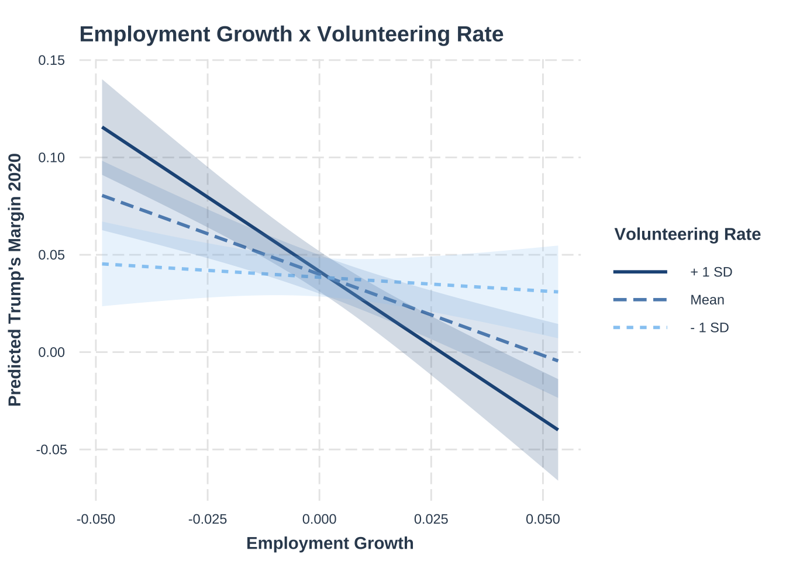
tiff(filename = "./output/Figure 8_1.tif", units="in", width=8, height=5, res=300, bg = "white")
last_plot()
dev.off()quartz_off_screen
2 interact_plot(modelint20_3,
pred = EMP_AVE_CGR80_19_c,
modx = clustering_county_c,
data = data_trump2,
interval = TRUE,
main.title = "Employment Growth × Clustering",
x.label = "Employment Growth",
y.label = "Predicted Trump's Margin 2020",
legend.main = "Clustering")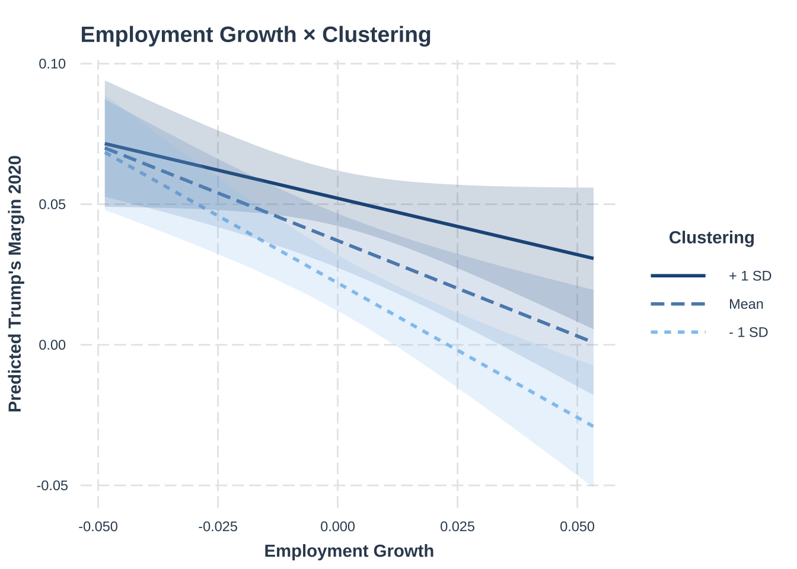
tiff(filename = "./output/Figure 8_2.tif", units="in", width=8, height=5, res=300, bg = "white")
last_plot()
dev.off()quartz_off_screen
2 interact_plot(modelint20_3,
pred = POP_CGR80_19_c,
modx = clustering_county_c,
data = data_trump2,
interval = TRUE,
main.title = "Population Growth × Clustering",
x.label = "Population Growth",
y.label = "Predicted Trump's Margin 2020",
legend.main = "Clustering")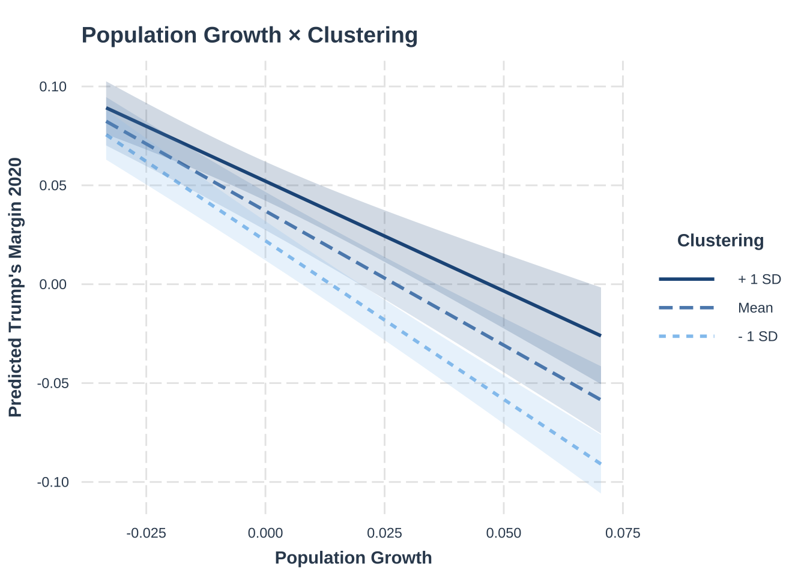
tiff(filename = "./output/Figure 8_3.tif", units="in", width=8, height=5, res=300, bg = "white")
last_plot()
dev.off()quartz_off_screen
2 interact_plot(modelint20_4,
pred = EMP_AVE_CGR80_19_c,
modx = support_ratio_county_c,
data = data_trump2,
interval = TRUE,
main.title = "Employment Growth × Support Networks",
x.label = "Employment Growth",
y.label = "Predicted Trump's Margin 2020",
legend.main = "Support Networks")Warning: 0.0148977172636011 is outside the observed range of
support_ratio_county_c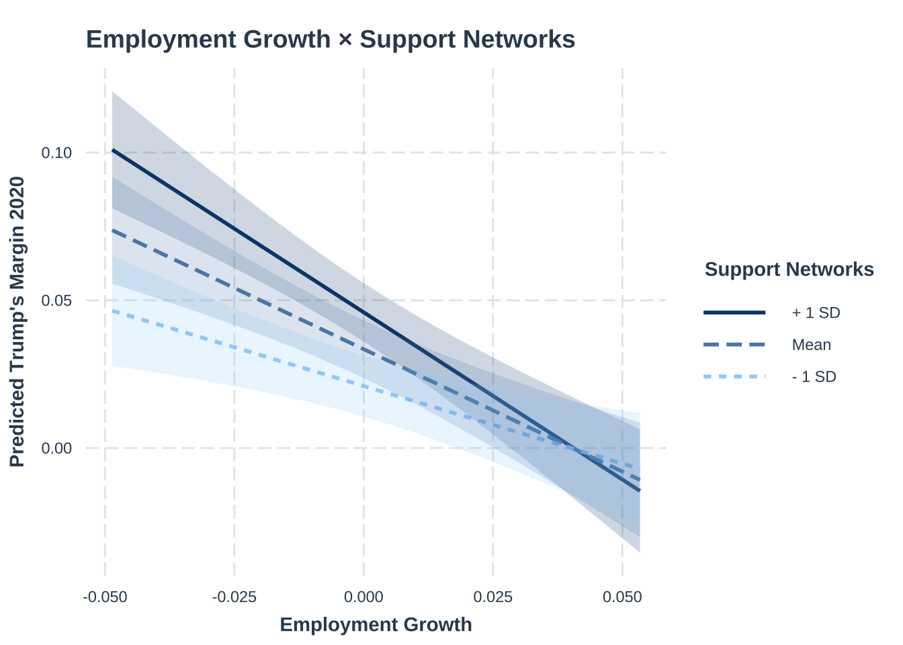
tiff(filename = "./output/Figure 8_4.tif", units="in", width=8, height=5, res=300, bg = "white")
last_plot()
dev.off()quartz_off_screen
2 interact_plot(modelint20_4,
pred = EAR_AVE_JOB_CGR80_19_c,
modx = support_ratio_county_c,
data = data_trump2,
interval = TRUE,
main.title = "Earnings Growth × Support Networks",
x.label = "Earnings Growth",
y.label = "Predicted Trump's Margin 2020",
legend.main = "Support Networks")Warning: 0.0148977172636011 is outside the observed range of
support_ratio_county_c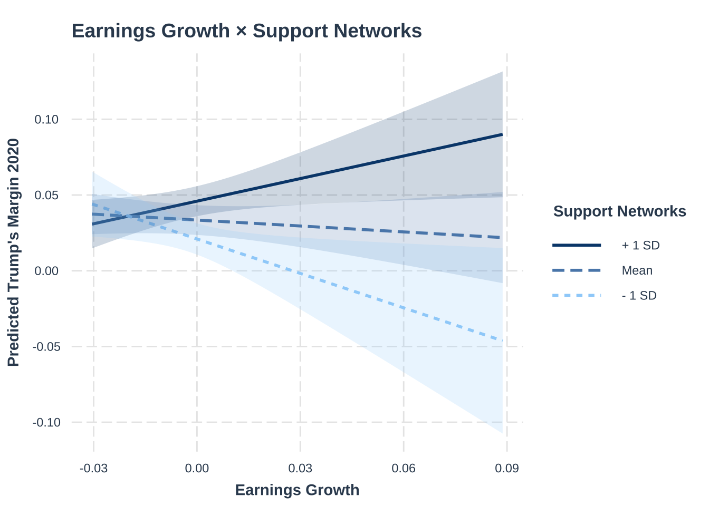
tiff(filename = "./output/Figure 8_5.tif", units="in", width=8, height=5, res=300, bg = "white")
last_plot()
dev.off()quartz_off_screen
2 interact_plot(modelint20_4,
pred = WA_SA_MEA_CGR80_19_c,
modx = support_ratio_county_c,
data = data_trump2,
interval = TRUE,
main.title = "Wages Growth × Support Networks",
x.label = "Wages Growth",
y.label = "Predicted Trump's Margin 2020",
legend.main = "Support Networks")Warning: 0.0148977172636011 is outside the observed range of
support_ratio_county_c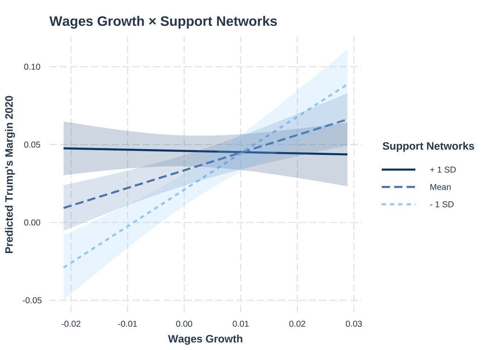
tiff(filename = "./output/Figure 8_6.tif", units="in", width=8, height=5, res=300, bg = "white")
last_plot()
dev.off()quartz_off_screen
2 interact_plot(modelint20_5,
pred = EMP_AVE_CGR80_19_c,
modx = ec_county_c,
data = data_trump2,
interval = TRUE,
main.title = "Employment Growth × Econ. Connect.",
x.label = "Employment Growth",
y.label = "Predicted Trump's Margin 2020",
legend.main = "Econ. Connect.")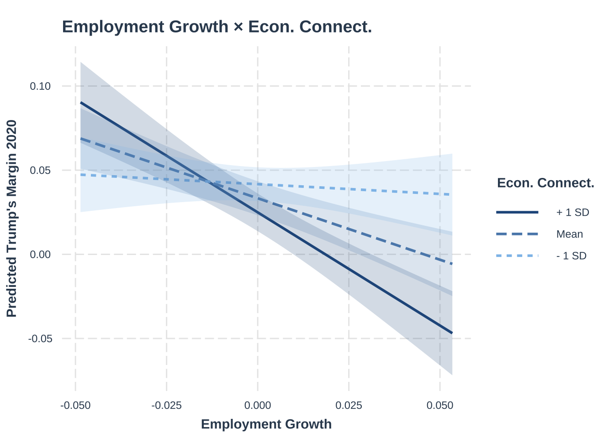
tiff(filename = "./output/Figure 8_7.tif", units="in", width=8, height=5, res=300, bg = "white")
last_plot()
dev.off()quartz_off_screen
2 interact_plot(modelint20_5,
pred = EAR_AVE_JOB_CGR80_19_c,
modx = ec_county_c,
data = data_trump2,
interval = TRUE,
main.title = "Earnings Growth × Econ. Connect.",
x.label = "Earnings Growth",
y.label = "Predicted Trump's Margin 2020",
legend.main = "Econ. Connect.")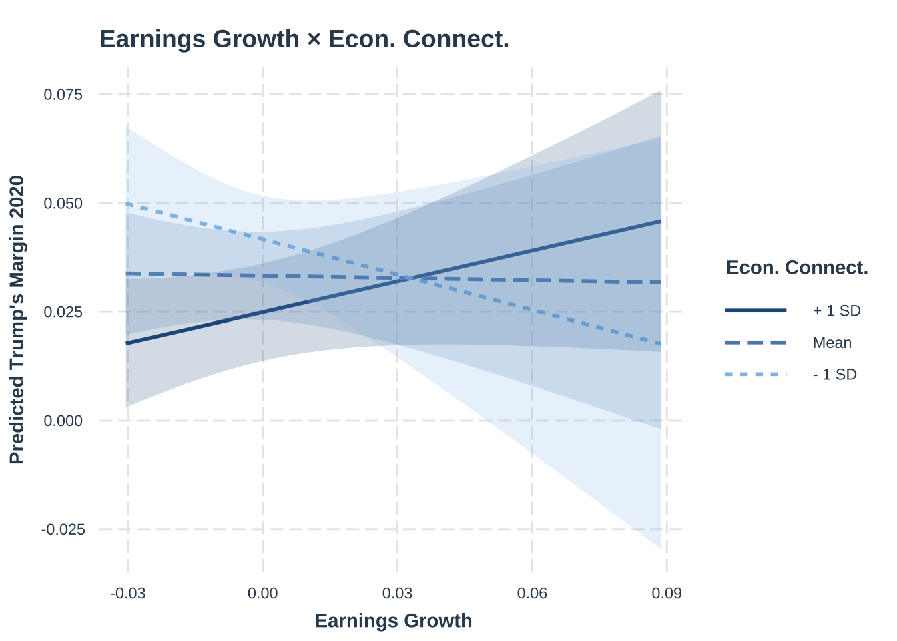
tiff(filename = "./output/Figure 8_8.tif", units="in", width=8, height=5, res=300, bg = "white")
last_plot()
dev.off()quartz_off_screen
2 R&R
describe(data_trump$INC_PC_16) vars n mean sd median trimmed mad min max range skew
X1 1 3067 40738.99 11137.86 38780 39433.55 7914.12 18257 214020 195763 3.45
kurtosis se
X1 31.05 201.12describe(data_trump$GINI_16) vars n mean sd median trimmed mad min max range skew kurtosis se
X1 1 3067 0.45 0.04 0.44 0.44 0.03 0.34 0.6 0.26 0.39 0.56 0describe(data_trump$EMP_AVE_CGR80_19) vars n mean sd median trimmed mad min max range skew kurtosis se
X1 1 3067 0.01 0.01 0.01 0.01 0 -0.04 0.06 0.1 0.35 7.62 0describe(data_trump$POP_DEN_16) vars n mean sd median trimmed mad min max range skew
X1 1 3066 233.55 1676.1 43.1 66.83 48.93 0.1 66940.1 66940 27.11
kurtosis se
X1 929.02 30.27describe(data_trump$UNE_16) vars n mean sd median trimmed mad min max range skew kurtosis se
X1 1 3067 3.58 1.52 3.5 3.51 1.19 0 18 18 1.65 10.86 0.03describe(data_trump$EDU1_16) vars n mean sd median trimmed mad min max range skew kurtosis se
X1 1 3067 13.76 6.58 12.4 13.2 6.08 0.05 58.7 58.65 1.01 1.97 0.12describe(data_trump$R_BLACK_16) vars n mean sd median trimmed mad min max range skew kurtosis se
X1 1 3067 9.88 14.67 3.1 6.46 3.56 0 87.2 87.2 2.21 4.82 0.26describe(data_trump$SEX_RATIO) vars n mean sd median trimmed mad min max range skew kurtosis
X1 1 3067 100.85 12.48 98.4 99.01 4.6 76.6 421.8 345.2 8.45 157.85
se
X1 0.23describe(data_trump$AGE_DEP_YOUNG) vars n mean sd median trimmed mad min max range skew kurtosis se
X1 1 3067 38 6.64 37.9 37.73 5.34 13 76.8 63.8 0.78 2.95 0.12describe(data_trump$MARRIED) vars n mean sd median trimmed mad min max range skew kurtosis se
X1 1 3067 52.27 8.52 52.5 52.28 6.38 20.3 160.8 140.5 2.6 29.01 0.15# Civic Engagement
modelrev20_1 <- data_trump2 %>% rename(
social_community = civic_organizations_county
) %>%
lm(SHARE_T_20 ~ INC_PC_16 + GINI_16 + EMP_AVE_CGR80_19 + social_community + POP_DEN_16 + UNE_16 + EDU1_16 + R_BLACK_16 + SEX_RATIO + AGE_DEP_YOUNG + MARRIED + factor(S_ID), data = .)
summary(modelrev20_1)
Call:
lm(formula = SHARE_T_20 ~ INC_PC_16 + GINI_16 + EMP_AVE_CGR80_19 +
social_community + POP_DEN_16 + UNE_16 + EDU1_16 + R_BLACK_16 +
SEX_RATIO + AGE_DEP_YOUNG + MARRIED + factor(S_ID), data = .)
Residuals:
Min 1Q Median 3Q Max
-0.51655 -0.04351 0.00351 0.05090 0.33891
Coefficients:
Estimate Std. Error t value Pr(>|t|)
(Intercept) 0.2679004472 0.0454697005 5.892 0.000000004250067037 ***
INC_PC_16 -0.0000041358 0.0000001944 -21.277 < 0.0000000000000002 ***
GINI_16 0.0587142467 0.0559921685 1.049 0.294441
EMP_AVE_CGR80_19 -1.8914707340 0.3093326153 -6.115 0.000000001094670759 ***
social_community 0.7274366016 0.1837697572 3.958 0.000077227032574075 ***
POP_DEN_16 -0.0000008833 0.0000009769 -0.904 0.365972
UNE_16 -0.0099315946 0.0013294309 -7.471 0.000000000000104555 ***
EDU1_16 0.0021362337 0.0003708135 5.761 0.000000009226087577 ***
R_BLACK_16 -0.0045588656 0.0001844316 -24.718 < 0.0000000000000002 ***
SEX_RATIO 0.0015007996 0.0001418626 10.579 < 0.0000000000000002 ***
AGE_DEP_YOUNG 0.0007110774 0.0003305062 2.151 0.031519 *
MARRIED 0.0097866606 0.0003709605 26.382 < 0.0000000000000002 ***
factor(S_ID)AR -0.0634803655 0.0137721851 -4.609 0.000004211240394124 ***
factor(S_ID)AZ -0.2372164851 0.0244082573 -9.719 < 0.0000000000000002 ***
factor(S_ID)CA -0.2689965025 0.0157135737 -17.119 < 0.0000000000000002 ***
factor(S_ID)CO -0.2344094306 0.0155413783 -15.083 < 0.0000000000000002 ***
factor(S_ID)CT -0.1947496025 0.0309198872 -6.299 0.000000000345157899 ***
factor(S_ID)DC -0.1117327914 0.0823076810 -1.358 0.174726
factor(S_ID)DE -0.1957059600 0.0477557591 -4.098 0.000042783639311413 ***
factor(S_ID)FL -0.0763776677 0.0143361573 -5.328 0.000000106980906484 ***
factor(S_ID)GA -0.0255777317 0.0117998616 -2.168 0.030266 *
factor(S_ID)HI -0.4082448525 0.0480729866 -8.492 < 0.0000000000000002 ***
factor(S_ID)IA -0.1848628616 0.0140064645 -13.198 < 0.0000000000000002 ***
factor(S_ID)ID -0.1459657666 0.0168855062 -8.644 < 0.0000000000000002 ***
factor(S_ID)IL -0.1191111159 0.0135610249 -8.783 < 0.0000000000000002 ***
factor(S_ID)IN -0.1163222332 0.0139204878 -8.356 < 0.0000000000000002 ***
factor(S_ID)KS -0.0900505778 0.0140592681 -6.405 0.000000000174260764 ***
factor(S_ID)KY -0.0847482376 0.0129467746 -6.546 0.000000000069468744 ***
factor(S_ID)LA 0.0435465843 0.0142561689 3.055 0.002274 **
factor(S_ID)MA -0.2734750741 0.0248285589 -11.015 < 0.0000000000000002 ***
factor(S_ID)MD -0.1318467599 0.0196636259 -6.705 0.000000000024016915 ***
factor(S_ID)ME -0.2951996219 0.0231829058 -12.734 < 0.0000000000000002 ***
factor(S_ID)MI -0.1817548266 0.0142095134 -12.791 < 0.0000000000000002 ***
factor(S_ID)MN -0.2142613727 0.0143738590 -14.906 < 0.0000000000000002 ***
factor(S_ID)MO -0.0734155889 0.0132386005 -5.546 0.000000031885546433 ***
factor(S_ID)MS 0.0009556508 0.0135050822 0.071 0.943592
factor(S_ID)MT -0.1672606970 0.0161999115 -10.325 < 0.0000000000000002 ***
factor(S_ID)NC -0.1192774284 0.0128990569 -9.247 < 0.0000000000000002 ***
factor(S_ID)ND -0.1163027463 0.0163488675 -7.114 0.000000000001410318 ***
factor(S_ID)NE -0.0838332441 0.0146862127 -5.708 0.000000012543375553 ***
factor(S_ID)NH -0.2813266547 0.0280927394 -10.014 < 0.0000000000000002 ***
factor(S_ID)NJ -0.1718571392 0.0209509586 -8.203 0.000000000000000346 ***
factor(S_ID)NM -0.2159766924 0.0186997429 -11.550 < 0.0000000000000002 ***
factor(S_ID)NV -0.0903760097 0.0232408301 -3.889 0.000103 ***
factor(S_ID)NY -0.1785678773 0.0154108068 -11.587 < 0.0000000000000002 ***
factor(S_ID)OH -0.1035835661 0.0139280601 -7.437 0.000000000000134184 ***
factor(S_ID)OK -0.0375444894 0.0143417241 -2.618 0.008894 **
factor(S_ID)OR -0.2324860038 0.0175621603 -13.238 < 0.0000000000000002 ***
factor(S_ID)PA -0.1150327591 0.0148514822 -7.746 0.000000000000012982 ***
factor(S_ID)RI -0.2717554091 0.0379790760 -7.155 0.000000000001047711 ***
factor(S_ID)SC -0.0584586059 0.0156416119 -3.737 0.000189 ***
factor(S_ID)SD -0.1366541426 0.0155280579 -8.800 < 0.0000000000000002 ***
factor(S_ID)TN -0.0547773169 0.0133340954 -4.108 0.000040982486973285 ***
factor(S_ID)TX -0.0697730917 0.0119992361 -5.815 0.000000006720127823 ***
factor(S_ID)UT -0.1605575024 0.0198898076 -8.072 0.000000000000000993 ***
factor(S_ID)VA -0.1181721165 0.0136530647 -8.655 < 0.0000000000000002 ***
factor(S_ID)VT -0.4059082923 0.0245090625 -16.562 < 0.0000000000000002 ***
factor(S_ID)WA -0.2707538500 0.0171914225 -15.749 < 0.0000000000000002 ***
factor(S_ID)WI -0.2405575336 0.0148708731 -16.176 < 0.0000000000000002 ***
factor(S_ID)WV -0.0766113105 0.0153561976 -4.989 0.000000642207696860 ***
factor(S_ID)WY -0.0472575440 0.0206930294 -2.284 0.022457 *
---
Signif. codes: 0 '***' 0.001 '**' 0.01 '*' 0.05 '.' 0.1 ' ' 1
Residual standard error: 0.08077 on 2955 degrees of freedom
(1 observation deleted due to missingness)
Multiple R-squared: 0.7453, Adjusted R-squared: 0.7401
F-statistic: 144.1 on 60 and 2955 DF, p-value: < 0.00000000000000022modelrev20_2 <- data_trump2 %>% rename(
social_community = volunteering_rate_county
) %>%
lm(SHARE_T_20 ~ INC_PC_16 + GINI_16 + EMP_AVE_CGR80_19 + social_community + POP_DEN_16 + UNE_16 + EDU1_16 + R_BLACK_16 + SEX_RATIO + AGE_DEP_YOUNG + MARRIED + factor(S_ID), data = .)
summary(modelrev20_2)
Call:
lm(formula = SHARE_T_20 ~ INC_PC_16 + GINI_16 + EMP_AVE_CGR80_19 +
social_community + POP_DEN_16 + UNE_16 + EDU1_16 + R_BLACK_16 +
SEX_RATIO + AGE_DEP_YOUNG + MARRIED + factor(S_ID), data = .)
Residuals:
Min 1Q Median 3Q Max
-0.51340 -0.04360 0.00332 0.05101 0.35772
Coefficients:
Estimate Std. Error t value Pr(>|t|)
(Intercept) 0.2611855695 0.0456849523 5.717 0.00000001191725301 ***
INC_PC_16 -0.0000041254 0.0000001948 -21.174 < 0.0000000000000002 ***
GINI_16 0.0733953526 0.0558653070 1.314 0.18902
EMP_AVE_CGR80_19 -1.8252077175 0.3094299851 -5.899 0.00000000408134230 ***
social_community 0.1610071531 0.0552416353 2.915 0.00359 **
POP_DEN_16 -0.0000010617 0.0000009765 -1.087 0.27702
UNE_16 -0.0100330582 0.0013313495 -7.536 0.00000000000006404 ***
EDU1_16 0.0022806119 0.0003773511 6.044 0.00000000169446335 ***
R_BLACK_16 -0.0044721086 0.0001867554 -23.946 < 0.0000000000000002 ***
SEX_RATIO 0.0014845859 0.0001421061 10.447 < 0.0000000000000002 ***
AGE_DEP_YOUNG 0.0004666210 0.0003205286 1.456 0.14556
MARRIED 0.0099810219 0.0003665250 27.231 < 0.0000000000000002 ***
factor(S_ID)AR -0.0665450677 0.0138568960 -4.802 0.00000164657234289 ***
factor(S_ID)AZ -0.2352138224 0.0244282479 -9.629 < 0.0000000000000002 ***
factor(S_ID)CA -0.2685831092 0.0157487471 -17.054 < 0.0000000000000002 ***
factor(S_ID)CO -0.2276351454 0.0154203668 -14.762 < 0.0000000000000002 ***
factor(S_ID)CT -0.1953210022 0.0309598244 -6.309 0.00000000032317610 ***
factor(S_ID)DC -0.1006075857 0.0823063217 -1.222 0.22167
factor(S_ID)DE -0.1950766679 0.0478129495 -4.080 0.00004622766593956 ***
factor(S_ID)FL -0.0770523816 0.0143536082 -5.368 0.00000008570670683 ***
factor(S_ID)GA -0.0257116704 0.0118189177 -2.175 0.02967 *
factor(S_ID)HI -0.4097031205 0.0481493789 -8.509 < 0.0000000000000002 ***
factor(S_ID)IA -0.1847501020 0.0140498043 -13.150 < 0.0000000000000002 ***
factor(S_ID)ID -0.1464192272 0.0169713724 -8.627 < 0.0000000000000002 ***
factor(S_ID)IL -0.1222269888 0.0136677878 -8.943 < 0.0000000000000002 ***
factor(S_ID)IN -0.1200952293 0.0140873189 -8.525 < 0.0000000000000002 ***
factor(S_ID)KS -0.0887025589 0.0141282976 -6.278 0.00000000039233959 ***
factor(S_ID)KY -0.0866646517 0.0129750880 -6.679 0.00000000002857318 ***
factor(S_ID)LA 0.0386174643 0.0143429953 2.692 0.00713 **
factor(S_ID)MA -0.2724140333 0.0248569100 -10.959 < 0.0000000000000002 ***
factor(S_ID)MD -0.1312971722 0.0196922105 -6.667 0.00000000003093876 ***
factor(S_ID)ME -0.2936551539 0.0232066137 -12.654 < 0.0000000000000002 ***
factor(S_ID)MI -0.1884145781 0.0146293549 -12.879 < 0.0000000000000002 ***
factor(S_ID)MN -0.2113464601 0.0143572841 -14.721 < 0.0000000000000002 ***
factor(S_ID)MO -0.0753169437 0.0133730400 -5.632 0.00000001948670699 ***
factor(S_ID)MS -0.0016241171 0.0135413850 -0.120 0.90454
factor(S_ID)MT -0.1622360027 0.0161185496 -10.065 < 0.0000000000000002 ***
factor(S_ID)NC -0.1172845364 0.0128990470 -9.092 < 0.0000000000000002 ***
factor(S_ID)ND -0.1144957810 0.0163551586 -7.001 0.00000000000314172 ***
factor(S_ID)NE -0.0819876295 0.0146969819 -5.579 0.00000002644764765 ***
factor(S_ID)NH -0.2785784640 0.0281118569 -9.910 < 0.0000000000000002 ***
factor(S_ID)NJ -0.1733928796 0.0209809543 -8.264 < 0.0000000000000002 ***
factor(S_ID)NM -0.2097462223 0.0186355141 -11.255 < 0.0000000000000002 ***
factor(S_ID)NV -0.0922087233 0.0233032440 -3.957 0.00007771338071755 ***
factor(S_ID)NY -0.1775087861 0.0154271716 -11.506 < 0.0000000000000002 ***
factor(S_ID)OH -0.1065895557 0.0140199095 -7.603 0.00000000000003870 ***
factor(S_ID)OK -0.0431257904 0.0146148619 -2.951 0.00319 **
factor(S_ID)OR -0.2310848640 0.0175919375 -13.136 < 0.0000000000000002 ***
factor(S_ID)PA -0.1152486446 0.0148756097 -7.747 0.00000000000001279 ***
factor(S_ID)RI -0.2724204222 0.0380246929 -7.164 0.00000000000098291 ***
factor(S_ID)SC -0.0577468209 0.0156597412 -3.688 0.00023 ***
factor(S_ID)SD -0.1331216851 0.0154933730 -8.592 < 0.0000000000000002 ***
factor(S_ID)TN -0.0578314788 0.0133733958 -4.324 0.00001580321556860 ***
factor(S_ID)TX -0.0694493690 0.0120303247 -5.773 0.00000000860310598 ***
factor(S_ID)UT -0.1558109207 0.0198525370 -7.848 0.00000000000000584 ***
factor(S_ID)VA -0.1176240799 0.0136901600 -8.592 < 0.0000000000000002 ***
factor(S_ID)VT -0.4012000795 0.0244884459 -16.383 < 0.0000000000000002 ***
factor(S_ID)WA -0.2694769388 0.0172174737 -15.651 < 0.0000000000000002 ***
factor(S_ID)WI -0.2407675578 0.0149146327 -16.143 < 0.0000000000000002 ***
factor(S_ID)WV -0.0823673603 0.0154699607 -5.324 0.00000010891220699 ***
factor(S_ID)WY -0.0436141940 0.0206739006 -2.110 0.03497 *
---
Signif. codes: 0 '***' 0.001 '**' 0.01 '*' 0.05 '.' 0.1 ' ' 1
Residual standard error: 0.08086 on 2955 degrees of freedom
(1 observation deleted due to missingness)
Multiple R-squared: 0.7447, Adjusted R-squared: 0.7395
F-statistic: 143.6 on 60 and 2955 DF, p-value: < 0.00000000000000022# Social Cohesion
modelrev20_3 <- data_trump2 %>% rename(
social_community = clustering_county
) %>%
lm(SHARE_T_20 ~ INC_PC_16 + GINI_16 + EMP_AVE_CGR80_19 + social_community + POP_DEN_16 + UNE_16 + EDU1_16 + R_BLACK_16 + SEX_RATIO + AGE_DEP_YOUNG + MARRIED + factor(S_ID), data = .)
summary(modelrev20_3)
Call:
lm(formula = SHARE_T_20 ~ INC_PC_16 + GINI_16 + EMP_AVE_CGR80_19 +
social_community + POP_DEN_16 + UNE_16 + EDU1_16 + R_BLACK_16 +
SEX_RATIO + AGE_DEP_YOUNG + MARRIED + factor(S_ID), data = .)
Residuals:
Min 1Q Median 3Q Max
-0.47779 -0.04109 0.00407 0.04922 0.30756
Coefficients:
Estimate Std. Error t value Pr(>|t|)
(Intercept) 0.2017869937 0.0443194065 4.553 0.000005501944655301 ***
INC_PC_16 -0.0000036708 0.0000001913 -19.192 < 0.0000000000000002 ***
GINI_16 -0.0284555853 0.0545489943 -0.522 0.601952
EMP_AVE_CGR80_19 -1.8248450320 0.2994622706 -6.094 0.000000001245986880 ***
social_community 1.3920989379 0.0964029451 14.440 < 0.0000000000000002 ***
POP_DEN_16 0.0000009563 0.0000009558 1.001 0.317136
UNE_16 -0.0092698793 0.0012891209 -7.191 0.000000000000812170 ***
EDU1_16 0.0002801576 0.0003800680 0.737 0.461105
R_BLACK_16 -0.0050790681 0.0001823837 -27.848 < 0.0000000000000002 ***
SEX_RATIO 0.0014431216 0.0001375211 10.494 < 0.0000000000000002 ***
AGE_DEP_YOUNG 0.0007066774 0.0003087527 2.289 0.022160 *
MARRIED 0.0092332896 0.0003586178 25.747 < 0.0000000000000002 ***
factor(S_ID)AR -0.0633559165 0.0133436808 -4.748 0.000002152104891208 ***
factor(S_ID)AZ -0.2126896742 0.0236875144 -8.979 < 0.0000000000000002 ***
factor(S_ID)CA -0.2461745339 0.0152501750 -16.142 < 0.0000000000000002 ***
factor(S_ID)CO -0.2165459390 0.0149265508 -14.507 < 0.0000000000000002 ***
factor(S_ID)CT -0.1979175681 0.0299633049 -6.605 0.000000000046859488 ***
factor(S_ID)DC -0.0699526455 0.0796114869 -0.879 0.379649
factor(S_ID)DE -0.1646742854 0.0463213141 -3.555 0.000384 ***
factor(S_ID)FL -0.0515463680 0.0140011418 -3.682 0.000236 ***
factor(S_ID)GA -0.0133096784 0.0114567201 -1.162 0.245437
factor(S_ID)HI -0.4072835989 0.0465790878 -8.744 < 0.0000000000000002 ***
factor(S_ID)IA -0.2054971437 0.0136448220 -15.060 < 0.0000000000000002 ***
factor(S_ID)ID -0.1333021845 0.0163154203 -8.170 0.000000000000000451 ***
factor(S_ID)IL -0.1378082711 0.0132103198 -10.432 < 0.0000000000000002 ***
factor(S_ID)IN -0.1206977922 0.0134842359 -8.951 < 0.0000000000000002 ***
factor(S_ID)KS -0.0956041265 0.0134955405 -7.084 0.000000000001741875 ***
factor(S_ID)KY -0.0885886956 0.0125482809 -7.060 0.000000000002069288 ***
factor(S_ID)LA 0.0412326949 0.0138138914 2.985 0.002860 **
factor(S_ID)MA -0.2803063847 0.0240552469 -11.653 < 0.0000000000000002 ***
factor(S_ID)MD -0.1214105777 0.0190443741 -6.375 0.000000000211367639 ***
factor(S_ID)ME -0.3076737294 0.0224648150 -13.696 < 0.0000000000000002 ***
factor(S_ID)MI -0.1894684156 0.0137633213 -13.766 < 0.0000000000000002 ***
factor(S_ID)MN -0.2323036078 0.0139739491 -16.624 < 0.0000000000000002 ***
factor(S_ID)MO -0.0751712890 0.0127960385 -5.875 0.000000004712016244 ***
factor(S_ID)MS -0.0091909739 0.0131039006 -0.701 0.483114
factor(S_ID)MT -0.1758937895 0.0155979953 -11.277 < 0.0000000000000002 ***
factor(S_ID)NC -0.1047023832 0.0125096980 -8.370 < 0.0000000000000002 ***
factor(S_ID)ND -0.1349181596 0.0158851352 -8.493 < 0.0000000000000002 ***
factor(S_ID)NE -0.0900050801 0.0141742513 -6.350 0.000000000248580060 ***
factor(S_ID)NH -0.2846364993 0.0272101706 -10.461 < 0.0000000000000002 ***
factor(S_ID)NJ -0.1723686174 0.0203022315 -8.490 < 0.0000000000000002 ***
factor(S_ID)NM -0.2014697706 0.0180405021 -11.168 < 0.0000000000000002 ***
factor(S_ID)NV -0.0828766414 0.0225179078 -3.680 0.000237 ***
factor(S_ID)NY -0.1824748199 0.0149168172 -12.233 < 0.0000000000000002 ***
factor(S_ID)OH -0.1038878575 0.0134934029 -7.699 0.000000000000018548 ***
factor(S_ID)OK -0.0266636252 0.0138952655 -1.919 0.055093 .
factor(S_ID)OR -0.2180840738 0.0169566829 -12.861 < 0.0000000000000002 ***
factor(S_ID)PA -0.1223203200 0.0144001441 -8.494 < 0.0000000000000002 ***
factor(S_ID)RI -0.2724788557 0.0368029050 -7.404 0.000000000000171764 ***
factor(S_ID)SC -0.0506095939 0.0151647864 -3.337 0.000856 ***
factor(S_ID)SD -0.1526337185 0.0150445933 -10.145 < 0.0000000000000002 ***
factor(S_ID)TN -0.0516950623 0.0129227772 -4.000 0.000064812274758302 ***
factor(S_ID)TX -0.0493623928 0.0116555573 -4.235 0.000023543015163370 ***
factor(S_ID)UT -0.1551219596 0.0192034402 -8.078 0.000000000000000951 ***
factor(S_ID)VA -0.1117989301 0.0131838642 -8.480 < 0.0000000000000002 ***
factor(S_ID)VT -0.4119444991 0.0237076754 -17.376 < 0.0000000000000002 ***
factor(S_ID)WA -0.2589159119 0.0166092268 -15.589 < 0.0000000000000002 ***
factor(S_ID)WI -0.2528191908 0.0144277962 -17.523 < 0.0000000000000002 ***
factor(S_ID)WV -0.0928122899 0.0149181860 -6.221 0.000000000562248351 ***
factor(S_ID)WY -0.0472323648 0.0199466838 -2.368 0.017952 *
---
Signif. codes: 0 '***' 0.001 '**' 0.01 '*' 0.05 '.' 0.1 ' ' 1
Residual standard error: 0.07827 on 2955 degrees of freedom
(1 observation deleted due to missingness)
Multiple R-squared: 0.7608, Adjusted R-squared: 0.756
F-statistic: 156.7 on 60 and 2955 DF, p-value: < 0.00000000000000022modelrev20_4 <- data_trump2 %>% rename(
social_community = support_ratio_county
) %>%
lm(SHARE_T_20 ~ INC_PC_16 + GINI_16 + EMP_AVE_CGR80_19 + social_community + POP_DEN_16 + UNE_16 + EDU1_16 + R_BLACK_16 + SEX_RATIO + AGE_DEP_YOUNG + MARRIED + factor(S_ID), data = .)
summary(modelrev20_4)
Call:
lm(formula = SHARE_T_20 ~ INC_PC_16 + GINI_16 + EMP_AVE_CGR80_19 +
social_community + POP_DEN_16 + UNE_16 + EDU1_16 + R_BLACK_16 +
SEX_RATIO + AGE_DEP_YOUNG + MARRIED + factor(S_ID), data = .)
Residuals:
Min 1Q Median 3Q Max
-0.48429 -0.04096 0.00301 0.04674 0.56753
Coefficients:
Estimate Std. Error t value Pr(>|t|)
(Intercept) -1.7122135504 0.1185809857 -14.439 < 0.0000000000000002 ***
INC_PC_16 -0.0000035982 0.0000001876 -19.185 < 0.0000000000000002 ***
GINI_16 -0.0669943988 0.0537026300 -1.248 0.212311
EMP_AVE_CGR80_19 -0.7548121512 0.3002687077 -2.514 0.011997 *
social_community 2.0527486164 0.1141657310 17.980 < 0.0000000000000002 ***
POP_DEN_16 0.0000025201 0.0000009501 2.653 0.008030 **
UNE_16 -0.0082752386 0.0012689295 -6.521 0.000000000081611098 ***
EDU1_16 0.0008479445 0.0003593104 2.360 0.018343 *
R_BLACK_16 -0.0045733904 0.0001755641 -26.050 < 0.0000000000000002 ***
SEX_RATIO 0.0016242239 0.0001352235 12.011 < 0.0000000000000002 ***
AGE_DEP_YOUNG 0.0005475873 0.0003025238 1.810 0.070387 .
MARRIED 0.0096799365 0.0003485963 27.768 < 0.0000000000000002 ***
factor(S_ID)AR -0.0635144231 0.0131080159 -4.845 0.000001328301181310 ***
factor(S_ID)AZ -0.2153873111 0.0232467435 -9.265 < 0.0000000000000002 ***
factor(S_ID)CA -0.2393800460 0.0149938987 -15.965 < 0.0000000000000002 ***
factor(S_ID)CO -0.2114351325 0.0146711916 -14.412 < 0.0000000000000002 ***
factor(S_ID)CT -0.1965652853 0.0294332984 -6.678 0.000000000028762201 ***
factor(S_ID)DC -0.0691145076 0.0782018662 -0.884 0.376878
factor(S_ID)DE -0.1992624438 0.0454594943 -4.383 0.000012097321845478 ***
factor(S_ID)FL -0.0624871800 0.0136696812 -4.571 0.000005047875522713 ***
factor(S_ID)GA -0.0057804886 0.0112767238 -0.513 0.608267
factor(S_ID)HI -0.4136254640 0.0457586383 -9.039 < 0.0000000000000002 ***
factor(S_ID)IA -0.1984976957 0.0133349526 -14.886 < 0.0000000000000002 ***
factor(S_ID)ID -0.1349587868 0.0160227703 -8.423 < 0.0000000000000002 ***
factor(S_ID)IL -0.1288019930 0.0129185864 -9.970 < 0.0000000000000002 ***
factor(S_ID)IN -0.1200132411 0.0132423387 -9.063 < 0.0000000000000002 ***
factor(S_ID)KS -0.0970256876 0.0132505204 -7.322 0.000000000000312503 ***
factor(S_ID)KY -0.0808649956 0.0123263663 -6.560 0.000000000063154423 ***
factor(S_ID)LA 0.0391922267 0.0135709873 2.888 0.003906 **
factor(S_ID)MA -0.2754139410 0.0236219057 -11.659 < 0.0000000000000002 ***
factor(S_ID)MD -0.1291527715 0.0187017314 -6.906 0.000000000006081744 ***
factor(S_ID)ME -0.2983406664 0.0220407992 -13.536 < 0.0000000000000002 ***
factor(S_ID)MI -0.1844987299 0.0135028713 -13.664 < 0.0000000000000002 ***
factor(S_ID)MN -0.2147205536 0.0136447567 -15.736 < 0.0000000000000002 ***
factor(S_ID)MO -0.0656606345 0.0125654231 -5.226 0.000000185761822672 ***
factor(S_ID)MS -0.0018726084 0.0128561472 -0.146 0.884201
factor(S_ID)MT -0.1704798723 0.0152913197 -11.149 < 0.0000000000000002 ***
factor(S_ID)NC -0.1078715641 0.0122716891 -8.790 < 0.0000000000000002 ***
factor(S_ID)ND -0.1287281105 0.0155536499 -8.276 < 0.0000000000000002 ***
factor(S_ID)NE -0.0931494981 0.0139251722 -6.689 0.000000000026718575 ***
factor(S_ID)NH -0.2746111466 0.0267254493 -10.275 < 0.0000000000000002 ***
factor(S_ID)NJ -0.1717167724 0.0199436867 -8.610 < 0.0000000000000002 ***
factor(S_ID)NM -0.2059528326 0.0177157014 -11.625 < 0.0000000000000002 ***
factor(S_ID)NV -0.0481550323 0.0222290590 -2.166 0.030367 *
factor(S_ID)NY -0.1882553787 0.0146631081 -12.839 < 0.0000000000000002 ***
factor(S_ID)OH -0.1075816082 0.0132579466 -8.115 0.000000000000000708 ***
factor(S_ID)OK -0.0361849429 0.0136383448 -2.653 0.008016 **
factor(S_ID)OR -0.2177111052 0.0166547975 -13.072 < 0.0000000000000002 ***
factor(S_ID)PA -0.1249824357 0.0141475664 -8.834 < 0.0000000000000002 ***
factor(S_ID)RI -0.2744007976 0.0361531222 -7.590 0.000000000000042627 ***
factor(S_ID)SC -0.0555932376 0.0148893951 -3.734 0.000192 ***
factor(S_ID)SD -0.1457112873 0.0147251951 -9.895 < 0.0000000000000002 ***
factor(S_ID)TN -0.0480898918 0.0126985966 -3.787 0.000155 ***
factor(S_ID)TX -0.0593891239 0.0113981175 -5.210 0.000000201352154753 ***
factor(S_ID)UT -0.1612915215 0.0188686699 -8.548 < 0.0000000000000002 ***
factor(S_ID)VA -0.0991870965 0.0129752806 -7.644 0.000000000000028210 ***
factor(S_ID)VT -0.4055095957 0.0232752368 -17.422 < 0.0000000000000002 ***
factor(S_ID)WA -0.2542218159 0.0163217217 -15.576 < 0.0000000000000002 ***
factor(S_ID)WI -0.2466386537 0.0141429228 -17.439 < 0.0000000000000002 ***
factor(S_ID)WV -0.0816368222 0.0146188470 -5.584 0.000000025586185953 ***
factor(S_ID)WY -0.0629700300 0.0196326287 -3.207 0.001354 **
---
Signif. codes: 0 '***' 0.001 '**' 0.01 '*' 0.05 '.' 0.1 ' ' 1
Residual standard error: 0.07688 on 2955 degrees of freedom
(1 observation deleted due to missingness)
Multiple R-squared: 0.7692, Adjusted R-squared: 0.7645
F-statistic: 164.1 on 60 and 2955 DF, p-value: < 0.00000000000000022# Economic Connectedness
modelrev20_5 <- data_trump2 %>% rename(
social_community = ec_county
) %>%
lm(SHARE_T_20 ~ INC_PC_16 + GINI_16 + EMP_AVE_CGR80_19 + social_community + POP_DEN_16 + UNE_16 + EDU1_16 + R_BLACK_16 + SEX_RATIO + AGE_DEP_YOUNG + MARRIED + factor(S_ID), data = .)
summary(modelrev20_5)
Call:
lm(formula = SHARE_T_20 ~ INC_PC_16 + GINI_16 + EMP_AVE_CGR80_19 +
social_community + POP_DEN_16 + UNE_16 + EDU1_16 + R_BLACK_16 +
SEX_RATIO + AGE_DEP_YOUNG + MARRIED + factor(S_ID), data = .)
Residuals:
Min 1Q Median 3Q Max
-0.47752 -0.04310 0.00312 0.04974 0.33213
Coefficients:
Estimate Std. Error t value Pr(>|t|)
(Intercept) 0.3585417502 0.0495852007 7.231 0.000000000000611913 ***
INC_PC_16 -0.0000039817 0.0000001988 -20.031 < 0.0000000000000002 ***
GINI_16 0.0230253465 0.0575559281 0.400 0.689148
EMP_AVE_CGR80_19 -1.7599842583 0.3093307143 -5.690 0.000000014005675838 ***
social_community -0.0826485031 0.0189804265 -4.354 0.000013806773229163 ***
POP_DEN_16 -0.0000009543 0.0000009626 -0.991 0.321568
UNE_16 -0.0119686208 0.0014353605 -8.338 < 0.0000000000000002 ***
EDU1_16 0.0015944529 0.0004307500 3.702 0.000218 ***
R_BLACK_16 -0.0046366615 0.0001899218 -24.414 < 0.0000000000000002 ***
SEX_RATIO 0.0016095310 0.0001467622 10.967 < 0.0000000000000002 ***
AGE_DEP_YOUNG -0.0000676620 0.0003288161 -0.206 0.836981
MARRIED 0.0102093169 0.0003821346 26.717 < 0.0000000000000002 ***
factor(S_ID)AR -0.0581833009 0.0136351494 -4.267 0.000020434821796533 ***
factor(S_ID)AZ -0.2279748873 0.0241099428 -9.456 < 0.0000000000000002 ***
factor(S_ID)CA -0.2561583565 0.0156730780 -16.344 < 0.0000000000000002 ***
factor(S_ID)CO -0.2137840366 0.0156697167 -13.643 < 0.0000000000000002 ***
factor(S_ID)CT -0.1793039091 0.0305835455 -5.863 0.000000005067948304 ***
factor(S_ID)DC -0.0651124511 0.0810840858 -0.803 0.422027
factor(S_ID)DE -0.1878137090 0.0470378292 -3.993 0.000066918063949098 ***
factor(S_ID)FL -0.0790763420 0.0141814531 -5.576 0.000000026878282824 ***
factor(S_ID)GA -0.0206733846 0.0118064329 -1.751 0.080047 .
factor(S_ID)HI -0.3839949009 0.0475314996 -8.079 0.000000000000000951 ***
factor(S_ID)IA -0.1646708773 0.0141404312 -11.645 < 0.0000000000000002 ***
factor(S_ID)ID -0.1283431373 0.0168247101 -7.628 0.000000000000032090 ***
factor(S_ID)IL -0.1087202236 0.0134988683 -8.054 0.000000000000001160 ***
factor(S_ID)IN -0.1069311919 0.0138224997 -7.736 0.000000000000014068 ***
factor(S_ID)KS -0.0675653848 0.0139850096 -4.831 0.000001427407472791 ***
factor(S_ID)KY -0.0703712152 0.0132105442 -5.327 0.000000107582553692 ***
factor(S_ID)LA 0.0511151361 0.0143213878 3.569 0.000364 ***
factor(S_ID)MA -0.2582925568 0.0245591187 -10.517 < 0.0000000000000002 ***
factor(S_ID)MD -0.1119054479 0.0196626607 -5.691 0.000000013875337300 ***
factor(S_ID)ME -0.2853042128 0.0228509198 -12.485 < 0.0000000000000002 ***
factor(S_ID)MI -0.1723004718 0.0140886617 -12.230 < 0.0000000000000002 ***
factor(S_ID)MN -0.1889643878 0.0147362163 -12.823 < 0.0000000000000002 ***
factor(S_ID)MO -0.0573861042 0.0132877078 -4.319 0.000016221162721370 ***
factor(S_ID)MS 0.0112591235 0.0135790233 0.829 0.407085
factor(S_ID)MT -0.1600530627 0.0166073762 -9.637 < 0.0000000000000002 ***
factor(S_ID)NC -0.1172564873 0.0127686042 -9.183 < 0.0000000000000002 ***
factor(S_ID)ND -0.0902036595 0.0169059982 -5.336 0.000000102595352183 ***
factor(S_ID)NE -0.0637027079 0.0148189389 -4.299 0.000017745856111919 ***
factor(S_ID)NH -0.2565080139 0.0280006777 -9.161 < 0.0000000000000002 ***
factor(S_ID)NJ -0.1587344248 0.0207868573 -7.636 0.000000000000030187 ***
factor(S_ID)NM -0.2206800920 0.0189560225 -11.642 < 0.0000000000000002 ***
factor(S_ID)NV -0.0855145618 0.0235224013 -3.635 0.000282 ***
factor(S_ID)NY -0.1672716334 0.0152891045 -10.941 < 0.0000000000000002 ***
factor(S_ID)OH -0.0957856857 0.0138235491 -6.929 0.000000000005198870 ***
factor(S_ID)OK -0.0267250027 0.0142606741 -1.874 0.061026 .
factor(S_ID)OR -0.2233834731 0.0174544773 -12.798 < 0.0000000000000002 ***
factor(S_ID)PA -0.1059324234 0.0147597217 -7.177 0.000000000000901110 ***
factor(S_ID)RI -0.2527162493 0.0376089277 -6.720 0.000000000021868982 ***
factor(S_ID)SC -0.0600851555 0.0154608834 -3.886 0.000104 ***
factor(S_ID)SD -0.1157716520 0.0159672294 -7.251 0.000000000000530332 ***
factor(S_ID)TN -0.0542204696 0.0131826879 -4.113 0.000040144155553783 ***
factor(S_ID)TX -0.0567945440 0.0121192271 -4.686 0.000002910409248558 ***
factor(S_ID)UT -0.1318084657 0.0205144875 -6.425 0.000000000153545548 ***
factor(S_ID)VA -0.1052972415 0.0135963501 -7.745 0.000000000000013176 ***
factor(S_ID)VT -0.3880820894 0.0242033001 -16.034 < 0.0000000000000002 ***
factor(S_ID)WA -0.2544650886 0.0170401806 -14.933 < 0.0000000000000002 ***
factor(S_ID)WI -0.2232608684 0.0149130054 -14.971 < 0.0000000000000002 ***
factor(S_ID)WV -0.0699077812 0.0152569372 -4.582 0.000004799991757319 ***
factor(S_ID)WY -0.0244297667 0.0204581612 -1.194 0.232524
---
Signif. codes: 0 '***' 0.001 '**' 0.01 '*' 0.05 '.' 0.1 ' ' 1
Residual standard error: 0.0795 on 2889 degrees of freedom
(67 observations deleted due to missingness)
Multiple R-squared: 0.7486, Adjusted R-squared: 0.7434
F-statistic: 143.4 on 60 and 2889 DF, p-value: < 0.00000000000000022# Civic Engagement
modelrev16_1 <- data_trump2 %>% rename(
social_community = civic_organizations_county
) %>%
lm(SHARE_T ~ INC_PC_16 + GINI_16 + EMP_AVE_CGR80_19 + social_community + POP_DEN_16 + UNE_16 + EDU1_16 + R_BLACK_16 + SEX_RATIO + AGE_DEP_YOUNG + MARRIED + factor(S_ID), data = .)
summary(modelrev16_1)
Call:
lm(formula = SHARE_T ~ INC_PC_16 + GINI_16 + EMP_AVE_CGR80_19 +
social_community + POP_DEN_16 + UNE_16 + EDU1_16 + R_BLACK_16 +
SEX_RATIO + AGE_DEP_YOUNG + MARRIED + factor(S_ID), data = .)
Residuals:
Min 1Q Median 3Q Max
-0.51994 -0.04433 0.00369 0.05231 0.34186
Coefficients:
Estimate Std. Error t value Pr(>|t|)
(Intercept) 0.2966504419 0.0466020422 6.366 0.000000000224730684 ***
INC_PC_16 -0.0000036164 0.0000001992 -18.153 < 0.0000000000000002 ***
GINI_16 0.0424374966 0.0573865533 0.740 0.459661
EMP_AVE_CGR80_19 -1.9368679143 0.3170359913 -6.109 0.000000001131755505 ***
social_community 0.7619205225 0.1883462146 4.045 0.000053589601321475 ***
POP_DEN_16 -0.0000022511 0.0000010012 -2.248 0.024632 *
UNE_16 -0.0096070468 0.0013625380 -7.051 0.000000000002204981 ***
EDU1_16 0.0004877711 0.0003800479 1.283 0.199436
R_BLACK_16 -0.0044151270 0.0001890245 -23.357 < 0.0000000000000002 ***
SEX_RATIO 0.0014331897 0.0001453955 9.857 < 0.0000000000000002 ***
AGE_DEP_YOUNG 0.0006485410 0.0003387369 1.915 0.055642 .
MARRIED 0.0094839351 0.0003801986 24.945 < 0.0000000000000002 ***
factor(S_ID)AR -0.0907559458 0.0141151567 -6.430 0.000000000148586307 ***
factor(S_ID)AZ -0.3119246589 0.0250161013 -12.469 < 0.0000000000000002 ***
factor(S_ID)CA -0.2842578450 0.0161048922 -17.650 < 0.0000000000000002 ***
factor(S_ID)CO -0.2413299099 0.0159284085 -15.151 < 0.0000000000000002 ***
factor(S_ID)CT -0.1958433953 0.0316898918 -6.180 0.000000000729081271 ***
factor(S_ID)DC -0.1510974699 0.0843574067 -1.791 0.073370 .
factor(S_ID)DE -0.1724739198 0.0489450309 -3.524 0.000432 ***
factor(S_ID)FL -0.0859747906 0.0146931737 -5.851 0.000000005411228091 ***
factor(S_ID)GA -0.0169331308 0.0120937160 -1.400 0.161571
factor(S_ID)HI -0.4603678543 0.0492701584 -9.344 < 0.0000000000000002 ***
factor(S_ID)IA -0.2230734926 0.0143552704 -15.539 < 0.0000000000000002 ***
factor(S_ID)ID -0.2029055444 0.0173060096 -11.725 < 0.0000000000000002 ***
factor(S_ID)IL -0.1468177973 0.0138987380 -10.563 < 0.0000000000000002 ***
factor(S_ID)IN -0.1293294439 0.0142671527 -9.065 < 0.0000000000000002 ***
factor(S_ID)KS -0.1099521964 0.0144093890 -7.631 0.000000000000031316 ***
factor(S_ID)KY -0.0795660906 0.0132691909 -5.996 0.000000002263422672 ***
factor(S_ID)LA 0.0390590520 0.0146111933 2.673 0.007554 **
factor(S_ID)MA -0.2810601839 0.0254468698 -11.045 < 0.0000000000000002 ***
factor(S_ID)MD -0.1253432130 0.0201533133 -6.219 0.000000000569135195 ***
factor(S_ID)ME -0.3049499739 0.0237602346 -12.834 < 0.0000000000000002 ***
factor(S_ID)MI -0.1959490562 0.0145633759 -13.455 < 0.0000000000000002 ***
factor(S_ID)MN -0.2441052690 0.0147318142 -16.570 < 0.0000000000000002 ***
factor(S_ID)MO -0.0855889694 0.0135682842 -6.308 0.000000000324903903 ***
factor(S_ID)MS 0.0091197167 0.0138414021 0.659 0.510029
factor(S_ID)MT -0.1865718623 0.0166033413 -11.237 < 0.0000000000000002 ***
factor(S_ID)NC -0.1260822782 0.0132202848 -9.537 < 0.0000000000000002 ***
factor(S_ID)ND -0.1574389553 0.0167560068 -9.396 < 0.0000000000000002 ***
factor(S_ID)NE -0.1060349116 0.0150519466 -7.045 0.000000000002304519 ***
factor(S_ID)NH -0.2894863897 0.0287923388 -10.054 < 0.0000000000000002 ***
factor(S_ID)NJ -0.1770874948 0.0214727048 -8.247 0.000000000000000241 ***
factor(S_ID)NM -0.2600093623 0.0191654265 -13.567 < 0.0000000000000002 ***
factor(S_ID)NV -0.1198484167 0.0238196014 -5.032 0.000000515766910410 ***
factor(S_ID)NY -0.1843075635 0.0157945854 -11.669 < 0.0000000000000002 ***
factor(S_ID)OH -0.1320179851 0.0142749136 -9.248 < 0.0000000000000002 ***
factor(S_ID)OK -0.0558365192 0.0146988792 -3.799 0.000148 ***
factor(S_ID)OR -0.2540096478 0.0179995145 -14.112 < 0.0000000000000002 ***
factor(S_ID)PA -0.1214782449 0.0152213318 -7.981 0.000000000000002061 ***
factor(S_ID)RI -0.2718980171 0.0389248770 -6.985 0.000000000003499915 ***
factor(S_ID)SC -0.0652686539 0.0160311383 -4.071 0.000047964271173178 ***
factor(S_ID)SD -0.1529884747 0.0159147564 -9.613 < 0.0000000000000002 ***
factor(S_ID)TN -0.0634160051 0.0136661573 -4.640 0.000003629269678290 ***
factor(S_ID)TX -0.0804386841 0.0122980557 -6.541 0.000000000071859602 ***
factor(S_ID)UT -0.2691460999 0.0203851277 -13.203 < 0.0000000000000002 ***
factor(S_ID)VA -0.1260834264 0.0139930699 -9.010 < 0.0000000000000002 ***
factor(S_ID)VT -0.4268228548 0.0251194169 -16.992 < 0.0000000000000002 ***
factor(S_ID)WA -0.2781101010 0.0176195442 -15.784 < 0.0000000000000002 ***
factor(S_ID)WI -0.2687529603 0.0152412056 -17.633 < 0.0000000000000002 ***
factor(S_ID)WV -0.0773291771 0.0157386163 -4.913 0.000000944152328482 ***
factor(S_ID)WY -0.0830998406 0.0212083523 -3.918 0.000091211643460060 ***
---
Signif. codes: 0 '***' 0.001 '**' 0.01 '*' 0.05 '.' 0.1 ' ' 1
Residual standard error: 0.08278 on 2955 degrees of freedom
(1 observation deleted due to missingness)
Multiple R-squared: 0.7186, Adjusted R-squared: 0.7129
F-statistic: 125.8 on 60 and 2955 DF, p-value: < 0.00000000000000022modelrev16_2 <- data_trump2 %>% rename(
social_community = volunteering_rate_county
) %>%
lm(SHARE_T ~ INC_PC_16 + GINI_16 + EMP_AVE_CGR80_19 + social_community + POP_DEN_16 + UNE_16 + EDU1_16 + R_BLACK_16 + SEX_RATIO + AGE_DEP_YOUNG + MARRIED + factor(S_ID), data = .)
summary(modelrev16_2)
Call:
lm(formula = SHARE_T ~ INC_PC_16 + GINI_16 + EMP_AVE_CGR80_19 +
social_community + POP_DEN_16 + UNE_16 + EDU1_16 + R_BLACK_16 +
SEX_RATIO + AGE_DEP_YOUNG + MARRIED + factor(S_ID), data = .)
Residuals:
Min 1Q Median 3Q Max
-0.52539 -0.04432 0.00364 0.05202 0.35566
Coefficients:
Estimate Std. Error t value Pr(>|t|)
(Intercept) 0.2902407304 0.0468321086 6.197 0.00000000065350481 ***
INC_PC_16 -0.0000036071 0.0000001997 -18.061 < 0.0000000000000002 ***
GINI_16 0.0580777554 0.0572680936 1.014 0.310600
EMP_AVE_CGR80_19 -1.8681009815 0.3171998204 -5.889 0.00000000431396229 ***
social_community 0.1600912873 0.0566287614 2.827 0.004730 **
POP_DEN_16 -0.0000024406 0.0000010011 -2.438 0.014827 *
UNE_16 -0.0097088234 0.0013647799 -7.114 0.00000000000141004 ***
EDU1_16 0.0006283119 0.0003868264 1.624 0.104424
R_BLACK_16 -0.0043285846 0.0001914449 -22.610 < 0.0000000000000002 ***
SEX_RATIO 0.0014169158 0.0001456744 9.727 < 0.0000000000000002 ***
AGE_DEP_YOUNG 0.0003862465 0.0003285772 1.176 0.239885
MARRIED 0.0096903809 0.0003757285 25.791 < 0.0000000000000002 ***
factor(S_ID)AR -0.0937500978 0.0142048448 -6.600 0.00000000004859334 ***
factor(S_ID)AZ -0.3097714616 0.0250416450 -12.370 < 0.0000000000000002 ***
factor(S_ID)CA -0.2836315525 0.0161442006 -17.569 < 0.0000000000000002 ***
factor(S_ID)CO -0.2341381713 0.0158075747 -14.812 < 0.0000000000000002 ***
factor(S_ID)CT -0.1963749024 0.0317372304 -6.188 0.00000000069553138 ***
factor(S_ID)DC -0.1389360657 0.0843730463 -1.647 0.099729 .
factor(S_ID)DE -0.1717727523 0.0490135401 -3.505 0.000464 ***
factor(S_ID)FL -0.0866648907 0.0147140295 -5.890 0.00000000429854119 ***
factor(S_ID)GA -0.0170040412 0.0121156926 -1.403 0.160581
factor(S_ID)HI -0.4616591829 0.0493584173 -9.353 < 0.0000000000000002 ***
factor(S_ID)IA -0.2227508756 0.0144025971 -15.466 < 0.0000000000000002 ***
factor(S_ID)ID -0.2030659534 0.0173975263 -11.672 < 0.0000000000000002 ***
factor(S_ID)IL -0.1498305505 0.0140109881 -10.694 < 0.0000000000000002 ***
factor(S_ID)IN -0.1329495754 0.0144410537 -9.206 < 0.0000000000000002 ***
factor(S_ID)KS -0.1081545554 0.0144830613 -7.468 0.00000000000010684 ***
factor(S_ID)KY -0.0814842194 0.0133008945 -6.126 0.00000000101912517 ***
factor(S_ID)LA 0.0341167324 0.0147031501 2.320 0.020389 *
factor(S_ID)MA -0.2798194645 0.0254810709 -10.981 < 0.0000000000000002 ***
factor(S_ID)MD -0.1246227029 0.0201866850 -6.174 0.00000000075924356 ***
factor(S_ID)ME -0.3031511627 0.0237893353 -12.743 < 0.0000000000000002 ***
factor(S_ID)MI -0.2023782486 0.0149967003 -13.495 < 0.0000000000000002 ***
factor(S_ID)MN -0.2409739593 0.0147177978 -16.373 < 0.0000000000000002 ***
factor(S_ID)MO -0.0872624832 0.0137088391 -6.365 0.00000000022500953 ***
factor(S_ID)MS 0.0065325614 0.0138814113 0.471 0.637963
factor(S_ID)MT -0.1811110918 0.0165232889 -10.961 < 0.0000000000000002 ***
factor(S_ID)NC -0.1239586865 0.0132229441 -9.375 < 0.0000000000000002 ***
factor(S_ID)ND -0.1554029580 0.0167658392 -9.269 < 0.0000000000000002 ***
factor(S_ID)NE -0.1038658047 0.0150660254 -6.894 0.00000000000660365 ***
factor(S_ID)NH -0.2865422123 0.0288177501 -9.943 < 0.0000000000000002 ***
factor(S_ID)NJ -0.1786270506 0.0215077893 -8.305 < 0.0000000000000002 ***
factor(S_ID)NM -0.2534290833 0.0191034548 -13.266 < 0.0000000000000002 ***
factor(S_ID)NV -0.1215544869 0.0238883921 -5.088 0.00000038362216324 ***
factor(S_ID)NY -0.1830638183 0.0158145503 -11.576 < 0.0000000000000002 ***
factor(S_ID)OH -0.1349364269 0.0143719516 -9.389 < 0.0000000000000002 ***
factor(S_ID)OK -0.0612492176 0.0149818434 -4.088 0.00004462648148738 ***
factor(S_ID)OR -0.2522798360 0.0180336738 -13.989 < 0.0000000000000002 ***
factor(S_ID)PA -0.1216182297 0.0152491385 -7.975 0.00000000000000215 ***
factor(S_ID)RI -0.2725924236 0.0389794989 -6.993 0.00000000000330841 ***
factor(S_ID)SC -0.0645273585 0.0160529597 -4.020 0.00005973962395889 ***
factor(S_ID)SD -0.1491335820 0.0158824140 -9.390 < 0.0000000000000002 ***
factor(S_ID)TN -0.0664901127 0.0137092038 -4.850 0.00000129829481545 ***
factor(S_ID)TX -0.0799319444 0.0123324081 -6.481 0.00000000010606137 ***
factor(S_ID)UT -0.2640686066 0.0203510373 -12.976 < 0.0000000000000002 ***
factor(S_ID)VA -0.1252966180 0.0140339221 -8.928 < 0.0000000000000002 ***
factor(S_ID)VT -0.4217773793 0.0251033546 -16.802 < 0.0000000000000002 ***
factor(S_ID)WA -0.2765454183 0.0176498071 -15.668 < 0.0000000000000002 ***
factor(S_ID)WI -0.2687846977 0.0152891414 -17.580 < 0.0000000000000002 ***
factor(S_ID)WV -0.0830913916 0.0158584138 -5.240 0.00000017225715979 ***
factor(S_ID)WY -0.0790124472 0.0211930255 -3.728 0.000196 ***
---
Signif. codes: 0 '***' 0.001 '**' 0.01 '*' 0.05 '.' 0.1 ' ' 1
Residual standard error: 0.08289 on 2955 degrees of freedom
(1 observation deleted due to missingness)
Multiple R-squared: 0.7178, Adjusted R-squared: 0.7121
F-statistic: 125.3 on 60 and 2955 DF, p-value: < 0.00000000000000022# Social Cohesion
modelrev16_3 <- data_trump2 %>% rename(
social_community = clustering_county
) %>%
lm(SHARE_T ~ INC_PC_16 + GINI_16 + EMP_AVE_CGR80_19 + social_community + POP_DEN_16 + UNE_16 + EDU1_16 + R_BLACK_16 + SEX_RATIO + AGE_DEP_YOUNG + MARRIED + factor(S_ID), data = .)
summary(modelrev16_3)
Call:
lm(formula = SHARE_T ~ INC_PC_16 + GINI_16 + EMP_AVE_CGR80_19 +
social_community + POP_DEN_16 + UNE_16 + EDU1_16 + R_BLACK_16 +
SEX_RATIO + AGE_DEP_YOUNG + MARRIED + factor(S_ID), data = .)
Residuals:
Min 1Q Median 3Q Max
-0.51612 -0.04198 0.00471 0.05033 0.30666
Coefficients:
Estimate Std. Error t value Pr(>|t|)
(Intercept) 0.2467419487 0.0461085672 5.351 0.00000009398939381 ***
INC_PC_16 -0.0000032613 0.0000001990 -16.389 < 0.0000000000000002 ***
GINI_16 -0.0198300404 0.0567511203 -0.349 0.726798
EMP_AVE_CGR80_19 -1.8704452365 0.3115514697 -6.004 0.00000000216450663 ***
social_community 1.0796654366 0.1002947022 10.765 < 0.0000000000000002 ***
POP_DEN_16 -0.0000008864 0.0000009944 -0.891 0.372808
UNE_16 -0.0090983995 0.0013411623 -6.784 0.00000000001406825 ***
EDU1_16 -0.0009671825 0.0003954112 -2.446 0.014502 *
R_BLACK_16 -0.0048171506 0.0001897464 -25.387 < 0.0000000000000002 ***
SEX_RATIO 0.0013876760 0.0001430728 9.699 < 0.0000000000000002 ***
AGE_DEP_YOUNG 0.0005466769 0.0003212169 1.702 0.088881 .
MARRIED 0.0091222931 0.0003730951 24.450 < 0.0000000000000002 ***
factor(S_ID)AR -0.0903874657 0.0138823611 -6.511 0.00000000008742443 ***
factor(S_ID)AZ -0.2920734155 0.0246437720 -11.852 < 0.0000000000000002 ***
factor(S_ID)CA -0.2654557985 0.0158658198 -16.731 < 0.0000000000000002 ***
factor(S_ID)CO -0.2251409102 0.0155291310 -14.498 < 0.0000000000000002 ***
factor(S_ID)CT -0.1981127537 0.0311729142 -6.355 0.00000000024013933 ***
factor(S_ID)DC -0.1130647998 0.0828253780 -1.365 0.172326
factor(S_ID)DE -0.1480204574 0.0481912912 -3.072 0.002149 **
factor(S_ID)FL -0.0668148929 0.0145663636 -4.587 0.00000468524713557 ***
factor(S_ID)GA -0.0070996330 0.0119192243 -0.596 0.551458
factor(S_ID)HI -0.4588100746 0.0484594711 -9.468 < 0.0000000000000002 ***
factor(S_ID)IA -0.2379989922 0.0141956592 -16.766 < 0.0000000000000002 ***
factor(S_ID)ID -0.1915968668 0.0169740688 -11.288 < 0.0000000000000002 ***
factor(S_ID)IL -0.1608814587 0.0137436163 -11.706 < 0.0000000000000002 ***
factor(S_ID)IN -0.1320501967 0.0140285904 -9.413 < 0.0000000000000002 ***
factor(S_ID)KS -0.1119180041 0.0140403513 -7.971 0.00000000000000222 ***
factor(S_ID)KY -0.0826092158 0.0130548511 -6.328 0.00000000028626063 ***
factor(S_ID)LA 0.0370533358 0.0143715539 2.578 0.009978 **
factor(S_ID)MA -0.2854074580 0.0250263498 -11.404 < 0.0000000000000002 ***
factor(S_ID)MD -0.1163581244 0.0198131896 -5.873 0.00000000476328975 ***
factor(S_ID)ME -0.3132772482 0.0233717127 -13.404 < 0.0000000000000002 ***
factor(S_ID)MI -0.2009449508 0.0143189423 -14.034 < 0.0000000000000002 ***
factor(S_ID)MN -0.2569053684 0.0145380731 -17.671 < 0.0000000000000002 ***
factor(S_ID)MO -0.0858394550 0.0133126106 -6.448 0.00000000013193168 ***
factor(S_ID)MS 0.0011373749 0.0136329011 0.083 0.933516
factor(S_ID)MT -0.1908883349 0.0162276816 -11.763 < 0.0000000000000002 ***
factor(S_ID)NC -0.1140511319 0.0130147107 -8.763 < 0.0000000000000002 ***
factor(S_ID)ND -0.1706511702 0.0165264132 -10.326 < 0.0000000000000002 ***
factor(S_ID)NE -0.1091115381 0.0147464614 -7.399 0.00000000000017766 ***
factor(S_ID)NH -0.2909698972 0.0283086368 -10.278 < 0.0000000000000002 ***
factor(S_ID)NJ -0.1775484431 0.0211218263 -8.406 < 0.0000000000000002 ***
factor(S_ID)NM -0.2467857860 0.0187687916 -13.149 < 0.0000000000000002 ***
factor(S_ID)NV -0.1134371158 0.0234269488 -4.842 0.00000135038675167 ***
factor(S_ID)NY -0.1863613776 0.0155190045 -12.009 < 0.0000000000000002 ***
factor(S_ID)OH -0.1318932843 0.0140381274 -9.395 < 0.0000000000000002 ***
factor(S_ID)OK -0.0466969866 0.0144562131 -3.230 0.001250 **
factor(S_ID)OR -0.2411163730 0.0176412189 -13.668 < 0.0000000000000002 ***
factor(S_ID)PA -0.1267479071 0.0149814735 -8.460 < 0.0000000000000002 ***
factor(S_ID)RI -0.2726289613 0.0382886269 -7.120 0.00000000000134593 ***
factor(S_ID)SC -0.0590093979 0.0157769841 -3.740 0.000187 ***
factor(S_ID)SD -0.1636279405 0.0156519389 -10.454 < 0.0000000000000002 ***
factor(S_ID)TN -0.0612165848 0.0134444657 -4.553 0.00000549478135894 ***
factor(S_ID)TX -0.0636623469 0.0121260885 -5.250 0.00000016284763422 ***
factor(S_ID)UT -0.2630979545 0.0199786772 -13.169 < 0.0000000000000002 ***
factor(S_ID)VA -0.1199021157 0.0137160928 -8.742 < 0.0000000000000002 ***
factor(S_ID)VT -0.4296404152 0.0246647469 -17.419 < 0.0000000000000002 ***
factor(S_ID)WA -0.2674184032 0.0172797361 -15.476 < 0.0000000000000002 ***
factor(S_ID)WI -0.2773559753 0.0150102419 -18.478 < 0.0000000000000002 ***
factor(S_ID)WV -0.0900933214 0.0155204286 -5.805 0.00000000712778366 ***
factor(S_ID)WY -0.0807006857 0.0207519253 -3.889 0.000103 ***
---
Signif. codes: 0 '***' 0.001 '**' 0.01 '*' 0.05 '.' 0.1 ' ' 1
Residual standard error: 0.08143 on 2955 degrees of freedom
(1 observation deleted due to missingness)
Multiple R-squared: 0.7277, Adjusted R-squared: 0.7222
F-statistic: 131.6 on 60 and 2955 DF, p-value: < 0.00000000000000022modelrev16_4 <- data_trump2 %>% rename(
social_community = support_ratio_county
) %>%
lm(SHARE_T ~ INC_PC_16 + GINI_16 + EMP_AVE_CGR80_19 + social_community + POP_DEN_16 + UNE_16 + EDU1_16 + R_BLACK_16 + SEX_RATIO + AGE_DEP_YOUNG + MARRIED + factor(S_ID), data = .)
summary(modelrev16_4)
Call:
lm(formula = SHARE_T ~ INC_PC_16 + GINI_16 + EMP_AVE_CGR80_19 +
social_community + POP_DEN_16 + UNE_16 + EDU1_16 + R_BLACK_16 +
SEX_RATIO + AGE_DEP_YOUNG + MARRIED + factor(S_ID), data = .)
Residuals:
Min 1Q Median 3Q Max
-0.52184 -0.04230 0.00254 0.04804 0.50188
Coefficients:
Estimate Std. Error t value Pr(>|t|)
(Intercept) -1.4825725441 0.1230740199 -12.046 < 0.0000000000000002 ***
INC_PC_16 -0.0000031361 0.0000001947 -16.111 < 0.0000000000000002 ***
GINI_16 -0.0676489186 0.0557374230 -1.214 0.224957
EMP_AVE_CGR80_19 -0.9070429392 0.3116458908 -2.910 0.003636 **
social_community 1.8452625170 0.1184914712 15.573 < 0.0000000000000002 ***
POP_DEN_16 0.0000007745 0.0000009861 0.785 0.432273
UNE_16 -0.0081205998 0.0013170092 -6.166 0.00000000079599110 ***
EDU1_16 -0.0006787366 0.0003729247 -1.820 0.068855 .
R_BLACK_16 -0.0044274037 0.0001822162 -24.298 < 0.0000000000000002 ***
SEX_RATIO 0.0015437123 0.0001403471 10.999 < 0.0000000000000002 ***
AGE_DEP_YOUNG 0.0004478004 0.0003139864 1.426 0.153923
MARRIED 0.0094248864 0.0003618047 26.050 < 0.0000000000000002 ***
factor(S_ID)AR -0.0906380116 0.0136046787 -6.662 0.00000000003203692 ***
factor(S_ID)AZ -0.2918490678 0.0241275628 -12.096 < 0.0000000000000002 ***
factor(S_ID)CA -0.2570329597 0.0155620176 -16.517 < 0.0000000000000002 ***
factor(S_ID)CO -0.2194025579 0.0152270831 -14.409 < 0.0000000000000002 ***
factor(S_ID)CT -0.1973730787 0.0305485262 -6.461 0.00000000012123358 ***
factor(S_ID)DC -0.1097120719 0.0811649354 -1.352 0.176569
factor(S_ID)DE -0.1754599039 0.0471819548 -3.719 0.000204 ***
factor(S_ID)FL -0.0735420779 0.0141876255 -5.184 0.00000023237884422 ***
factor(S_ID)GA 0.0010371985 0.0117039989 0.089 0.929391
factor(S_ID)HI -0.4647609385 0.0474924333 -9.786 < 0.0000000000000002 ***
factor(S_ID)IA -0.2347414674 0.0138402141 -16.961 < 0.0000000000000002 ***
factor(S_ID)ID -0.1921987748 0.0166298731 -11.557 < 0.0000000000000002 ***
factor(S_ID)IL -0.1552903275 0.0134080717 -11.582 < 0.0000000000000002 ***
factor(S_ID)IN -0.1322798904 0.0137440910 -9.624 < 0.0000000000000002 ***
factor(S_ID)KS -0.1149434082 0.0137525827 -8.358 < 0.0000000000000002 ***
factor(S_ID)KY -0.0761106382 0.0127934124 -5.949 0.00000000301086324 ***
factor(S_ID)LA 0.0350294925 0.0140851921 2.487 0.012938 *
factor(S_ID)MA -0.2822837008 0.0245169399 -11.514 < 0.0000000000000002 ***
factor(S_ID)MD -0.1224347749 0.0194103402 -6.308 0.00000000032554287 ***
factor(S_ID)ME -0.3070376556 0.0228759252 -13.422 < 0.0000000000000002 ***
factor(S_ID)MI -0.1978767688 0.0140144952 -14.119 < 0.0000000000000002 ***
factor(S_ID)MN -0.2438664823 0.0141617566 -17.220 < 0.0000000000000002 ***
factor(S_ID)MO -0.0780109233 0.0130415270 -5.982 0.00000000247287263 ***
factor(S_ID)MS 0.0065156304 0.0133432667 0.488 0.625368
factor(S_ID)MT -0.1881661722 0.0158707079 -11.856 < 0.0000000000000002 ***
factor(S_ID)NC -0.1154320642 0.0127366635 -9.063 < 0.0000000000000002 ***
factor(S_ID)ND -0.1679391339 0.0161429778 -10.403 < 0.0000000000000002 ***
factor(S_ID)NE -0.1134754542 0.0144527971 -7.851 0.00000000000000571 ***
factor(S_ID)NH -0.2828578444 0.0277380767 -10.197 < 0.0000000000000002 ***
factor(S_ID)NJ -0.1769964172 0.0206993531 -8.551 < 0.0000000000000002 ***
factor(S_ID)NM -0.2499212823 0.0183869494 -13.592 < 0.0000000000000002 ***
factor(S_ID)NV -0.0815699976 0.0230713182 -3.536 0.000413 ***
factor(S_ID)NY -0.1924826210 0.0152186933 -12.648 < 0.0000000000000002 ***
factor(S_ID)OH -0.1354148972 0.0137602903 -9.841 < 0.0000000000000002 ***
factor(S_ID)OK -0.0542316606 0.0141551018 -3.831 0.000130 ***
factor(S_ID)OR -0.2397866891 0.0172858478 -13.872 < 0.0000000000000002 ***
factor(S_ID)PA -0.1302134036 0.0146836178 -8.868 < 0.0000000000000002 ***
factor(S_ID)RI -0.2743687989 0.0375229642 -7.312 0.00000000000033717 ***
factor(S_ID)SC -0.0625990560 0.0154535543 -4.051 0.00005235924874776 ***
factor(S_ID)SD -0.1601722196 0.0152831328 -10.480 < 0.0000000000000002 ***
factor(S_ID)TN -0.0575088933 0.0131797465 -4.363 0.00001324263646324 ***
factor(S_ID)TX -0.0705873172 0.0118299922 -5.967 0.00000000270691632 ***
factor(S_ID)UT -0.2688049775 0.0195836039 -13.726 < 0.0000000000000002 ***
factor(S_ID)VA -0.1083408834 0.0134669140 -8.045 0.00000000000000124 ***
factor(S_ID)VT -0.4254463572 0.0241571356 -17.612 < 0.0000000000000002 ***
factor(S_ID)WA -0.2624239735 0.0169401519 -15.491 < 0.0000000000000002 ***
factor(S_ID)WI -0.2737241559 0.0146787983 -18.648 < 0.0000000000000002 ***
factor(S_ID)WV -0.0819555332 0.0151727552 -5.401 0.00000007133502569 ***
factor(S_ID)WY -0.0959243657 0.0203765092 -4.708 0.00000262197598637 ***
---
Signif. codes: 0 '***' 0.001 '**' 0.01 '*' 0.05 '.' 0.1 ' ' 1
Residual standard error: 0.0798 on 2955 degrees of freedom
(1 observation deleted due to missingness)
Multiple R-squared: 0.7385, Adjusted R-squared: 0.7332
F-statistic: 139.1 on 60 and 2955 DF, p-value: < 0.00000000000000022# Economic Connectedness
modelrev16_5 <- data_trump2 %>% rename(
social_community = ec_county
) %>%
lm(SHARE_T ~ INC_PC_16 + GINI_16 + EMP_AVE_CGR80_19 + social_community + POP_DEN_16 + UNE_16 + EDU1_16 + R_BLACK_16 + SEX_RATIO + AGE_DEP_YOUNG + MARRIED + factor(S_ID), data = .)
summary(modelrev16_5)
Call:
lm(formula = SHARE_T ~ INC_PC_16 + GINI_16 + EMP_AVE_CGR80_19 +
social_community + POP_DEN_16 + UNE_16 + EDU1_16 + R_BLACK_16 +
SEX_RATIO + AGE_DEP_YOUNG + MARRIED + factor(S_ID), data = .)
Residuals:
Min 1Q Median 3Q Max
-0.49376 -0.04426 0.00350 0.04929 0.33322
Coefficients:
Estimate Std. Error t value Pr(>|t|)
(Intercept) 0.4228769881 0.0507268358 8.336 < 0.0000000000000002 ***
INC_PC_16 -0.0000033760 0.0000002033 -16.602 < 0.0000000000000002 ***
GINI_16 -0.0157708506 0.0588810789 -0.268 0.788840
EMP_AVE_CGR80_19 -1.7562235601 0.3164526538 -5.550 0.00000003120554613 ***
social_community -0.1173012720 0.0194174262 -6.041 0.00000000172741707 ***
POP_DEN_16 -0.0000022554 0.0000009847 -2.290 0.022070 *
UNE_16 -0.0124057267 0.0014684078 -8.448 < 0.0000000000000002 ***
EDU1_16 -0.0004314524 0.0004406675 -0.979 0.327618
R_BLACK_16 -0.0045085204 0.0001942945 -23.205 < 0.0000000000000002 ***
SEX_RATIO 0.0015415150 0.0001501413 10.267 < 0.0000000000000002 ***
AGE_DEP_YOUNG -0.0002646600 0.0003363867 -0.787 0.431479
MARRIED 0.0100867478 0.0003909327 25.802 < 0.0000000000000002 ***
factor(S_ID)AR -0.0836395679 0.0139490811 -5.996 0.00000000227261753 ***
factor(S_ID)AZ -0.2997364345 0.0246650430 -12.152 < 0.0000000000000002 ***
factor(S_ID)CA -0.2671703408 0.0160339304 -16.663 < 0.0000000000000002 ***
factor(S_ID)CO -0.2147606096 0.0160304917 -13.397 < 0.0000000000000002 ***
factor(S_ID)CT -0.1754151205 0.0312876920 -5.607 0.00000002259251903 ***
factor(S_ID)DC -0.0928595585 0.0829509420 -1.119 0.263041
factor(S_ID)DE -0.1629672712 0.0481208144 -3.387 0.000717 ***
factor(S_ID)FL -0.0890553491 0.0145079627 -6.138 0.00000000094772683 ***
factor(S_ID)GA -0.0116608678 0.0120782607 -0.965 0.334404
factor(S_ID)HI -0.4281414530 0.0486258509 -8.805 < 0.0000000000000002 ***
factor(S_ID)IA -0.1977115437 0.0144659963 -13.667 < 0.0000000000000002 ***
factor(S_ID)ID -0.1837024116 0.0172120773 -10.673 < 0.0000000000000002 ***
factor(S_ID)IL -0.1335716838 0.0138096623 -9.672 < 0.0000000000000002 ***
factor(S_ID)IN -0.1177771117 0.0141407449 -8.329 < 0.0000000000000002 ***
factor(S_ID)KS -0.0827918267 0.0143069964 -5.787 0.00000000794393752 ***
factor(S_ID)KY -0.0586128413 0.0135146999 -4.337 0.00001494070914262 ***
factor(S_ID)LA 0.0507867532 0.0146511192 3.466 0.000535 ***
factor(S_ID)MA -0.2619479536 0.0251245606 -10.426 < 0.0000000000000002 ***
factor(S_ID)MD -0.0995581794 0.0201153681 -4.949 0.00000078730471908 ***
factor(S_ID)ME -0.2938648991 0.0233770326 -12.571 < 0.0000000000000002 ***
factor(S_ID)MI -0.1853414159 0.0144130349 -12.859 < 0.0000000000000002 ***
factor(S_ID)MN -0.2115886219 0.0150754986 -14.035 < 0.0000000000000002 ***
factor(S_ID)MO -0.0650557163 0.0135936401 -4.786 0.00000178915112994 ***
factor(S_ID)MS 0.0234524170 0.0138916628 1.688 0.091474 .
factor(S_ID)MT -0.1748970205 0.0169897396 -10.294 < 0.0000000000000002 ***
factor(S_ID)NC -0.1246687991 0.0130625848 -9.544 < 0.0000000000000002 ***
factor(S_ID)ND -0.1240796902 0.0172952370 -7.174 0.00000000000092019 ***
factor(S_ID)NE -0.0804482071 0.0151601258 -5.307 0.00000012016474327 ***
factor(S_ID)NH -0.2569080597 0.0286453571 -8.969 < 0.0000000000000002 ***
factor(S_ID)NJ -0.1597639908 0.0212654478 -7.513 0.00000000000007669 ***
factor(S_ID)NM -0.2629923470 0.0193924604 -13.562 < 0.0000000000000002 ***
factor(S_ID)NV -0.1125102911 0.0240639741 -4.675 0.00000306740400217 ***
factor(S_ID)NY -0.1700384299 0.0156411163 -10.871 < 0.0000000000000002 ***
factor(S_ID)OH -0.1223696376 0.0141418184 -8.653 < 0.0000000000000002 ***
factor(S_ID)OK -0.0418957950 0.0145890077 -2.872 0.004112 **
factor(S_ID)OR -0.2429911985 0.0178563441 -13.608 < 0.0000000000000002 ***
factor(S_ID)PA -0.1095150075 0.0150995452 -7.253 0.00000000000052160 ***
factor(S_ID)RI -0.2457087611 0.0384748246 -6.386 0.00000000019745938 ***
factor(S_ID)SC -0.0677639262 0.0158168503 -4.284 0.00001893136740578 ***
factor(S_ID)SD -0.1286473241 0.0163348542 -7.876 0.00000000000000476 ***
factor(S_ID)TN -0.0621946503 0.0134862022 -4.612 0.00000416703120374 ***
factor(S_ID)TX -0.0630867786 0.0123982566 -5.088 0.00000038430055552 ***
factor(S_ID)UT -0.2360097920 0.0209868070 -11.246 < 0.0000000000000002 ***
factor(S_ID)VA -0.1101754659 0.0139093884 -7.921 0.00000000000000333 ***
factor(S_ID)VT -0.4050764289 0.0247605497 -16.360 < 0.0000000000000002 ***
factor(S_ID)WA -0.2578607979 0.0174325087 -14.792 < 0.0000000000000002 ***
factor(S_ID)WI -0.2468102849 0.0152563581 -16.178 < 0.0000000000000002 ***
factor(S_ID)WV -0.0672280056 0.0156082085 -4.307 0.00001708302430672 ***
factor(S_ID)WY -0.0557003800 0.0209291839 -2.661 0.007825 **
---
Signif. codes: 0 '***' 0.001 '**' 0.01 '*' 0.05 '.' 0.1 ' ' 1
Residual standard error: 0.08134 on 2889 degrees of freedom
(67 observations deleted due to missingness)
Multiple R-squared: 0.7235, Adjusted R-squared: 0.7177
F-statistic: 126 on 60 and 2889 DF, p-value: < 0.00000000000000022
Social Capital and Voting Behaviour in the United States
Pedro Fierro, Francisco Rowe, Andrés Rodríguez-Pose and Ellen Helsper
Abstract
Social capital has traditionally been viewed as a fundamental driver of democratic vitality. However, since the late-20th century, it has been suggested that social capital may also have adverse effects, potentially fostering totalitarian and populist ideologies. This paper examines the political implications of two different types of social capital —bonding social capital and bridging social capital—, using the 2016 and 2020 U.S. presidential elections as a case study. By examining at the county level, we find that the impact of social capital on antisystem voting behaviour is contingent upon the type of social capital involved. Bonding social capital, characterised by close-knit, homogeneous networks, is positively correlated with antisystem behaviours, as proxied by the additional electoral support for Donald Trump. In contrast, bridging social capital, which involves connections across diverse social groups, shows a negative correlation. Furthermore, our analysis reveals a complex interaction between economic and demographic changes, social integration, and political tendencies in a period of economic transition. These findings underscore the multifaceted nature of social capital and its critical role in understanding its origins and effects.
INTRODUCTION
Social capital has long been recognised as a crucial element in assessing the health and vitality of democratic systems and society at large. In recent years, concerns have grown over the health of democracy as voters across the democratic world increasingly turn to populist and/or anti-options. In electoral terms, social capital has been viewed as a catalyst for political engagement and voting behaviours, primarily through its influence on civic participation and trust (Coleman, 1988; Putnam, 1995, 2000). Yet, although social capital is typically seen as a positive counterforce against populist movements, some studies have highlighted its dual nature, suggesting that under certain conditions, high levels of social capital might foster anti-establishment sentiments (Fitzgerald & Lawrence, 2011; Rodríguez-Pose et al., 2021), and could be at the centre of the rise of the populist wave gripping many Western countries. Foundational studies of social capital reveal that the concept extends beyond a single dimension, comprising a variety of indicators that impact different aspects of social capital. This research adopts the well-known distinction between bonding and bridging social capital, hypothesising that each type of social capital has distinct effects on voting preferences of individuals. The aim is to explore the roles of different forms of social capital in either reinforcing or undermining electoral support for anti-establishment narratives in specific settings.
Drawing on data from the META database and employing the methodologies recently developed by Chetty et al. (Chetty et al., 2022a, 2022b), we conceptualise social capital across three dimensions: a) social connectedness, which gauges interactions among individuals from diverse socioeconomic backgrounds; b) social cohesion, which is characterised by clusters of friendships and social networks; and c) civic engagement, which is denoted by volunteering rates and the presence of civic organisations within a community. Social cohesion and civic engagement are indicative of bonding social capital, strengthening networks within homogeneous communities. Conversely, social connectedness represents bridging social capital, characterised by diversity and interactions between different communities. Recent research suggests that the rise of antisystem narratives can often be traced back to persistent economic and demographic decline in areas with high levels of social capital (e.g. Rodríguez-Pose et al., 2024). We, however, posit that, although economic decline is a crucial driver of electoral support for more extreme options, this electoral support is fundamentally mediated by the relevance and type of social capital prevalent in each territory. Support for more extreme political options will differ depending on the specific type of social capital in question. Using Donald Trump’s electoral performance in the 2016 and 2020 presidential elections as a case study, the findings of the analysis validate the hypotheses: bonding social capital is positively associated with Trump’s vote margins —serving as a proxy for the rise of antisystem behaviours in the US— whereas the presence of bridging social capital shows a negative correlation with additional support for Donald Trump. Thus, it is not all dimensions of social capital that predispose a community to antisystem political action, but rather the presence of local, homogeneous networks. The article proceeds as follows: first, we examine the relationship between social capital and antisystem stances, followed by a discussion on the multidimensional nature of social capital. The methodology section then elaborates on the data and measures employed, outlining the analytical strategy adopted. Subsequently, we present and discuss the results of the empirical analysis, culminating in a conclusion that considers future research avenues and acknowledges the study’s limitations. Through this research, we explore the complex interplay between social capital, territorial disparities, and support for antisystem narratives. By distinguishing between bonding and bridging connections, our aim is to unravel the influence of social capital on political dynamics across diverse territories.